Manuale software Parametrix
Una pubblicazione di Donatoni Macchine S.r.l.
Versione Software: 4.14
Versione Manuale: 1.0
Data:
- 1 PREMESSE
- 2 PROGRAMMI BORDO MACCHINA
- 3 PARAMETRIX
- 3.1 PARAMETRI UTENTE
- 3.2 NUOVA LAVORAZIONE
- 3.3 PANNELLO UTENSILE
- 3.4 PARAMETRI DI LAVORAZIONE DELLA LASTRA
- 3.5 ACCESSO AL COMANDO MANUALE
- 3.6 GESTIONE DEL LASER
- 3.7 AGGIUNGERE UNA FOTO ALLAREA DI LAVORO
- 3.8 PERIMETRO DELLA LASTRA
- 3.9 GESTIONE DELLA VISUALIZZAZIONE DEL BANCO
- 3.10 VISUALIZZAZIONE DELLE ENTITÀ DI LAVORO
- 3.11 CREAZIONE DEI PEZZI
- 3.12 LISTA DEI PEZZI
- 3.13 MODIFICA PEZZO
- 3.14 NESTING
- 3.15 INTERAZIONE CON I PEZZI SULLAREA DI LAVORO
- 3.16 SALVATAGGIO LAVORAZIONE
- 3.17 CARICA LAVORAZIONE
- 3.18 INFORMAZIONI
- 3.19 MACCHINA SU TAGLIO
- 3.20 GESTIONE DELLORDINE DI TAGLIO DEI PEZZI
- 3.21 OTTIMIZZAZIONE E GESTIONE DEI TAGLI
- 3.22 MACCHIA APERTA (OPZIONALE)
- 3.23 SCARICA PEZZO (OPZIONALE)
- 3.24 CICLO RAVVIVA UTENSILE (OPZIONALE)
- 3.25 ETICHETTATURA (OPZIONALE)
- 3.26 SIMULAZIONE TAGLIO
- 4 PARAMETRIX SX
Generalità
Le informazioni contenute in questo documento sono applicabili solamente alle versioni software riportate nel frontespizio.
È possibile che non tutte le funzioni esplicabili dal prodotto siano descritte nella presente documentazione; in questi casi Donatoni macchine non è, comunque, obbligata, a garantire queste funzioni né a preservarle nelle future versioni.
Il presente documento è fornito come allegato “Sezione B”, parte software, del manuale di uso e manutenzione della macchina.
Scopo del manuale
Questo manuale riporta le istruzioni d’utilizzo necessarie per la buona conoscenza del programma Parametrix e informazioni utili per trovare soluzioni a malfunzionamenti.
Dall'osservanza di quanto descritto in questo manuale dipende il regolare funzionamento, la durata e l'economia di esercizio della macchina stessa.
Il manuale d’uso e manutenzione della macchina e il presente manuale software devono essere sempre reperibili nel luogo d’installazione dell’impianto, in posto sicuro e facilmente accessibile. Se uno di essi viene smarrito contattare il responsabile del servizio prevenzione e protezione.
La mancata osservanza di quanto descritto in questo manuale, la negligenza, un cattivo e inadeguato uso della macchina, possono essere causa di annullamento, da parte della Ditta Costruttrice, della garanzia che essa dà alla macchina stessa, ed inoltre si possono non ottenere i vantaggi per cui questa macchina è stata costruita.
La DONATONI MACCHINE SRL, è comunque a disposizione per assicurare una pronta ed accurata assistenza tecnica e tutto quanto può essere utile per il miglior funzionamento ed ottenere il massimo della resa dalla macchina.
La Ditta Costruttrice, si riserva il diritto di modificare, a propria discrezione, la presente pubblicazione ed i dati in essa contenuti qualora lo ritenesse necessario per un miglioramento tecnico o commerciale del prodotto.
Conservazione del manuale
Il presente Manuale Software deve essere custodito per tutta la vita operativa della macchina, anche in caso di cessione a terzi.
Al fine di conservare correttamente il Manuale Software si raccomanda:
Impiegare il Manuale in modo tale da non danneggiare tutto, od in parte, il contenuto; in particolare si raccomanda di non abbandonare il Manuale durante l'utilizzo e di riporlo nel luogo assegnato immediatamente dopo il termine della consultazione;
Non asportare, strappare o riscrivere per alcun motivo le parti del Manuale;
Conservare il Manuale in zone protette da umidità, calore ed altri agenti ambientali che potrebbero pregiudicarne l'integrità o la durata;
In caso di smarrimento o danneggiamento di tutto o parte del contenuto del presente Manuale, richiedere copia di tale documentazione al Costruttore.
All’avvio dell’applicativo, se l’azzeramento degli assi è già stato eseguito, verrà visualizzata la seguente schermata iniziale:

Barra superiore

 | Parametri |
 | Parametri Utensile |
 | Rotazione automatica 0/ 90 gradi |
 | Parcheggio automatico  |
 | Accensione / Spegnimento acqua interna |
 | Accensione / Spegnimento acqua esterna |
 | Cambia Utensile Manuale |
 | Manutenzioni |
 | Aiuto |
Elementi interfaccia comune
Gli elementi dell’interfaccia grafica in comune per le funzionalità sono:
Assi
In questa interfaccia vengono riportati i valori degli assi della macchina.
Esempio di elemento dell’interfaccia “Assi“ con origine 0 e azzeramento degli assi già eseguito:

Esempio di elemento dell’interfaccia “Assi“ con origine 0 e azzeramento degli assi ancora da eseguire:

Di seguito si trova la spiegazione degli elementi che compongono questa sezione dell’interfaccia comune, vengono presi come riferimenti gli elementi nel caso assi già azzerati.
 | Quota reale: indica la posizione dell’asse rispetto all’origine attiva. |
 | Reset Asse |
 | Rotazione automatica _90 gradi Rotazione automatica -90 gradi |
Controlli
In questo pannello sono proposti alcuni pulsanti il cui comportamento viene spiegato di seguito:

 | Modalità interpolazione Movimento asse C interpolato: azionando il comando dell’asse C, oltre alla rotazione verranno mossi anche gli assi X e Y, in modo che il filo interno della lama (o la punta dell’utensile) rimanga ferma. |
 | Interpolazione RTCP |
 | MDI |
Utensile
In questo elemento dell’interfaccia vengono riportate le principali informazioni riguardanti l’utensile montato in macchina.
Esempio di utensile montato in macchina: Disco

Esempio di utensile montato in macchina: Foretto

 | Utensile attivo La scelta è limitata tra:
|
Origine
Cliccando sul campo “Origine” verrà visualizzato un piccolo tastierino numerico su schermo che permetterà all’operatore di selezionare un'origine diversa con cui lavorare.
I valori Origine possono variare da 0 a 19 compresi.
Esempio con origine 0:

Esempio con origine 10:

Impostazioni avanzate d’origine
Premendo il tasto opzioni sopra l’origine si aprirà un pannello contenente una vista centralizzata di tutte le origini disponibili e dei loro valori associati. Si può cambiare origine attiva cliccando sulla riga corrispondente.

RTCP - Rotation Tool Center Point
La funzione RTCP consente all’operatore di effettuare un posizionamento per un taglio inclinato mantenendo l’altezza dell’utensile invariata, nonostante l’inclinazione venga variata durante il posizionamento. Il filo interno del disco rimarrà nella stessa posizione in cui si trova all’inizio della movimentazione.
Procedura di funzionamento
Impostare la quota obiettivo nell’area dedicata all’asse “A” (inclinazione) o “C”
Premendo il pulsante RTCP parte la funzione di inclinazione o rotazione mantenendo il punto più basso dell’utensile fisso.
La movimentazione tramite comando RTCP è consentita solamente quando la chiave codificata è inserita nella postazione adeguata, individuabile sulla console operatore.
Attendere il posizionamento della macchina alla quota impostata.
Motore
In questa sezione sono riportate alcune statistiche riguardanti il motore della macchina:

 | Giri per minuto (RPM) |
 | Consumo (A) |
 | Soglia allarme (A) |
Feed
Il valore Feed rappresenta lo spostamento interpolato della macchina.

Barra laterale destra
All’avvio dell’applicativo la funzionalità preselezionata è MANUALE.
Questa barra laterale contiene i seguenti comandi e programmi/funzioni disponibili:

Barra inferiore
La barra inferiore visualizza messaggi informativi e di errore e alcuni pulsanti per determinate funzionalità.
Vengono di seguito proposti tre esempi di barra inferiore:
Senza allarmi attivi.

Con un’emergenza generale abilitata, riportata con un’icona, un codice di errore (in questo caso PE0000), la relativa descrizione e il pulsante degli allarmi a destra lampeggiante.

Con un messaggio riportato, nell’esempio JOG diretto attivo.

 | Allarmi |
 | Minimizzazione del software |
 | Spegnimento della macchina |
Allarmi
La pagina allarmi indica gli Allarmi/Messaggi attivi del sistema.
Se la macchina non ha allarmi attivi la pagina risulta vuota, altrimenti sarà presente una riga per ogni errore presente.
Nella seguente pagina di esempio relativa alla gestione e visualizzazione degli allarmi è visualizzato un allarme attivo nel sistema:

Pulsanti allarmi
 | Aggiorna |
 | Storico allarmi |
 | Messaggi / Allarmi |
 | Gruppi di allarmi |
Visualizzazione degli allarmi - Standard
La visualizzazione standard di uno degli allarmi visualizzati è composto da:

 | Collegamento online |
 | Codice allarme |
 | Descrizione |
Visualizzazione degli allarmi - Storico
Lo storico giornaliero degli allarmi include, oltre agli elementi già descritti, anche i seguenti dati:

 | Momento cambio stato |
Stato allarme |
Visualizzazione degli allarmi - Gruppi
Il sistema di raggruppamento visualizza un'unica voce per ciascun allarme, evitando duplicazioni.

Numero Occorrenze | |
 | Momento prima attivazione |
 | Momento ultima attivazione |
E’ possibile utilizzare le ventose in manuale per spostare dei pezzi da una zona di lavoro all’altra.
/0_0_Ventose_C.png)
Pulsanti ventose
/Test_-_png_-_20.png) | Abilitazione / disabilitazione ventose |
/1.3.png) | VENTOSE: ALZA - Parcheggio ventose |
/2.3.png) | VENTOSE: ABBASSA - Predisponi ventose |
/4.3.png) | SOLLEVA PEZZO: RILASCIA - Scaricamento pezzo |
/3.3.png) | SOLLEVA PEZZO: AVVIA - Sollevamento pezzo |
/5.2_off.png) /5.2_on.png) | SOFFIO - Comando soffio |
/6.2_off.png) /6.2_on.png) | VUOTO - Comando pompa del vuoto |
Condizioni di sicurezza
Prestare particolare attenzione alle ventose attive durante il sollevamento, assicurandosi che le aree utilizzate siano sufficienti a sollevare il pezzo oggetto della movimentazione. Cercare di utilizzare sempre la maggior area di vuoto disponibile per effettuare la presa del pezzo e controllare che non ci siano difetti e rotture sul materiale che possano creare pericoli o problemi al funzionamento della macchina.
Una volta accesa la pompa del vuoto, il suo spegnimento è consentito solo attraverso le funzioni automatiche predisposte allo scopo. La pressione del pulsante di reset o del fungo di emergenza non ha alcun effetto sulla pompa del vuoto che continuerà a funzionare. Lo spegnimento della pompa può essere forzato mediante l’apposito pulsante dentro la pagina “Comandi Aggiuntivi”.
Nelle procedure automatiche, prima di effettuare il sollevamento del pezzo, viene controllato lo stato del vuoto attraverso un apposito sensore: se non viene rilevato un valore di vuoto sufficiente appare l’allarme “mancanza vuoto”. La pompa continuerà a rimanere attiva fino a quando il vacuostato non rileva un valore corretto, oppure se verrà disabilitata dalla pagina “Comandi Aggiuntivi”.
Nelle nuove versioni di Parametrix è possibile utilizzare la funzionalità “Taglio Singolo”. Selezionando dall’elenco la voce “Taglio Singolo”, ci troveremo di fronte a una pagina simile a questa.
Con il Taglio Singolo è possibile eseguire un taglio rettilineo (o anche inclinato) sulla lastra partendo dalla posizione in cui la macchina si trova e terminando alla lunghezza richiesta dall’utente. Con il taglio NON è possibile eseguire il taglio di archi o di Cerchi.

Pulsanti
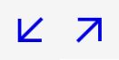 | Bottoni tagli paralleli |
 | Max |
 | Stop |
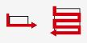 | Cambia Modalità Passate |
 | Salva |
 | Apri |
Parametri
In base al tipo di materiale che si vuole lavorare è possibile settare i parametri in maniera differente e salvarli in caso di successive lavorazioni analoghe.
Parametri in comune
 | Lunghezza del taglio singolo |
 | Misura spostamento |
Parametri configurazione lavorazione a passate
 | Penetrazione nel materiale procedendo in avanti |
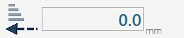 | Penetrazione nel materiale procedendo indietro |
 | Penetrazione nel materiale per l’ultima passata |
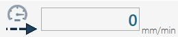 | Velocità di lavorazione procedendo in avanti |
 | Velocità di lavorazione procedendo indietro |
 | Velocità di ingresso nel materiale |
Velocità di lavorazione dell’ultima passata |
Parametri configurazione lavorazione a passata piena
 | Velocità di ingresso nel materiale |
 | Velocità di lavorazione procedendo in avanti |
Esecuzione della lavorazione
Per iniziare la lavorazione, posizionare innanzitutto la macchina nel punto di partenza desiderato. Una volta sistemata correttamente, è necessario inserire il valore della lunghezza del taglio nel campo apposito.
A questo punto, si può procedere con l’accensione del disco utilizzando i comandi presenti sulla pulsantiera del monitor. Quando tutto è pronto, avviare il processo premendo il tasto “Start ciclo”.
La lavorazione inizierà nella direzione in cui si trova la macchina al momento dell’attivazione del taglio, quindi è importante verificarne l’orientamento prima di avviare il ciclo.
La pagina programmazione file ISO permette di gestire e avviare le lavorazioni tramite file .pgm creati precedentemente attraverso programmi CAD-CAM.

Lista
La lista del programma ISO, inizialmente vuota, contiene tutti i programmi ISO che possono essere eseguiti sequenzialmente.

Pulsanti
Sono presenti una serie di pulsanti per la gestione della lista.
 | Apri File |
 | Nuova lista di ISO |
 | Aggiungi Pausa |
 | Rimuovi elemento selezionato |
 | Svuota lista |
 | Sposta elemento selezionato più in alto |
 | Sposta elemento selezionato più in basso |
Nella parte inferiore troviamo inoltre i due pulsanti relativi alle modalità di esecuzione dei programmi:
 | Manuale / automatico |
  | Singolo / prossimo automatico |
Apri file
La pressione di questo pulsante farà apparire una finestra “Apertura File“ come mostrato nella seguente immagine:

Questa finestra è suddivisa nelle seguenti componenti:
Lista Files
include tutti i file in formato .pgm presenti nella directory attualmente selezionata
Pulsanti tra la lista Files e la lista File Selezionati
Lista File Selezionati
Lista inizialmente vuota
anteprima File Selezionato
Mostra una anteprima di un file .pgm selezionato da Files o da File Selezionati
Barra inferiore e filtro di ricerca
Pulsanti centrali, collocati tra la lista “FILES“ e la lista “FILE SELEZIONATI“
 | Seleziona elemento |
 | Rimuovi elemento |
| Inserisci pausa |
 | Muovi elemento selezionato in alto |
 | Muovi elemento selezionato in basso |
Viene qui riportato il contenuto della barra inferiore:
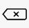 | Pulisci filtro di ricerca |
 | Ordinamento per ultima modifica |
 | Ordinamento alfabetico |
 | Visualizza file chiavetta |
 | Visualizza cartella ISO |
Visualizza contenuti | |
Rimuovi file | |
 | Abilita/Disabilita copia |
Codice Programma ISO
Il codice del programma ISO in esecuzione è visualizzato in questa finestra:

Pulsanti
In questa sezione del programma ISO abbiamo i seguenti pulsanti e relative funzionalità.
 | Timer e Reset |
 | Anteprima ISO |
 | Ricerca blocco |
 | Ricerca blocco per riga Successivamente all’inserimento di un numero nel campo “Numero della riga“ e alla pressione del pulsante “Vai a“ verrà spostata la visualizzazione del codice programma ISO alla riga desiderata, oppure all’ultima riga disponibile se il numero composto eccede il numero di righe presenti nel programma ISO selezionato. È possibile concludere la ricerca di un blocco, e ripristinare la visibilità del pulsante “Ricerca blocco“, tramite la pressione del pulsante Chiudi: |
 | Funzione Dry Run (Attivato / disattivato) L’uso di questa funzione obbliga a non impiegare NESSUN tipo di materiale durante la lavorazione perché durante l’esecuzione non vengono rispettate le velocità all’interno del programma ISO; il controllo numerico eseguirà tutto il programma alla massima velocità nominale raggiungibile con assi interpolati. |
 | Funzione Test ISO (Attivato / disattivato) |
 | Pannello ventose |
 | Salva |
Ricerca blocco
Durante l’esecuzione di file (.pgm) potrebbe essere utile la funzione ricerca blocco per riposizionare l’utensile nel punto dove la macchina abbia interrotto l’esecuzione del programma, in caso di blocco dell’utensile all’interno del materiale o altre tipologie di blocco.
Una volta premuto il pulsante è possibile ricercare la riga da cui proseguire/iniziare la lavorazione, tramite il numero di riga premendo il pulsante “Ricerca blocco per riga“ oppure scorrendo il file tramite la barra di scorrimento posta a fianco del file e selezionando la riga desiderata.
Dopo aver selezionato il punto del programma da cui la macchina proseguirà il lavoro interrotto, premere il pulsante “Start ciclo”; la macchina provvederà a ricalcolare tutte le righe di codice nel file .pgm senza effettuare alcun movimento. La velocità di questa operazione dipende dal numero di righe di codice che devono essere generate senza effettuare alcun movimento.
Ultimato il ricalcolo, la macchina attiva una pausa automatica, richiedendo un ulteriore pressione del pulsante “Start ciclo” per avviare la lavorazione.
Si consiglia prima di avviare il ciclo di considerare il posizionamento iniziale della macchina che coinvolge tutti gli assi contemporaneamente.
Questo è necessario in quanto la macchina si porta dalla posizione attuale al punto in cui inizia a lavorare cercando la strada più breve e, per far ciò, tutti gli assi si muovono per arrivare esattamente in quel punto.
Questo vuol dire che ad es. l’asse Z non si abbassa una volta arrivati al punto iniziale, ma si abbassa gradualmente durante il percorso. Questo potrebbe danneggiare la macchina o il materiale se quest’ultima dovesse collidere su del materiale in mezzo al percorso.
Quindi è possibile, in base alla situazione in cui ci si trova, deselezionare il movimento di uno o più assi, in modo tale da non causare danni.
Per farlo basta selezionare i pulsanti presenti sopra ogni asse che da verdi diventeranno rossi.
I pulsanti torneranno automaticamente verdi una volta premuto su “Start Ciclo”.
Anteprima ISO
Se l’anteprima ISO è stata abilitata verrà visualizzato a destra del riquadro “Codice Programma ISO“, un ulteriore riquadro simile a quello rappresentato di seguito:
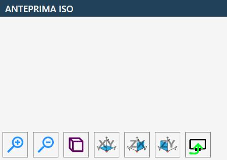
L’anteprima ISO mette a disposizione i seguenti pulsanti:
 | Visuale Prospettica |
 | Visuale ortogonale al piano XY |
 | Visuale ortogonale al piano ZX |
 | Visuale ortogonale al piano ZY |
Attiva o disattiva la visualizzazione dell’anteprima  |
Esecuzione della lavorazione
L’operatore ha la possibilità di creare una lista di file PGM aprendo i file desiderati attraverso l’apposita funzione di caricamento.
Prima di avviare l’esecuzione, è possibile — opzionalmente — modificare l’ordine dei file nella lista e inserire eventuali pause tra un’esecuzione e l’altra. Tali pause permettono di gestire in modo più flessibile il processo e, se necessario, interromperlo in sicurezza.
Impostando la modalità di esecuzione su "Automatico", è inoltre disponibile la funzione "Test ISO", utile per verificare la correttezza del programma ISO selezionato prima dell’esecuzione vera e propria.
Per avviare il ciclo di esecuzione, l’operatore deve premere il pulsante “Avvia Ciclo”. In questo modo verrà eseguito il primo programma ISO caricato e visualizzato nella lista.
I programmi ISO possono essere eseguiti secondo due modalità operative:
La modalità “Singolo” consente di interrompere l’esecuzione della programmazione al termine dell’esecuzione di ciascun file ISO. È necessario premere nuovamente il pulsante “Avvia Ciclo” per procedere con l’esecuzione del file successivo nella lista.
La modalità “Prossimo in automatico” permette l’esecuzione dei file ISO in sequenza, senza necessità di intervento manuale, fino al termine della lista.
In entrambe le modalità, eventuali pause inserite tra i file permettono all’operatore di interrompere il ciclo in qualsiasi momento, garantendo così un controllo continuo sull’esecuzione.
Il ciclo spianatura dà la possibilità di eseguire una spianatura del banco o del materiale. Questo programma è utile quando il banco è reso irregolare dai tagli, o si voglia eguagliare lo spessore del materiale.

Parametri spianatura
 | Quota dello spostamento rispetto l’asse X |
 | Quota dello spostamento rispetto l’asse Y |
 | Misura spostamento |
 | Profondità |
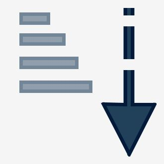 | Passo Z |
 | Velocità di taglio in affondo |
 | Velocità di taglio in avanti |
 | Modifica origine utensile |
Esecuzione della lavorazione
Il programma “SPIANATURA” non ha bisogno di azzeramento origine X, Y e Z.
Per determinare la posizione di partenza viene considerata la posizione dell’utensile nel momento in cui verrà avviato il ciclo.
Dopo aver impostato i vari parametri portarsi con il disco acceso sulla massima profondità desiderata del banco o materiale e avviare il ciclo con il pulsante START CICLO.
La pagina di scavo permette di eseguire uno scavo di forma rettangolare con raccordi e fondo piano.
Per questa lavorazione è necessario utilizzare una fresa adeguata, da montare sul mandrino principale.
Come livello per il fondo viene considerato il “livello banco”.
Il ciclo prevede la modalità a passate con ingresso elicoidale al centro e distanza passate impostabile da parametri.

Parametri
 | X |
 | Y |
 | Raccordo R |
 | Profondità dello scavo |
 | Passo Z |
 | Distanza Passate |
 | Incremento di profondità in ingresso  |
 | Velocità Lavoro |
 | Velocità Discesa |
 | Azzeramento Assi X e Y 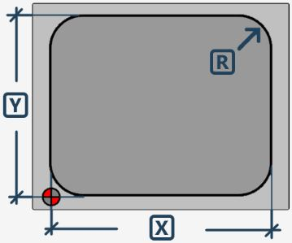 La posizione viene presa posizionando il centro fresa nel punto indicato. |
Esecuzione della lavorazione
Inserire le misure X, Y, ed R che caratterizzano la forma dello scavo rettangolare che si vuole ottenere.
Verificare la correttezza dei dati relativi all’utensile, in particolare il diametro.
Sono disponibili le due seguenti modalità di esecuzione
Modalità Raggiungimento scavo fino a quota banco
Per eseguire correttamente uno scavo, è necessario posizionare il centro della macchina nel punto di origine dello scavo, come mostrato nella figura presente nel capitolo precedente. Questo assicura che l’intera lavorazione si sviluppi correttamente rispetto all’area designata.
Successivamente, si procede con l’impostazione delle misure caratteristiche della forma dello scavo che si intende effettuare.
Prima di avviare la lavorazione, è fondamentale verificare l’esattezza dei dati dell’utensile selezionato, con particolare attenzione al diametro, in quanto esso influisce direttamente sulla precisione e sulla qualità dello scavo.
L’acquisizione della “quota banco” va effettuata riferendosi al livello del fondo dello scavo. Per determinarla correttamente, ci si posiziona sul bordo superiore del materiale e si azzera la quota Z. Da lì, si effettua uno spostamento verso il basso pari alla profondità desiderata dello scavo. A questo punto si può acquisire la quota banco tramite l’apposito pulsante. In presenza di utensili tipo fresa, si consiglia di compiere questa operazione con l’asse A posizionato a 90_, così da evitare imprecisioni dovute alla lunghezza effettiva dell’utensile.
Una volta definita la quota banco, si procede all’azzeramento degli assi X e Y. Questo si effettua premendo il relativo tasto di reset, posizionando il centro della fresa esattamente nel punto indicato in figura mediante il simbolo di riferimento. Nelle macchine dotate di laser puntatore, è possibile acquisire il punto zero in X e Y utilizzando direttamente il riferimento fornito dal laser.
La profondità dello scavo dipende direttamente dal livello impostato come quota banco e dalla posizione dell’asse Z al momento dell’avvio del ciclo, tramite il pulsante “Start ciclo”. La lavorazione avviene mediante un ingresso elicoidale al centro, fino alla profondità specificata nel parametro “Passo in Z”. Successivamente, l’area viene svuotata con un movimento concentrico, seguendo la distanza impostata nei parametri di lavorazione.
Gli spostamenti della macchina necessari per raggiungere la posizione iniziale avvengono alla cosiddetta “quota di svincolo”, che può essere definita nei parametri utensile. Questo assicura che l’utensile non interferisca con eventuali ostacoli durante i movimenti di posizionamento.
Modalità Posizionamento sopra il pezzo e azzeramento del valore origine
Questa modalità prevede l’impostazione e il successivo impiego del parametro: ”Profondità dello scavo”
Con questa funzionalità è possibile aggiungere i tagli multipli.
Questa particolare tipologia di tagli permette di creare una serie di tagli paralleli tra loro nello stesso gruppo, con la possibilità di avere due gruppi ciascuno con la sua direzione impostabile.
L’interfaccia appare simile alla seguente:

Barra laterale
Selezione e gestione gruppi di tagli
 | Creazione primo gruppo di tagli |
| Creazione secondo gruppo di tagli |
 | Gestione dei tagli |
Parametri tagli
Per ciascuno dei due gruppi di tagli a disposizione dell’operatore è possibile inserire fino a 100 configurazioni simultanee di tagli, con i rispettivi parametri.
 | Direzioni ortogonali |
Larghezza | La distanza tra un taglio e l’altro. |
Numero | La quantità di tagli paralleli da creare. |
 | Posizione tagli |
 | Visualizza tagli successivi/Precedenti |
Allungamento tagli
L’operatore ha la possibilità di allungare tutti i tagli presenti nel primo e nel secondo gruppo all’inizio o alla fine della misura impostata.
 | Start |
 | End |
Cancella e aggiorna tagli
Cancella tagli | |
 | Aggiorna tagli |
Asse C
È possibile ruotare la testa della macchina al fine di regolare l’orientamento dei tagli sia del primo che del secondo gruppo.
 | Ruota _90 |
 | Ruota -90 |
 | Rotazione testa macchina |
 | MDI |
Spessore
L’operatore può andare a definire lo spessore della lastra che si andrà a tagliare.
 | Spessore manuale |
Spessore con macchina |
Esecuzione della lavorazione
L’operatore ha la possibilità di impostare entrambi i gruppi di taglio modificandone i relativi parametri.
Una volta ottenuto il risultato desiderato potrà essere premuto il pulsante “Avvia ciclo“ per eseguire la lavorazione.
Primo gruppo tagli
Nel primo gruppo di tagli verranno definiti uno o più gruppi di tagli modificando i parametri Larghezza, Numero e Posizione Tagli, oltre alla rotazione dell’asse C.
Nella seguente lavorazione sono stati impostati dei tagli paralleli rispetto alla posizione attuale della macchina.
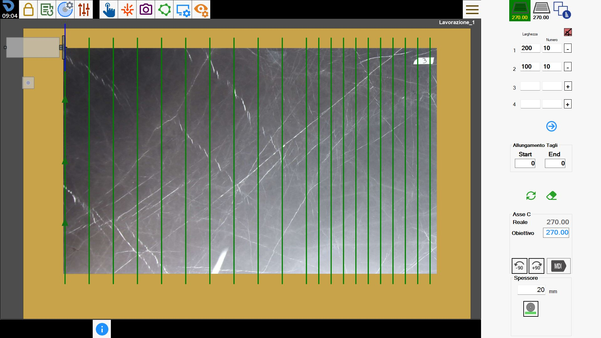
Secondo gruppo tagli
Similmente al primo gruppo di tagli, anche per il secondo è possibile modificare i parametri per ottenere il risultato ricercato.
In questa lavorazione la direzione dei tagli è stata modificata, eseguendo alcuni tagli ortogonali rispetto a quelli del primo gruppo.

Ottimizzazione e gestione dei tagli
In questa sezione possiamo andare a modificare l’ordine di esecuzione dei tagli con la possibilità di scegliere se eseguire o meno un taglio .

IsoCam è il software per l’esecuzione di sagomature con il disco; permette di disegnare o importare sagome, decidere il profilo e applicare diversi modi di lavorazione.
La gestione della programmazione del lavoro viene divisa in diverse fasi che verranno descritte nei seguenti paragrafi.
All’apertura del programma Isocam, se non è presente alcuna lavorazione precedentemente creata, l’operatore potrà crearne una nuova, dal primo passo di lavorazione.
Nel caso invece in cui sia presente una lavorazione precedentemente creata, questa verrà automaticamente caricata e l’operatore avrà accesso direttamente all’ultimo step della lavorazione:

Elementi in comune tra i vari step
L'interfaccia utente è composta da diverse aree.
Menù: utility rapide.
Barra superiore: funzioni specifiche della pagina attiva.
Parte centrale: contiene il disegno o l’area attiva in base alla pagina.
Barra laterale: finestra contenente i parametri da modificare.
Barra inferiore: pulsanti generalmente validi in diverse aree del software.
I seguenti elementi rimarranno sempre visibili, indipendentemente dalla fase corrente del processo.
Menù
La barra dei menù è collocata in alto, al di sopra di ogni altro elemento di questa interfaccia.
Visualizza | Vengono messe a disposizione dell’operatore alcune impostazioni relative alla visibilità dei pezzi presenti nell’area di lavoro. |
Opzioni | È possibile modificare impostazioni relative ai colori. |
Lingua | ISOCAM è attualmente disponibile nelle seguenti lingue:
|
Barra laterale destra
 | Impostazioni |
 | Info |
 | Gestione Step |
 | Chiudi |
Impostazioni
Questo pannello permette di passare alla modalità Avanzata di IsoCam, di tornare alla versione base, e di modificare i valori di Passo Griglia in X e Y.

Barra inferiore
 | Nuova lavorazione |
 | Apri lavorazione |
 | Salva lavorazione |
 | Modifica lavorazione |
Disegno della sezione (step 1 di 4)
La prima fase della programmazione consiste nel disegno della sezione da lavorare. La finestra propone i comandi caratteristici di un software CAD: disegno linea, disegno arco, snap, sposta, ecc…
L’idea alla base del software è la creazione della sezione come veloce schizzo che verrà poi modificato, entità per entità, con gli appositi comandi. Rimane sempre attiva la possibilità di importare disegni .dxf generati da CAD esterni.

Barra superiore

 | Comando disegno Linea |
 | Comando disegno arco |
 | Muove i tratti selezionati |
 | Figura Speculare |
 | Raccorda |
 | Inversione della selezione attiva |
 | Elimina tratti selezionati |
Barra laterale destra
Proprietà linea
Selezionando una linea nell’area di lavoro, la colonna laterale destra viene aggiornata per mostrare le caratteristiche dell’entità selezionata, che possono essere modificate dall’utente:
Lunghezza | Indica la distanza lineare tra i due estremi della linea selezionata, calcolata in base alle coordinate nello spazio di lavoro. |
Angolo | Indica l’orientamento della linea rispetto all’asse orizzontale del sistema di riferimento. |
Δx | Indica la variazione della coordinata X tra il punto iniziale e quello finale di una linea o entità, ovvero la distanza orizzontale percorsa rispetto all’asse X del sistema di riferimento. |
Δy | Indica la variazione della coordinata Y tra il punto iniziale e quello finale di una linea o entità, ovvero la distanza verticale percorsa rispetto all’asse Y del sistema di riferimento. |
 | Allunga/Accorcia linea selezionata |
 | Approssima Angolo |
Scala tratti connessi | Consente di applicare una scalatura proporzionale a tutte le entità direttamente o indirettamente collegate alla linea selezionata. |
Proprietà arco
Selezionando un arco nell’area di lavoro, la colonna laterale destra viene aggiornata per mostrare le caratteristiche dell’entità selezionata, che possono essere modificate dall’utente.
L’arco può essere definito in diversi modi: per punti, come centro, raggio e arco , ecc…
Le varie caratteristiche vengono mostrate nella finestra che appare sulla destra.
La variazione di alcune caratteristiche può essere soddisfatta in diversi modi, ad esempio cambiando il raggio o il punto iniziale/finale; per discriminare il modo di modifica è presente il flag “Centro fisso”.
Raggio | Indica la distanza costante tra il centro di una curva circolare o di un arco e qualsiasi punto lungo la sua circonferenza. |
Angolo iniziale/finale | Angolo del punto iniziale o finale rispetto al centro. |
Tangente Prec. / Succ. | Modifica l’angolo iniziale o finale in modo che l’arco risulti tangente all’entità precedente o successiva. |
Centro fisso | Permette di decidere le conseguenze di una modifica (raggio o angolo). |
Sposta / Muovi selezione
All’abilitazione del comando “sposta” appare la finestra con i parametri per la movimentazione. La movimentazione può essere fatta direttamente tramite click sull’area di disegno (anche con gli snap attivi) o tramite impostazione dei parametri.
La conferma dello spostamento deve essere data con il pulsante “OK”.
 | Selettore posizione |
 | Traslazione |
Muovi copia | Se abilitata, la funzione crea una copia dell’entità selezionata e applica lo spostamento solo a questa copia, lasciando invariata l’entità originale. |
Specchia
Dopo aver abilitato il comando è necessario impostare il centro di simmetria tramite click sull’area di lavoro o impostando le quote, selezionare la direzione dello specchia e premere il pulsante “OK” per confermare.
Centro di simmetria | Consente di modificare le coordinate del centro di simmetria utilizzato per il ribaltamento orizzontale o verticale dell’entità selezionata. |
Coordinate da invertire | Indica se eseguire il ribaltamento in orizzontale, in verticale oppure in entrambe le direzioni. |
Specchia copia | Se attivata, l’operazione di specchiatura viene eseguita creando una copia specchiata dell’entità selezionata, mantenendo intatta l’originale. |
Raccorda
Un primo messaggio, visualizzato nella colonna di destra, consente all’operatore di impostare il raggio del raccordo e confermare la selezione.

Un secondo messaggio informa l’operatore che è ora possibile inserire raccordi tra due linee, operazione disponibile fino alla disattivazione della funzionalità.

Di seguito l’esempio di applicazione di raccordi su due linee adiacenti e una linea adiacente a un arco:

Dopo l’applicazione dei raccordi:

Barra inferiore
 | Importa file DXF |
 | Esporta file DXF |
 | Annulla modifica |
 | Snap inizio/fine |
 | Comando Orto |
 | Comando Tratti connessi |
 | Griglia di disegno |
 | Undo Zoom |
 | Seleziona selezione per Zoom |
 | Ripristina Zoom |
Selezione profilo (step 2 di 4)
La sezione precedentemente disegnata deve essere applicata su un opportuno profilo.
Il profilo può essere lineare o ad arco, nel piano X/Y o anche verticale; in base alla selezione verranno poi abilitate o disabilitate alcune modalità di lavoro. Così, ad esempio, un profilo ad arco nel piano XY può essere lavorato solo con disco verticale e viceversa per un profilo ad arco nel piano XZ o YZ.
La tipologia di profilo viene scelta con i pulsanti sulla sinistra, al centro in alto vengono mostrati i parametri per descrivere geometricamente il profilo e nella parte centrale in basso viene mostrata l’anteprima del risultato.

Parte centrale
Profilo Lineare | Si imposta la direzione e la lunghezza. |
Profilo ad arco | Si definiscono: direzione, piano di lavoro, concavità e le caratteristiche geometriche. |
Profilo a cerchio | Verrà lavorato solo esternamente con disco orizzontale. |
Parametri profilo Lineare

Esecuzione Profilo | Sono disponibili due modalità: “Lungo X” e “Lungo Y”. |
Lunghezza linea (L) | Lunghezza orizzontale della base del tratto inclinato, misurata tra il punto di partenza e il punto finale proiettato orizzontalmente. |
Delta Z punto finale (H) | Altezza del tratto inclinato, ovvero la differenza di quota tra l’inizio e la fine del segmento. |
Parametri profilo Arco

Esecuzione Profilo | Scelta tra “Lungo X“ oppure “Lungo Y“. |
Orientamento lavorazione | Scelta tra “Piano XZ“ oppure “Piano XY“. |
Tipo di lavorazione | Scelta tra “Concavo“ oppure “Convesso“. |
Lunghezza (L) | Distanza orizzontale tra i due estremi dell’arco, ovvero la corda che collega l’inizio e la fine dell’arco. |
Raggio di partenza (R) | Distanza dal centro dell’arco al punto dell’arco stesso. Determina la curvatura complessiva dell’arco. |
Sviluppo in verticale (H) | Altezza massima dell’arco rispetto alla corda L; rappresenta la distanza verticale tra il punto più alto dell’arco e la corda. |
Ampiezza angolo (A) | Angolo al centro sotteso dall’arco, espresso in gradi. |
La modifica di uno dei seguenti valori: “Lunghezza”, “Raggio di partenza”, “Sviluppo in verticale” o “Ampiezza dell’angolo”, comporta il ricalcolo automatico dei parametri rimanenti.
Parametri profilo Cerchio

Raggio di partenza (R) | Determina il raggio dal punto di partenza. |
Custodia | Questo flag indica se nella fase di lavoro l’asse C ruota (custodia attiva) o rimane fermo con C=0_ (custodia non presente). |
Barra inferiore
 | Vista tavola |
 | Luci aggiuntive |
 | Gestione delle viste di default |
Parametri di lavoro (step 3 di 4)
La pagina è divisa in riquadri con diversi tipi di dati da impostare per la lavorazione

Parametri utensile
L’operatore può definire i parametri dell’utensile:

Se si tratta di un nuovo progetto i dati vengono caricati automaticamente in base all’utensile fisicamente installato; se si tratta invece di una lavorazione precedentemente salvata, i dati dell’utensile saranno quelli già salvati nel programma precedente.
 | Nome utensile |
 | Spessore |
 | Diametro |
 | CRF (Centro Rotazione Flangia) |
 | Quota di sicurezza |
 | RPM (Giri Al Minuto) |
Orientamento lavorazione

Profilo Lineare
Per profili lineari c’è la possibilità di scegliere se eseguire la lavorazione con disco in verticale o con disco in orizzontale (da fronte o da sinistra).
Orientamento Verticale | Orientamento Orizzontale |
 |  |
Profilo Arcato
Per profili curvilinei l’orientamento è vincolato dal tipo di profilo:
Tipo di lavorazione | Orientamento Verticale | Orientamento Orizzontale |
Concava |  |  |
Convessa |  |  |
Tipo di lavorazione

La lavorazione può essere eseguita in due modalità:
 | Modalità per tagli |
 | Modalità spatolato |
Configurazione Per tagli
Verranno eseguiti tagli paralleli fra loro che seguono il profilo selezionato ad una distanza fra i tagli presa da parametro.

Passo | Indica la distanza fra la posizione di un taglio e di quello adiacente. Se superiore allo spessore del disco rimarrà del materiale fra le passate. |
Allungo inizio / fine | Permette di allungare un taglio nella parte iniziale / finale del valore impostato. |
Più Auto | L’abilitazione del flag comporta un incremento automatico del valore di allungo, sulla base di un valore stabilito dal sistema. |
Sovramateriale | Spessore del materiale da lasciare sopra la sezione finale desiderata. |
Direzione tagli | La direzione del taglio può avvenire da destra verso sinistra oppure da sinistra verso destra, a seconda della configurazione selezionata. |
Configurazione Spatolato
Il movimento sarà trasversale alla direzione del profilo, viene utilizzata per una finitura superficiale del pezzo.

Passo di spatolamento | Indica la distanza tra un movimento trasversale e il successivo lungo la direzione del profilo. |
|---|
Velocità e modo di taglio
In base alle selezioni precedenti appaiono diversi menù per la selezione dei parametri necessari a definire la lavorazione.

Se il tipo di lavorazione selezionata è la Configurazione per Tagli, saranno disponibili due tipologie di parametri di lavoro:
 | Modalità Marmo |
 | Modalità Granito |
Modalità Marmo
Parametri generali:
Tagli nei due sensi (finitura) | Questo flag permette di impostare una velocità di ritorno diversa dalla velocità di andata. |
Non alzare mai (finitura) |
Parametri di velocità:
Andata | La velocità di esecuzione di andata della passata. |
Ritorno | La velocità di esecuzione di ritorno della passata. |
Penetrazione | La velocità di esecuzione di penetrazione della passata. |
Minima | Impostando un valore diverso da zero la velocità di taglio dipenderà dalla profondità del taglio stesso, si avrà quindi un movimento a velocità di andata per tagli a profondità nulla e a velocità minima quando il taglio è alla massima profondità per la sezione selezionata. |
Modalità Granito

Parametri generali:
Asportazione in taglio | Quantità di materiale che viene asportata nella passata di andata. |
Asportazione in ritorno | Quantità di materiale che viene asportata nella passata di ritorno. |
Se il tipo di lavorazione selezionata è la Configurazione Spatolato, sarà disponibile un unico parametro di lavoro:
Velocità - Lavorazione | Imposta la velocità con cui il tipo di lavorazione spatolato verrà eseguita. |
|---|
Parametri di lavorazione (avanzato)
 | Parametri di lavorazione (avanzato) |
In questa schermata è possibile verificare e modificare diversi parametri, molti dei quali sono stati impostati negli step 2 e 3.

La prima operazione consiste nella selezione del tipo di profilo da utilizzare:
 | Lineare |
 | Arcato |
E successivamente i seguenti parametri:
Lavorazione | Può essere per tagli o spatolato. |
Orientamento lavorazione | La lavorazione può essere eseguita in verticale oppure in orizzontale. |
Esecuzione profilo lungo | Lungo X oppure Y. |
Dati di Lavorazione
Per il profilo Lineare è possibile impostare i seguenti parametri:
Spessore del materiale | Definisce la misura dello spessore del materiale (in mm) |
Inclinazione del profilo (mm) | Permette di definire l’inclinazione del profilo indicando la differenza di altezza tra il punto finale ed il punto iniziale. |
Per il profilo Arcato sono messi a disposizione i parametri impostabili nei passi precedenti.
Entrambi i profili hanno inoltre i seguenti dati di lavorazione in comune:
Passo | Fisso in Y: mantiene la distanza fissa fra i tagli indipendentemente dalla sezione sottostante |
Direzione tagli | Scelta tra “Y_“ oppure “Y-“. |
Lavorazione completa del profilo | Permette di scegliere se eseguire o meno la lavorazione completa del profilo. |
Forza tagli su angoli | Aggiunge tagli nei punti di variazione di pendenza. |
Togli sovrapposti | Se questo flag è abilitato e il valore “Passo“ è maggiore del valore “Spessore“, verranno eliminati i tagli sovrapposti. |
Passo ottimizzato (tintura) % Sorm. | Se il valore “Passo“ è minore del valore “Spessore“, il passo sarà ottimizzato sulle linee orizzontali. |
Esegui taglio all’inizio | Permette di scegliere se eseguire o meno un taglio all’inizio del profilo. Tramite la casella a fianco è possibile impostare la profondità di questo taglio. |
Esegui taglio alla fine | Permette di scegliere se eseguire o meno un taglio alla fine del profilo. Tramite la casella a fianco è possibile impostare la profondità di questo taglio. |
Dati Utensile
Sono qui riportati alcuni dati precedentemente impostati e altri parametri specifici per l’utensile.

Descrizione utensile | Una rapida descrizione dell’utensile |
 | Magazzino utensili |
N_ Posizione | Indica il numero della posizione all’interno del magazzino dell’utensile selezionato. |
N_ Correttore | Indica il numero che identifica il nome dell’utensile selezionato. |
Spessore anima disco (SA) | Spessore del corpo portante centrale del disco. |
Forma dente | L’operatore potrà scegliere una tra tre forma del dente:
|
 | Scelta materiale
|
Priorità | È possibile stabilire un valore di priorità (rigorosamente positivo). |
Profondità | Indica la profondità del taglio utensile. |
Lavorazione (step 4 di 4)
In base alle selezioni precedenti viene visualizzata un’anteprima dei tagli calcolati. La pagina è divisa in diverse aree con i comandi per gestire le modifiche.

Una volta verificati i tagli o effettuate le modifiche desiderate premere sul pulsante “AVANTI” per aprire la pagina per generare il programma di taglio.
Menù
Nel quarto step viene resa visibile un’ulteriore voce nel menù superiore:
Tagli | Questo menù offre all’operatore alcune rapide impostazioni per i tagli generati. |
|---|
Barra superiore
 | Generazione tagli |
 | Modifica la posizione del taglio |
 | Aggiunge un taglio di testa per separazione dei pezzi |
 | Aggiunge un taglio di coda per separazione dei pezzi |
 | Aggiunge un taglio nella posizione del mouse (Ins) |
 | Elimina il taglio selezionato |
 | Elimina i tagli precedenti al taglio selezionato |
 | Elimina i tagli successivi al taglio selezionato |
 | Simulazione tagli |
Parte centrale
Barra laterale destra
Nel quarto step questa barra contiene le seguenti informazioni:
 | Progressivo taglio |
 | Dati Generali |
 | Dati Tagli |
Barra inferiore
 | Opzioni sul taglio |
  | Sposta/allunga tagli |
 | Shift |
Creazione programma
Al completamento della preparazione nel quarto step, è possibile accedere alla fase finale, che include la visualizzazione del risultato ottenuto e la generazione del file ISO.
Nella parte centrale viene mostrato il 3D della lavorazione generata tenendo in considerazione il modo di lavoro. Cliccando nell’area è possibile ruotare la vista e gestire lo zoom.

Procedura base
Passo 1
Per iniziare, premere il pulsante "Nuova lavorazione". Assicurarsi che la funzione "Tratti connessi" sia attiva, quindi attivare il comando "linea". Procedere con una serie di clic sull’area di lavoro per disegnare la sezione desiderata. Una volta completato il disegno, fare nuovamente clic sul comando "linea" per disattivarlo. A questo punto, selezionare ogni entità individualmente per verificarne e, se necessario, modificarne i parametri.
Passo 2
In questo passo l’operatore può impostare alcune generalità basilari legate al tipo di lavorazione ricercata.
Passo 3
A questo punto è possibile impostare parametri relativi all’utensile, al tipo, orientamento e parametri della lavorazione selezionata.
Nel pannello “Parametri di lavorazione (avanzato)“ inoltre è possibile avere una panoramica di tutti i parametri impostati fino a questo momento.
Passo 4
Viene automaticamente generata una lista di tagli per la lavorazione corrente. È possibile inserire, modificare e rimuovere tagli in relazione alle esigenze operative.
Generazione ISO
Il passo finale della lavorazione permette all’operatore di creare un file ISO dalla lavorazione ottenuta oppure di ricominciare la procedura.
Il programma Lucidatura consente di effettuare la lucidatura mediante diverse tipologie di lavorazione. È possibile, inoltre, scegliere la modalità di acquisizione della geometria della lastra: attraverso la rilevazione dei punti che determinano i vertici della superficie (da tre fino a un massimo di sei) o utilizzando una superficie regolare (rettangolo) mediante l’inserimento della quota di zero e del valore dei due lati.
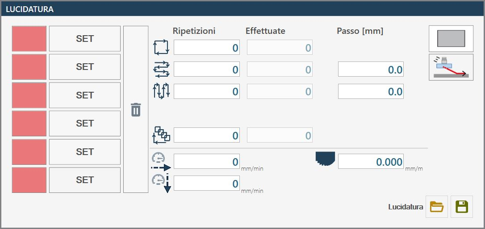
Modalità di lavorazione
Per utilizzare questa lavorazione, occorre innanzitutto scegliere una delle due modalità disponibili, selezionando il pulsante corrispondente:
Le modalità ‘
Selezione rettangolo
' e '
Selezione libera dei punti
’ sono mutuamente esclusive: l'attivazione di una esclude automaticamente l'altra.
/1.1-20250303-082732.png) | Passa a modalità Selezione libera dei punti |
/1.2-20250303-082732.png) | Passa a modalità Selezione rettangolare |
Modalità ingresso/uscita
I pulsanti in figura consentono di modificare l’ingresso e l’uscita dell’utensile tra modalità progressiva e standard.
Le modalità ‘
Progressiva
' e '
Standard
’ sono mutuamente esclusive: l'attivazione di una esclude automaticamente l'altra.
/2.1_b-20250731-113844.png) | Passaggio a modalità progressiva |
|---|---|
/2.2_b-20250731-113804.png) | Passaggio a modalità standard |
Modalità Selezione libera dei punti
Questa modalità viene visualizzata come di seguito:
/c-20250731-120333.png)
Parametri
Posizione punti
/3.1.1.1-20250731-111822.png) /3.1.1.2-20250731-111843.png) | Set (Imposta) |
/3.1.1.3_b-20250731-112553.png) | Pulisci |
Tipologie lavorazione
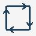 | Contorno |
/3.1.2.2_b-20250731-114218.png) | Passate orizzontali |
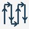 | Passate verticali |
/3.1.2.5_b-20250731-114340.png) | Ripetizione globale |
Parametri lavorazione
Ripetizioni | Ogni tipologia di lavorazione può essere ripetuta un numero di volte fissato in questo apposito campo. |
Effettuate | Viene visualizzato il numero di ripetizioni effettuate. |
Passo [mm] | Indica la distanza tra una passata e la successiva, selezionabile per ogni tipo di lavorazione. |
Parametri utensile per la lucidatura
/3.2.1_b-20250731-114407.png) | Velocità di lavoro |
/3.2.2_b-20250731-114433.png) | Velocità di discesa |
/3.2.3_b-20250731-114455.png) | Usura utensile |
Esecuzione modalità Selezione libera dei punti
Tra una lavorazione e la successiva la macchina effettua gli spostamenti senza alzarsi alla quota di sicurezza.
L’operatore imposta la posizione di un minimo di tre fino a un massimo di sei punti disponibili, movimentando la macchina manualmente e utilizzando i relativi comandi di salvataggio. Completata la definizione dei punti, si procede con la configurazione dei parametri di lavorazione per ciascuna tipologia di lucidatura desiderata. Contestualmente, vengono impostati anche i parametri specifici dell’utensile da utilizzare per la lucidatura.
In qualsiasi momento prima dell’avvio del ciclo di lucidatura, l’operatore ha la possibilità di modificare la modalità di ingresso e uscita dell’utensile selezionando una delle due opzioni disponibili.
A configurazione completata, è necessario inclinare l’asse A della macchina a 90_ e avviare la rotazione del disco. L’operatore può quindi procedere all’esecuzione dei cicli programmati premendo il pulsante “Avvia ciclo”. Durante l’esecuzione, lo stato di avanzamento può essere monitorato attraverso la colonna “Effettuate”, che riporta i cicli completati per ciascuna tipologia di lucidatura selezionata.
Modalità Selezione rettangolare
Questa modalità viene visualizzata come di seguito:
/d-20250731-120352.png)
Parametri
Posizione rettangolo
Lati del rettangolo |
Parametri lavorazione
Si rimanda a modalità parametri lavorazione Selezione libera dei punti per le lavorazioni: Contorno, Passate orizzontali/verticali e Ripetizione globale.
/3.1.2.4_b-20250731-114318.png) | A zig zag |
Parametri dell’utensile per la lucidatura
Si rimanda a Parametri disco Selezione libera dei punti per i parametri del disco: Velocità di lavoro, Velocità di discesa e Usura del disco.
/3.2.4_b-20250731-114520.png) | Passo asse Y per Zig Zag |
Esecuzione modalità Selezione rettangolare
Tra una lavorazione e la successiva la macchina effettua gli spostamenti senza alzarsi alla quota di sicurezza.
L’operatore definisce la posizione del rettangolo destinato alla lucidatura, movimentando manualmente la macchina e modificando i valori delle coordinate corrispondenti. Una volta completata la definizione del rettangolo, si procede con la configurazione dei parametri di lavorazione per ciascuna tipologia di lucidatura desiderata. Contestualmente vengono impostati anche i parametri specifici dell’utensile impiegato per la lucidatura.
In qualsiasi momento prima dell’avvio del ciclo di lucidatura, l’operatore ha la possibilità di modificare la modalità di ingresso e uscita dell’utensile selezionando una delle due opzioni disponibili.
A configurazione completata, è necessario inclinare l’asse A della macchina a 90_ e avviare la rotazione del disco. L’operatore può quindi procedere all’esecuzione dei cicli programmati premendo il pulsante “Avvia ciclo”. Durante l’esecuzione, lo stato di avanzamento può essere monitorato attraverso la colonna “Effettuate”, che riporta i cicli completati per ciascuna tipologia di lucidatura selezionata.
La pagina Lista programmazione file ISO permette di eseguire più programmi consecutivamente, creati precedentemente attraverso programmi CAD-CAM, per macchine con due aree di lavoro, macchine Twin o programmi con più lavorazioni create quando già la macchina è in funzione.

Barra superiore
Nella barra superiore sono riportate informazioni di monitoraggio dello stato di avanzamento della lista
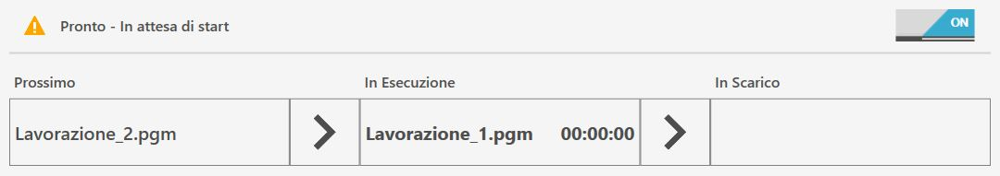
  | Attivazione/Disattivazione Lista Programmi ISO |
  | Stato di esecuzione della lista |
   | Barra di avanzamento della lista |
Barra di avanzamento della lista
Questa barra di avanzamento fornisce informazioni sullo stato di esecuzione del programma ISO in corso, offrendo al contempo una panoramica generale sul programma successivo in lista e su quello che ha già completato la fase di lavorazione ed è passato allo scarico.

Nell'immagine precedente non è ancora visibile alcun programma in fase di scarico, poiché l'esecuzione della lista non è stata avviata e nessun pezzo è stato ancora processato. Viceversa, nel caso in cui sia presente un solo file ISO nella lista oppure la lavorazione sia stata avviata e tutti gli altri file siano già stati eseguiti, la sezione Prossimo risulterà vuota.
Durante l'esecuzione, verrà visualizzato in tempo reale lo stato di avanzamento del programma, come illustrato di seguito.

Menù laterale
Sul lato destro del pannello ventose sono presenti alcuni pulsanti relativi alla gestione dei singoli file nella lista programmi.
 | Esegui programma successivo |
 | Sposta elemento selezionato più in alto |
 | Sposta elemento selezionato più in basso |
 | Cancella elemento selezionato |
 | Pannello ventose |
Pannello Ventose
E’ possibile utilizzare le ventose in manuale per spostare dei pezzi da una zona di lavoro all’altra.

Pulsanti ventose
 | Abilitazione / disabilitazione ventose |
 | VENTOSE: ALZA - Parcheggio ventose |
 | VENTOSE: ABBASSA - Predisponi ventose |
 | SOLLEVA PEZZO: RILASCIA - Scaricamento pezzo |
 | SOLLEVA PEZZO: AVVIA - Sollevamento pezzo |
  | SOFFIO - Comando soffio |
  | VUOTO - Comando pompa del vuoto |
Condizioni di sicurezza
Prestare particolare attenzione alle ventose attive durante il sollevamento, assicurandosi che le aree utilizzate siano sufficienti a sollevare il pezzo oggetto della movimentazione. Cercare di utilizzare sempre la maggior area di vuoto disponibile per effettuare la presa del pezzo e controllare che non ci siano difetti e rotture sul materiale che possano creare pericoli o problemi al funzionamento della macchina.
Una volta accesa la pompa del vuoto, il suo spegnimento è consentito solo attraverso le funzioni automatiche predisposte allo scopo. La pressione del pulsante di reset o del fungo di emergenza non ha alcun effetto sulla pompa del vuoto che continuerà a funzionare. Lo spegnimento della pompa può essere forzato mediante l’apposito pulsante dentro la pagina “Comandi Aggiuntivi”.
Nelle procedure automatiche, prima di effettuare il sollevamento del pezzo, viene controllato lo stato del vuoto attraverso un apposito sensore: se non viene rilevato un valore di vuoto sufficiente appare l’allarme “mancanza vuoto”. La pompa continuerà a rimanere attiva fino a quando il vacuostato non rileva un valore corretto, oppure se verrà disabilitata dalla pagina “Comandi Aggiuntivi”.
La mancanza di alimentazione alla pompa del vuoto comporta una veloce perdita dello stesso e la conseguente caduta del materiale sollevato con le ventose.
Barra inferiore
Nella parte inferiore della barra vengono visualizzate alcune funzionalità relative all’esecuzione della lista dei programmi ISO, oltre al monitoraggio sia dell’utensile sia della lastra.

Gestione esecuzione lista
Nella parte inferiore troviamo inoltre i due pulsanti relativi alle modalità di esecuzione dei programmi:
  | Manuale / automatico |
  | Singolo / prossimo automatico |
Monitoraggio lastra e utensile
Al centro e sulla destra della barra inferiore, l’operatore può configurare monitoraggi periodici del diametro dell’utensile, impostando controlli a intervalli definiti in base al numero di cicli effettuati.

 | Numero di Cicli tra le Tastatura Disco |
|---|---|
 | Numero di Cicli alla Prossima Tastatura |
 | Diametro utensile |
 | Spessore lastra |
Esecuzione della Lista Programmi ISO
Se la Lista Programmi Iso è disattivata, l’interruttore in alto a destra del pannello comparirà spento; sarà quindi possibile abilitare la funzionalità semplicemente cliccando questo pulsante.
La lista di programmi ISO viene automaticamente ampliata man mano che vengono generati ISO in Parametrix, ad ogni modo l’operatore può ricollocare elementi all’interno della lista oppure rimuoverli da essa in base alle proprie esigenze.
Prima di procedere con l’esecuzione della lista, l’operatore ha la possibilità di impostare il numero di cicli che verranno eseguiti tra le operazioni di tastatura dell’utensile.
Verrà quindi aggiornato e visualizzato il numero di cicli rimanenti alla tastatura successiva.
L’operatore avvia l’esecuzione della lista di programmi premendo il pulsante “Avvia ciclo“. In tal modo, i programmi vengono eseguiti in sequenza, con la visualizzazione simultanea del programma in corso, di quello che sarà eseguito successivamente e di quello già completato.
Se la modalità di esecuzione dei programmi è impostata su Manuale e Singolo, l’esecuzione della lista verrà interrotta al termine del programma in esecuzione, appena dopo aver preparato il successivo programma da eseguire.
In tale evenienza l’operatore ha la possibilità di premere il pulsante Successivo quando ritiene più opportuno e procedere con l’esecuzione pigiando nuovamente il pulsante “Avvia Ciclo“
Il sistema è stato progettato per facilitare l’operatore nella programmazione dei tagli automatici. Attraverso il software è possibile:
Stabilire la posizione della lastra nell’area di lavoro della macchina e creare il perimetro del materiale per la lavorazione
Creare pezzi attraverso figure parametriche
Importare figure realizzate con altri CAD
Generare una lista di pezzi da lavorare
Ricercare la miglior posizione dei pezzi sulla lastra
Impostare funzioni speciali di taglio
Programmare l’ordine di taglio e creare la movimentazione macchina
Monitorare a video l’esecuzione dei tagli

Area di lavoro e lista dei pezzi
Di seguito è riportata una rappresentazione tipica dell’area di lavoro di Parametrix con la lista dei pezzi importati già popolata e una immagine della lastra acquisita.
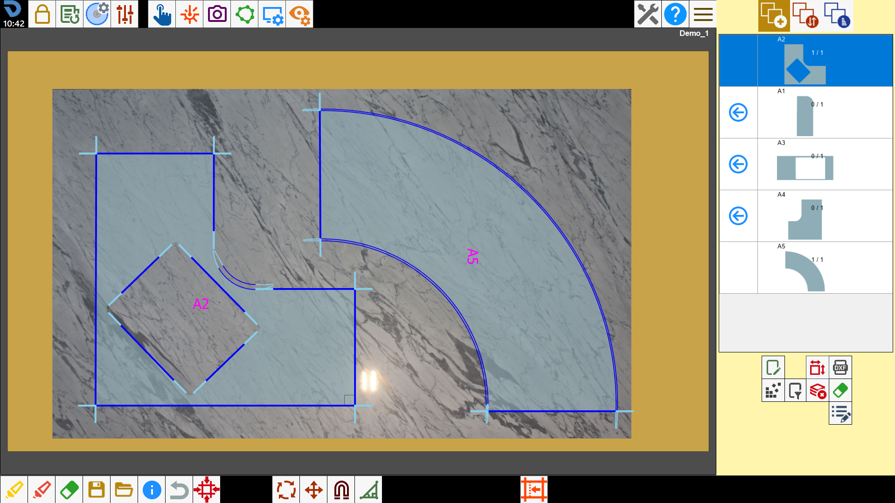
Lista pezzi inseriti
Quando viene creato un pezzo il programma lo aggiunge sulla lista pezzi; dalla lista è possibile inserirli sull’area di lavoro oppure fare alcune modifiche al pezzo e controllare il numero di pezzi mancanti alla lavorazione.

Posizionamento pezzi
Parametrix permette di posizionare pezzi dentro l’area di lavoro della macchina per creare il file di taglio.
Una volta acquisita la lastra, creato il perimetro e creati i pezzi della lavorazione, bisogna importare i pezzi all’interno della lastra, con il pulsante sulla tabella di pezzi viene messo il pezzo all’interno dell’area di lavoro. È possibile lavorare con 1 o più pezzi contemporaneamente.
 | Nel caso in cui i pezzi non siano perfettamente all’interno della lastra comparirà un segnale di attenzione\pericolo nell’angolo in alto a sinistra. |
|---|
Barra superiore
Nella parte superiore della schermata, al centro e sulla sinistra sono visibili i seguenti pulsanti, preceduti dal logo e l’ora segnata:
La barra superiore dei comandi viene integrata con alcuni pulsanti che verranno illustrati in seguito:
 | Parametri utente |
Nuova lavorazione | |
 | Parametri utensile |
 | Pannello parametri di lavorazione della lastra |
 | Accesso al comando manuale |
 | Gestione del laser |
 | Aggiungi foto al banco |
 | Perimetro della lastra |
 | Gestione della visualizzazione del banco |
 | Visualizzazione delle entità di lavoro |
Sezione laterale
I pulsanti situati in alto a destra permettono all’operatore di cambiare la schermata di Parametrix.

Ogni schermata è responsabile di un particolare aspetto della lavorazione di una lastra.
 | Posizionamento dei pezzi
|
 | Gestione dell’ordine di taglio dei pezzi |
 | Ottimizzazione e gestione dei tagli
|
Sulla destra in basso si trovano i seguenti pulsanti le cui funzionalità verranno viste in seguito.
 | Modifica pezzo |
 | Attiva/disattiva pezzi standard |
Creazione pezzo | |
 | Nesting |
 | Ordina o filtra pezzi |
 | Cancella lista di pezzi |
 | Cancella pezzo |
 | Modifica proprietà aggiuntive pezzo |
Barra inferiore
All’apertura della funzionalità “Parametrix” la barra inferiore subirà alcune modifiche come mostrato di seguito:
Questa barra viene integrata con questi pulsanti:
 | Selezione multipla |
 | Seleziona tutto |
Rimuovi pezzo | |
 | Salvataggio |
 | Carica |
 | Pannello informazioni |
 | Ripristina modifica |
 | Macchina su taglio |
 | Rotazione pezzo |
Muovi pezzi | |
 | Magnetizzare pezzi |
 | Taglio inclinato |
 | Modifica pezzo standard |
Una volta premuto il pulsante si possono visualizzare varie finestre.

Finestre
Sono disponibili 4 diverse finestre che verranno singolarmente illustrate in seguito.
Valori Utente | Finestra dedicata alla modifica di alcune impostazioni legate alle lavorazioni. |
Statistica | L’operatore può visualizzare le statistiche delle lavorazioni effettuate. |
Nomi Layer | Finestra dedicata alle impostazioni per l’importazione di file DXF su Parametrix. |
Ventose | Parametri relativi alla velocità di spostamento delle ventose. |
Barra inferiore
 | Chiudi Parametrix |
 | Riavvia Parametrix |
 | Tastiera |
 | Connessione macchina fotografica |
 | Assistenza remota |
 | Parametri tecnici |
 | Inserimento password |
 | Accesso alla guida web |
 | Non salvare le modifiche |
Importazione manutenzione da file
Andando nella pagina dei parametri tecnici e successivamente nella sezione “File Path 2” , andando nella sezione relativa alla manutenzione ci troveremo di fronte alla seguente schermata:

Con il seguente bottone sarà possibile importare file .mnt per eseguire la manutenzione.
 | Importa da file |
In questa finestra l’operatore può modificare alcuni parametri legati alla lavorazione.

Sezione a sinistra
Arretramento tagli interni | La minima distanza di avvicinamento del disco al pezzo per i tagli interni. |
Distanza per calamita | La distanza tra due pezzi prima che il magnete si attivi. |
Incremento nel banco | Profondità di sfondamento dell’utensile nel banco. |
Incremento nel banco - inclinato | Profondità di sfondamento dell’utensile nel banco. Solo per modalità isoparametrica. |
Offset spostamento lastra | Quota aggiuntiva per la funzionalità move. |
Raggio massimo foretto | Per l’importazione dxf, raggio massimo perchè un cerchio venga importato come foro. |
Sormonto gocciolatoio | La percentuale di sormonto gocciolatoio, da 99% a 0%. |
Velocità gocciolatoio | La percentuale della velocità gocciolatoio rispetto alla velocità dei tagli normali. |
Penetrazione fori | Imposta la penetrazione di tutti i fori, impostare a 0 per il foro passante. |
Penetrazione tagli interni | Imposta la penetrazione di tutti i tagli interni, impostare a 0 per taglio passante. |
Distanza fori automatici | Indica la distanza tra un foro e l’altro nell’inserimento dei fori multipli. |
Numero fori | Numero dei fori da utilizzare per i fori su angolo. |
Operazioni
Operazione attiva | Permette di creare un’operazione personalizzata sui tagli. |
 | Operazioni personalizzate |
Sezione fotocamera
Usa fotocamera | Viene abilitato l’utilizzo della fotocamera oppure l’operatore sceglie l’immagine da file. |
Sezione comandi macchina
 | Attiva/disattiva controllo quota |
 | Acquisizione quota banco |
 | Azzeramento assi |
Sezione nome file
Il nome del file si può impostare dalla casella di testo in basso a sinistra secondo una delle seguenti modalità.
Incrementale | Incrementa il nome file iso, 100, 101, 102… |
Input utente | L’utente può inserire il nome del file. |
Fisso | Nome file iso fisso, inserire il nome voluto nel campo adiacente. |
Fisso _ Incrementale | Nome del file di iso in formato incrementale fisso tipo File_101. |
Data ora | Nome del file di iso in formato data ora tipo 20191206_080124. |
Nome File | Il file ISO prende il nome del file (DXF o CSV) importato. |
Nome File _ Incrementale | Il file ISO prende il nome del file (DXF o CSV) importato, con l’aggiunta di un valore incrementale. |
Sezione colore nome
Nero | Testo del pezzo nero. |
Giallo | Testo del pezzo giallo. |
Fuchsia | Testo del pezzo fuchsia. |
Auto | Autodetermina il colore migliore per il nome del pezzo |
Sezione colore macchia aperta
Sfondo | Gestisce il colore dello sfondo della funzione macchia aperta |
Nome | Gestisce il colore del nome nella funzione macchia aperta |
Perimetro | Gestisce il colore del perimetro nella funzione macchia aperta |
Altri pulsanti
Tastatura utensile ad inizio programma | Se attivato, permette di inserire un ciclo di tastatura all’inizio del programma di taglio quando si passa nella schermata di gestione dei tagli. |
| Operazioni personalizzate |
Tutorial | Permette di accedere ai video tutorial di Parametrix. |
 | Attiva/Disattiva PGM |
Modalità scarica tutto | Questo parametro ha due possibili valori: |
Tutorial
All’interno di questa finestra sono presenti tutorial che mostrano come utilizzare alcune funzioni di Parametrix.
Per vedere il video che si desidera, premere sulla riga corrispondente.

Tramite questa finestra è possibile visualizzare le statistiche delle lavorazioni eseguite dalla macchina.
Le statistiche comprendono anche lavorazioni di tipo taglio singolo, scavo, spianatura ed esecuzione ISO.

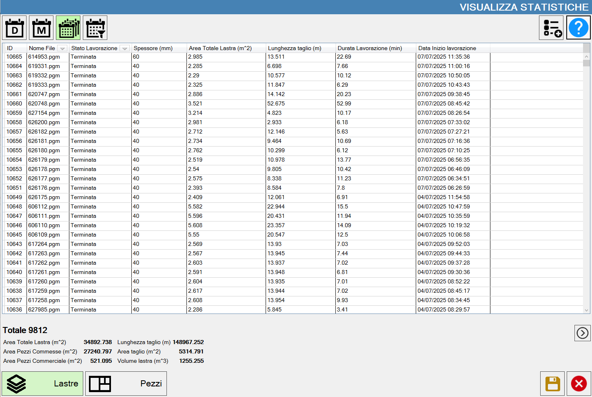
Statistiche a video
Tramite il pulsante in alto a sinistra è possibile accedere alla finestra di statistiche a video.
Statistiche a video |
Si apre quindi una finestra che mostra alcune informazioni legate alle lavorazioni svolte in macchina.
Ogni voce dell’elenco corrisponde ai dati relativi di una singola lavorazione.
In fondo alla pagina sono viene invece presentato un riepilogo delle informazioni importanti di tutte le lavorazioni visualizzate.
Pulsanti
 | Statistiche giornaliere |
 | Statistiche mensili |
Statistiche totali | |
 | Intervallo di tempo impostabile |
 | Colonne da visualizzare |
 | Salva statistiche |
 | Visualizza statistiche lastre |
  | Visualizza statistiche pezzi |
Statistiche per ogni macchina (Opzionale)
Per la versione di Parametrix in modalità ufficio, è possibile connettersi a più macchine, e visualizzare le statistiche di ciascuna di esse.
Sulla sezione di sinistra vengono visualizzate tutte le macchine connesse al dispositivo.

Ricerca
Questa funzione permette di effettuare una ricerca delle statistiche all’interno di un arco temporale a scelta.

L’operatore può inserire la data di inizio e di fine per delimitare l’intervallo temporale di interesse.
È possibile stabilire la precisione della ricerca utilizzando i pulsanti.
Ricerca per giorno | |
 | Ricerca per mese |
 | Ricerca per anno |
Per esportare le statistiche, usare il pulsante:
| Salva statistiche |
Timer
In questa sezione è possibile gestire i timer della macchina.
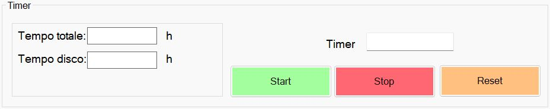
Utilizzando i seguenti pulsanti, l’operatore è in grado di gestire in modo manuale un timer che possa tenere traccia del tempo trascorso.
Avvia timer | |
 | Interrompi timer |
 | Azzera timer |
Nella sezione di sinistra sono invece presenti informazioni riguardanti il tempo di utilizzo della macchina e degli strumenti montati.
Tempo totale | Indica il tempo totale di lavoro della macchina. |
Tempo disco | Mostra il tempo di utilizzo del disco. |
Grasso
Per avviare il grassaggio automatico della macchina, utilizzare il seguente pulsante:
 | Avvio ciclo grasso |
Parametrix permette di importare file con formato “.dxf“ creati tramite appositi programmi CAD esterni.
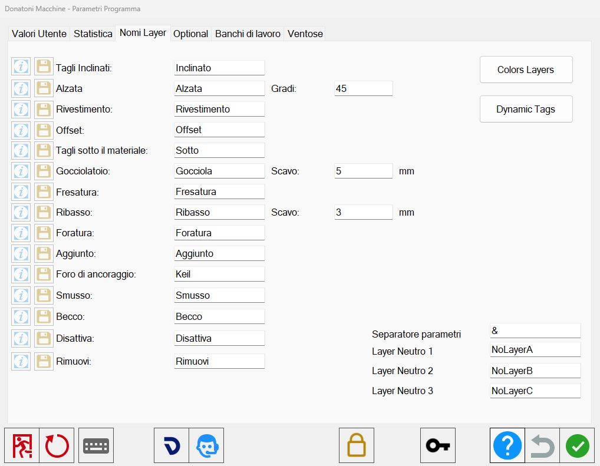
Pulsanti
 | Colorare i Layer |
 | Dynamic Tags |
La macchina può eseguire tagli, fresature e fori tramite disegni creati con software CAD e salvati in formato “.dxf“ con il riconoscimento automatico di alcune lavorazioni utili per semplificare e rendere più veloce il lavoro all’operatore bordo macchina.
Per fare in modo che Parametrix possa interpretare queste informazioni, dovranno essere rispettate alcune convenzioni in fase di realizzazione del disegno:
Tutti i pezzi disegnati devono essere chiusi e convertiti in polilinee formando un poligono.
Qualora si desideri inserire la marca del pezzo per l’identificazione dovrà essere inserita all’interno del poligono.

Impostazioni Parametrix per il riconoscimento dei layer importati
Per accedere alla finestra dedicata alle impostazioni di personalizzazione relative all’importazione dei file DXF, premere il pulsante dei Parametri Utente che si trova sulla barra superiore di Parametrix.
Da qui, spostarsi nella sezione dedicata alla gestione dei nomi dei Layer.
Per ogni tipologia di funzione elencata, l’utente può assegnare un nome (corrispondente al nome del Layer impostato nel software CAD utilizzato) e assegnare alcuni parametri relativi ai valori di default per alcune lavorazioni.
Funzione | Nome Layer |
Tagli inclinati | Inclinato |
Alzata | Alzata |
Rivestimento | Rivestimento |
Offset | Offset |
Tagli sotto il materiale | Sotto |
Gocciolatoio | Gocciola |
Fresatura | Fresatura |
Ribasso | Ribasso |
Foratura | Foratura |
Taglio aggiunto | Aggiunto |
Foro di ancoraggio | Keil |
Smusso | Smusso |
Becco | Becco |
Disattiva | Disattiva |
Rimuovi | Rimuovi |
Pulsanti
I pulsanti a sinistra di ogni lavorazione permettono di:
 | Finestra informativa |
Scarica esempio |
Modalità Taglio Inclinato
Per poter inserire in automatico un taglio inclinato è necessario osservare alcune convenzioni:
I tagli inclinati si possono inserire solamente sui lati dei pezzi; qualora il taglio inclinato non valga per tutto il tratto lo si può dividere in più parti.
Può essere applicato il taglio inclinato su archi esterni (Es: tavolo circolare, oppure su copertine curve solamente per quanto riguarda il taglio esterno).
Per quanto riguarda gli archi interni (es: copertine in curva) il taglio viene effettuato a passate; il taglio sarà effettuato inclinando il disco automaticamente, evitando problemi di collisione con il materiale.
La procedura per chi utilizza sistemi CAD, prevede la creazione di un Layer che abbia le seguenti proprietà:
Nome del Layer | Inclinato _ (seguita dal numero che identifica i gradi di inclinazione desiderato). |
Esempio | Inclinato45 o Inclinato-45 |
Quando viene inserito un valore negativo l’inclinazione è riferita ad un taglio divergente mentre se il valore è positivo il taglio sarà convergente verso l’interno del poligono.
Modalità Alzata
La funzione alzata è una lavorazione che permette di ottenere un pezzo rettangolare di pari lunghezza alla retta impostata come lato di riferimento.
Per l’inserimento automatico dei tagli volendo creare un’alzata sarà necessario creare un Layer con il nome “Alzata” e di seguito inserire la misura dell’altezza.
Nome del Layer | Alzata _ (seguita dalla misura dell’altezza dell’alzata). |
Esempio | Alzata100 |
Questo automatismo all’interno di Parametrix crea un nuovo pezzo di larghezza pari alla lunghezza della retta che identifica il lato dell’alzata desiderata con i due lati che saranno incollati assieme tagliati con la stessa inclinazione, pronti per una finitura con cartabuono.
L’inclinazione associata a questi lati è impostabile dal parametro a fianco.
Gradi | Permette di impostare l’inclinazione con cui vengono importati i lati inclinati della lavorazione. |
Modalità Rivestimento
La funzione rivestimento / alzata è una lavorazione che permette di ottenere un pezzo rettangolare di pari lunghezza alla retta impostata come lato di riferimento.
In modo analogo, per l’inserimento automatico dei tagli volendo creare un rivestimento sarà necessario creare un Layer con il nome “Rivestimento” e di seguito inserire la misura dell’altezza.
Nome del Layer | Rivestimento _ (seguita dalla misura dell’altezza del rivestimento). |
Esempio | Rivestimento150 |
Questo automatismo all’interno di Parametrix crea un nuovo pezzo di larghezza pari alla lunghezza della retta che identifica il lato del rivestimento desiderato senza taglio inclinato ma bensì pronto per una finitura ad angolo dritto con presa di costa.
Modalità Offset
La funzione offset è molto utile quando si voglia lasciare più materiale rispetto alle dimensioni del pezzo finito; tramite il disegno di rette sui lati desiderati, le funzioni associate ai lati indicati verranno spostati automaticamente nella direzione corretta.
Per poter inserire in automatico il sovra materiale desiderato sarà necessario creare un Layer con il nome “Offset” e inserire tutte le rette relative ai lati dove si desidera avere effetto automatico dell’impostazione.
Nome del Layer | Offset _ (seguita dal numero che identifica la misura di offset). |
Esempio | Offset3 |
Modalità Taglio Sotto
La funzione di taglio sotto è valida solo per chi ha installato l’optional meccanico che permette di effettuare un taglio sotto la superficie a vista della lastra.
Per poter inserire in automatico un taglio sotto sarà necessario creare un Layer con il nome “Sotto” e inserire una retta che rappresenterà il taglio.
Nome del Layer | Sotto |
Esempio | Sotto |
La lunghezza del taglio risultante dipende anche dal diametro del disco e dallo spessore del materiale impostati su Parametrix.
Modalità Gocciolatoio
La funzione di gocciolatoio permette di inserire un taglio di larghezza maggiore rispetto allo spessore del disco e profondità minore rispetto allo spessore del materiale.
Per poter inserire in automatico un gocciolatoio sarà necessario creare un Layer con il nome “Gocciola” e inserire una retta o arco che rappresenta il centro della larghezza.
Nome del Layer | Gocciola _ (seguita dal numero che identifica la larghezza del gocciolatoio). |
Esempio | Gocciola10 |
In questo modo la profondità del gocciolatoio viene stabilita dal parametro dedicato.
Scavo | Profondità del taglio associato al gocciolatoio. Questo valore non viene considerato se l’utente imposta un valore sul DXF. |
La profondità del taglio può essere gestita in automatico prendendo come valore il parametro dedicato in Parametrix o lasciando che l’utente imposti un valore inserendo il carattere “&” seguito dallo spessore desiderato.
Nome del Layer | Gocciola _ (larghezza del gocciolatoio) _ & _ (profondità del gocciolatoio). |
Esempio | Gocciola10&5 |
La lunghezza del taglio risultante dipende anche dal diametro del disco e dallo spessore del materiale impostati su Parametrix.
Per gocciolatoi in curva viene fatto un solo taglio con il disco esterno all’arco stesso.
Gli eventuali parametri indicati nel nome del Layer non vengono considerati.
Modalità Fresatura
Per poter inserire una fresatura automatica è necessario osservare alcune convenzioni.
Se creata una geometria di fresatura che riguarda uno o più lati del poligono esterno, la fresa effettuerà la lavorazione esterna al perimetro disegnato; vale anche per un singolo lato del perimetro; se la lavorazione prevede il taglio di tutto il perimetro con la fresa vengono tolti eventuali taglio con il disco.
La profondità del taglio può essere definita tramite la creazione di un Layer dedicato.
Nome del Layer | Fresatura _ (seguita dal numero che identifica lo spessore della fresatura). |
Esempio | Fresatura10 |
Se non viene indicato nessun valore di profondità al nome del Layer “Fresatura“ viene considerato lo spessore della lavorazione in corso.
Un’ulteriore funzionalità resa possibile è l’inserimento di una polilinea (aperta/chiusa, ad esempio cerchio o singolo percorso composto da una polilinea lineare) per andare a fresare una forma all’interno del perimetro maggiore.
Modalità Ribasso / Filo Top
La funzione ribasso / filo top è una lavorazione che permette di ribassare un perimetro, solitamente per effettuare l’incasso di elettrodomestici o lavabi.
Per poter inserire in automatico il ribasso desiderato sarà necessario creare un Layer con il nome “Ribasso”.
Nome del Layer | Ribasso _ (seguita dal numero che identifica la larghezza del ribasso). |
Esempio | Ribasso20 |
In questo modo la profondità del ribasso viene stabilita dal parametro dedicato.
Scavo | Profondità del ribasso. Questo valore non viene considerato se l’utente imposta un valore sul DXF. |
La profondità del ribasso può essere gestita in automatico prendendo come valore il parametro dedicato in Parametrix o impostato un valore dall’utente inserendo il carattere “&” seguito dallo spessore desiderato.
Nome del Layer | Ribasso _ (larghezza del ribasso) _ & _ (spessore del ribasso). |
Esempio | Ribasso20&3 |
Il raggio di raccordo tra i lati del perimetro non possono essere modificati dall’utente ma bensì sarà il raggio fresa a determinarlo.
Il ribasso può essere effettuato su di un percorso chiuso non sovrapposto ai lati pezzo, in questo caso verrà effettuata una fresatura all’interno del perimetro disegnato.
Modalità Foratura
La funzione foratura permette al software Parametrix di aggiungere lavorazioni di foratura sui pezzi.
Per poter inserire in automatico una lavorazione di foratura è necessario creare un Layer con il nome “Foratura” e disegnare un cerchio dove si vuole realizzare il foro.
Nome del Layer | Foratura _ (seguita dal numero che identifica la profondità del foro). |
Esempio | Foratura5 |
Se non viene specificata la profondità il foro verrà applicato con lo spessore del materiale correntemente utilizzato da Parametrix.
Nella modalità base il raggio del cerchio corrisponde al raggio dell’utensile correntemente impostato su Parametrix.
Modalità Taglio Aggiunto
La funzione di taglio aggiunto permette al software Parametrix di aggiungere un taglio.
Per poter inserire in automatico un taglio aggiunto è necessario creare un Layer con il nome “Aggiunto” e disegnare sopra alla linea che rappresenta il lato di cui si vuole creare un taglio aggiunto una nuova linea.
Nome del Layer | Aggiunto _ (seguita dal numero che identifica la distanza alla quale il taglio verrà aggiunto). |
Esempio | Aggiunto50 |
Il taglio verrà aggiunto all’interno (dove c'è materiale) o all’esterno (dove non c'è materiale) del pezzo, in base al segno distanza:
Se il segno distanza è positivo, il taglio verrà aggiunto esternamente al pezzo
In caso contrario quando il segno distanza è negativo, verrà aggiunto il taglio internamente al pezzo
Applicando un taglio aggiunto su dei tagli interni, ad esempio di uno scasso, il taglio verrà aggiunto internamente al pezzo, dove non c'è materiale.
Modalità Foro di Ancoraggio
La funzione foro di ancoraggio permette al software Parametrix di aggiungere lavorazioni foro di ancoraggio sui pezzi.
Per poter inserire in automatico una lavorazione foro di ancoraggio è necessario creare una Layer con il nome “Keil” e disegnare un cerchio dove si vuole realizzare il foro di ancoraggio.
Nome del Layer | Keil _ (seguita dal numero che identifica la profondità del foro di ancoraggio). |
Esempio | Keil5 |
Nella modalità base il raggio del cerchio corrisponde al raggio dell’utensile correntemente impostato su Parametrix.
Modalità Smusso
La funzione smusso permette al software Parametrix di aggiungere lavorazioni smusso sui pezzi.
Per poter inserire in automatico una lavorazione smusso è necessario creare un Layer con il nome “Smusso” e disegnare sopra alla linea che rappresenta il lato di cui si vuole creare un taglio aggiunto una nuova linea.
Nome del Layer | Smusso _ (distanza lungo asse X) _ & _ (distanza lungo asse Y) _ & _ (angolo di inclinazione). |
Esempio | Smusso10&10&45 |
Se i tre valori non sono geometricamente compatibili tra loro la lavorazione non verrà applicata.
Modalità Becco
La funzione becco permette al software Parametrix di aggiungere lavorazioni smusso sui pezzi.
Per poter inserire in automatico una lavorazione becco è necessario creare un Layer con il nome “Becco” e disegnare sopra alla linea che rappresenta il lato di cui si vuole creare un taglio aggiunto una nuova linea.
Nome del Layer | Becco _ (distanza lungo asse X) _ & _ (distanza lungo asse Y) _ & _ (angolo di inclinazione). |
Esempio | Becco10&10&45 |
Se i tre valori non sono geometricamente compatibili tra loro la lavorazione non verrà applicata.
Modalità Disattiva
La funzione disattiva permette al software Parametrix di disattivare tagli sui pezzi.
Per poter inserire in automatico una funzione disattiva è necessario creare un Layer con il nome “Disattiva” e disegnare una nuova linea sopra a quella che rappresenta il lato che si vuole disattivare.
Nome del Layer | Disattiva |
Esempio | Disattiva |
Modalità Rimuovi
La funzione rimuovi permette al software Parametrix di rimuovere tagli sui pezzi.
Per poter inserire in automatico una lavorazione rimuovi è necessario: creare un Layer con il nome “Rimuovi” e disegnare una nuova linea sopra al quella che rappresenta il lato che si vuole rimuovere.
Nome del Layer | Rimuovi |
Esempio | Rimuovi |
Modalità Foro
La funzione di foratura permette al software Parametrix di riconoscere ogni cerchio avente un raggio inferiore al parametro “Raggio massimo foretto” presente all’interno dell’area del pezzo.
I fori possono essere inseriti liberamente in tutti i Layer (che non siano identificati come neutri).
Un’ulteriore opzione riferita all’utilizzo del foretto permette di togliere un’isola di materiale rimasta attaccata dopo aver effettuato i tagli con il disco; questa opzione per essere considerata dal software Parametrix deve essere disegnato uno o più cerchi che intersechino i lati dell’isola tagliata con il disco e tramite il parametro “Distanza Fori Automatici” saranno posizionati una serie di fori calcolati automaticamente in base al materiale rimasto da tagliare dopo aver tagliato il disco.
Gestione Layer neutri
Volendo mantenere nel file DXF alcune parti di disegno che non sono da considerare come tagli o altre funzionalità da gestire con il software Parametrix è possibile assegnarle ad alcuni Layer che vengono riconosciuti come neutri.
Creare i Layer con nomi assegnati nei campi Layer neutri (1,2,3) nella pagina “Nomi Layer” dei parametri utente di Parametrix tenendo presente che il carattere “*” farà si che tutti i Layer importati con il medesimo nome prima e dopo il simbolo “*” non saranno considerati nell’importazione.
Esempi
Tramite questa funzione è possibile andare a colorare uno o più tagli di pezzi creati da DXF.
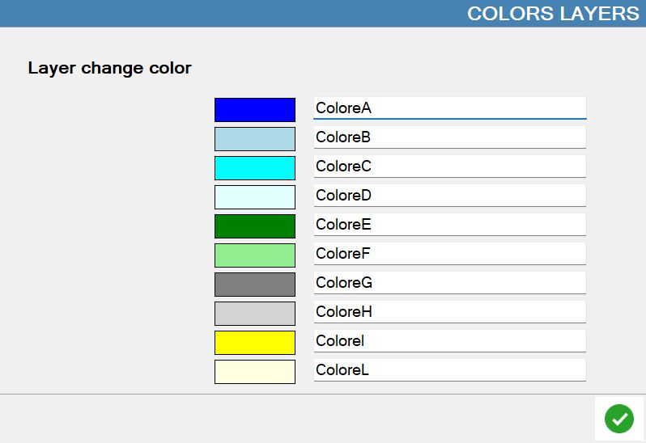
Pulsanti
 | Cambia colore layer |
Procedura
Per associare un colore ai tagli di un pezzo bisogna:
Creare un Layer sul software CAD;
Assegnargli un colore nell’apposito pannello in Parametrix;
Disegnare una linea (o curva) sopra a quella che rappresenta il taglio che si desidera colorare all’interno del Layer.
Una volta che il pezzo è importato il taglio sopra cui è stata disegnata la linea sul Color Layer sarà del colore impostato in Parametrix (non di quello impostato nel DXF).
La linea disegnata sopra al taglio che si vuole colorare deve essere completamente sovrapposta alla linea che rappresenta il taglio.
Esempio
In questo esempio si desidera colorare due tagli del pezzo. È stato creato il Layer “ColoreE“, e sono state aggiunte delle linee sopra a quelle da colorare.

Come è possibile vedere sull’area di lavoro di Parametrix, i tagli diventano del colore che è stato associato al Layer del file DXF importato.

Con questa funzione è possibile assegnare dei parametri di configurazione ai Layer dei file DXF.

Parametri
I parametri sono:
Name | Serve per definire e riconoscere il nome del Layer. |
Entity Type | Definisce la tipologia delle entità che verranno visualizzate. |
LineWeightMethod | Permette di scegliere la modalità con cui viene ricavato lo spessore delle linee. |
LineWeight | Permette di definire lo spessore delle linee appartenenti al Layer. |
ColorMethod | Permette di scegliere la modalità con cui viene ricavato il colore del Layer. |
Color | Permette di definire il colore delle entità appartenenti al Layer. |
Pulsanti
Con i seguenti pulsanti è possibile aggiungere o eliminare una configurazione:
 | Crea configurazione |
 | Elimina configurazione |
Esempio
In questo esempio si desidera modificare le caratteristiche degli elementi disegnati sul Layer “Venature“.

Le entità vengono importate rispettando i parametri impostati nell’apposita finestra.

In questa sezione si imposta la velocità di spostamento del pezzo con le ventose.
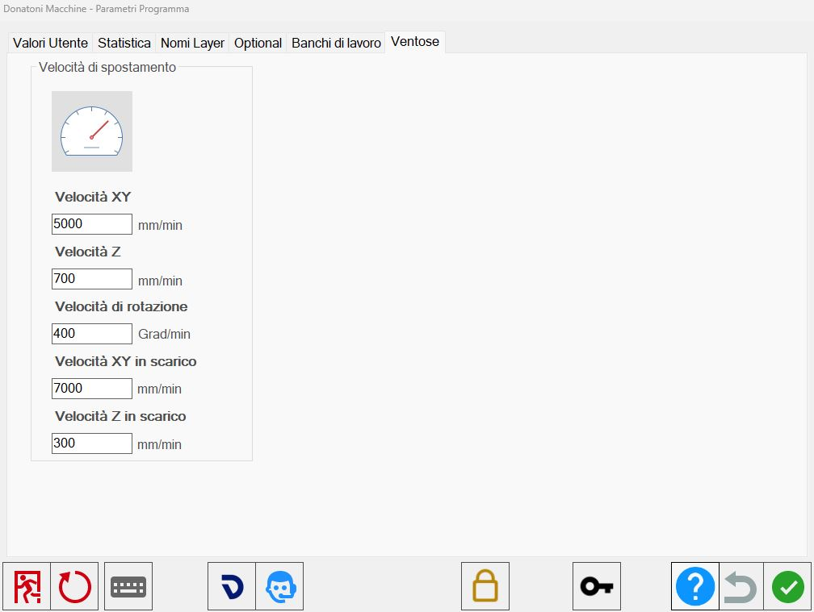
Parametri
Velocità XY | Determina la velocità di spostamento del pezzo con le ventose. |
Velocità Z | Determina la velocità di spostamento del pezzo con le ventose in Z. |
Velocità di rotazione | Determina la velocità di rotazione del pezzo con le ventose. |
Velocità XY in scarico | Determina la velocità di spostamento del pezzo con le ventose nella fase di scarico pezzo o taglio sotto. |
Velocità Z in scarico | Determina la velocità di spostamento del pezzo con le ventose in Z nella fase di scarico pezzo o taglio sotto. |
Questo pulsante permette di concludere la lavorazione corrente ed iniziare la programmazione di quella successiva.

Procedura di esecuzione
Una lavorazione si conclude con la generazione del programma di taglio della macchina o con il salvataggio dello stato dei pezzi.
Tramite questo pulsante, è possibile pulire l’area di lavoro dalla lastra e dai pezzi, in modo da lasciare spazio alla successiva lavorazione.

Apparirà un messaggio che chiede conferma per procedere con la creazione di una nuova lavorazione.
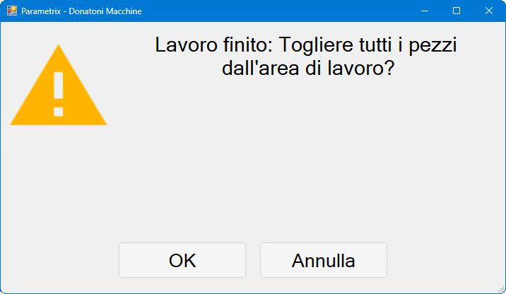
Alla conferma verranno cancellati:
foto e perimetro della lastra;
tutti i pezzi presenti sull’area di lavoro (compresi i pezzi commerciali);
Parametrix tiene conto dei pezzi che sono stati programmati, aggiornandone il conteggio all’interno dell’elenco dei pezzi.
Non sarà più possibile aggiungere pezzi sull’area di lavoro se questi hanno raggiunto il numero massimo.
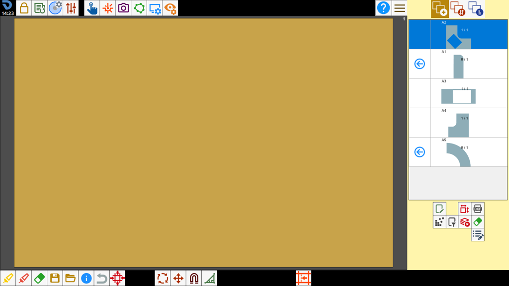
La seguente schermata che consente all’operatore di gestire gli utensili della macchina.

Selezione tipologia utensile
Ogni tipologia di utensile ha un’utensile selezionato, come visibile nella seguente immagine di esempio:

 | Disco |
 | Tools |
Lo sfondo della tipologia “Disco” appare di colore blu chiaro perché è la categoria di utensili attualmente selezionata.
È sufficiente cliccare il rettangolo della tipologia utensile desiderata, per aggiornare la sottostante lista degli utensili con quelli a disposizione per quella tipologia.
Come conseguenza del cambio di tipologia utensile, verrà automaticamente selezionato come mostrato nella precedente immagine di esempio.
Lista utensili presenti per tipologia di utensile selezionata
La lista utensili riportata come esempio nell’immagine successiva dispone di quattro dischi: “Disco 400“, “Disco 625“, “Disco 2755“ e “Disco 325“.
Il primo disco della lista è quello attualmente montato in macchina, ciò è evidenziato dallo sfondo verde chiaro e dalla spunta verde.
Nella sezione di destra, vengono mostrati i parametri relativi all’utensile selezionato.

Elementi dell’elenco
 | Tipologia utensile |
 | Informazioni principali utensile |
 | Forza utensile |
Filtro di ricerca
Nella parte inferiore della lista utensili è presente una barra di ricerca composta dai seguenti elementi:

Gli elementi che compongono il filtro di ricerca sono illustrati di seguito:
 | Pulsante ricerca per nome utensile |
-20250307-155302.png) | Pulsante ricerca per diametro utensile |
Pulsante per annullare il filtro applicato |
Barra inferiore
La barra inferiore della lista utensili offre funzionalità per aggiungere e rimuovere utensili dall’elenco.

 | Aggiungi utensile |
 | Elimina utensile |
 | Duplica utensile |
Aggiungi utensile
Tramite questa finestra viene svolta la procedura di creazione di un nuovo utensile. I parametri richiesti cambiano in base alla tipologia dell’utensile che si desidera creare.
La seguente immagine mostra la finestra di creazione di un nuovo utensile per tipologia disponibile:
Disco | Fresa | Foretto |
|  |  |
 |  |  |
Lista parametri per utensile selezionato
In questa lista sono riportati tutti i parametri relativi all’utensile attualmente selezionato.
Ogni variazione della selezione dell’utensile attualmente selezionato permetterà all’operatore di visualizzare i valori aggiornati per l’utensile desiderato e di apportare eventualmente modifiche a ogni valore.
La lista dei parametri e i relativi valori verranno inoltre aggiornati quando viene selezionata una diversa tipologia di utensile (Disco / Tools), mostrando i valori dell’utensile selezionato per ciascuna categoria.
Parametri disco
Di seguito vengono mostrati i parametri associati ad un disco.

 | Nome |
 | Diametro |
 | Spessore disco |
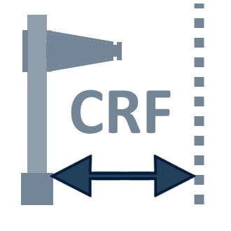 | CRF - Centro Rotazione Flangia |
 | Quota svincolo |
 | RPM |
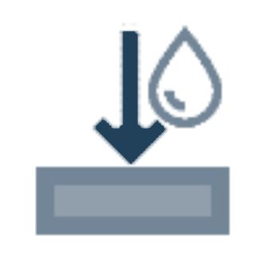 | Acqua interna |
 | Acqua esterna |
Velocità rotazione disco
Alla destra del parametro RPM è situato il seguente pulsante:
 | Informazioni RPM |
In questa finestra viene mostrata una tabella contenente le conversioni da velocità di rotazione ad RPM in base al diametro del disco selezionato.
Vengono evidenziati in verde i valori consigliati per il disco selezionato.

Parametri fresa e foretto
Di seguito vengono mostrati parametri relativi ad utensili quali frese e foretti.

 | Lunghezza utensile |
Tastatura utensile
Se la macchina dispone dello strumento opzionale per la tastatura dell’utensile, è possibile attivare la procedura da questo pannello.
Permette di avviare un ciclo tramite cui è possibile calcolare il diametro, nel caso di disco, o la lunghezza, per fresature e foretti.
Pulsanti
Nella parte destra del pannello è presente uno dei seguenti pulsanti.
 | Avvia tastatura disco |
 | Avvia tastatura utensile secondario |
Il pulsante per la tastatura del disco è disponibile solamente all’interno della sezione “Disco“ del pannello.
Il pulsante per la tastatura dell’utensile secondario è disponibile solamente all’interno della sezione “Tools“ del pannello.
Procedura
Per misurare il diametro del disco, oppure la lunghezza del foretto/fresa attualmente montato in macchina, premere il pulsante corrispondente nella sezione di destra del pannello.
Al termine del ciclo, il programma aggiorna automaticamente il dato corrispondente alla misura dell’utensile tastato.
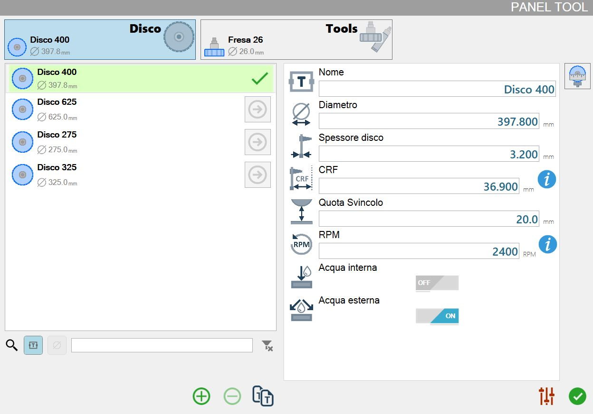
Altri Pulsanti
In basso a sinistra della schermata è presente il seguente pulsante:
 | Passa al pannello “Parametri di lavorazione della lastra“ |
Se la macchina dispone dell’optional Tool Plus, sarà presente una nuova sezione dedicata all’interno del pannello utensile.
/0.00.png)
Pulsanti
/0.01.png) | Accensione/Spegnimento acqua |
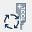 | Attiva/Disattiva rotazione |
/0.03.png) | Sollevamento |
/0.04.png) | Abbassamento |
È possibile gestire gli utensili di una macchina con cambio automatico da questo pannello.

Elenco utensili
Nella sezione di sinistra è possibile vedere l’elenco di tutti utensili disponibili per la macchina.

In alto viene indicato l’utensile attualmente montato sulla macchina.
Al di sotto, un elenco mostra un elenco degli utensili utilizzabili dalla macchina. A fianco di ogni utensile, sono presenti due pulsanti:
 | Forza utensile montato |
 | Avvia cambio utensile |
Parametri utensile
Nella sezione di sinistra sono presenti i parametri associati all’utensile selezionato.

 | Correttore |
 | Laser |
Correttore
Questo campo indica la posizione in cui sono conservati gli utensili non utilizzati all’interno del magazzino della macchina.
Cambia correttore | |
 | Elimina correttore |
Procedura cambio utensile automatica
Premendo il pulsante associato ad un utensile, l’operatore potrà avviare la procedura di cambio utensile automatica.
All’avvio, viene chiesto per quali lavorazioni si desidera utilizzare il nuovo utensile che sta per essere montato.

Questa tipologia di macchina consente di montare due dischi sulla testa anzichè uno. Il pannello utensile consente la gestione di entrambi.

Parametri
Ogni utensile della sezione “Disco” contiene le informazioni riguardanti entrambi i dischi montati in macchina.

In particolare:
 | Diametro primo disco |
 | Diametro secondo disco |
All’apertura del pannello “Parametri Lastra“ verrà visualizzata la schermata di parametri di lavorazione che consente all’operatore la gestione dei dati relativi alla lavorazione.
I dati di lavorazione possono essere impostati e modificati con il pannello dei parametri.

Gestione materiale selezionato
Nella parte superiore del pannello “parametri di lavorazione della lastra” sono presenti alcuni elementi che permettono di gestire i materiali:
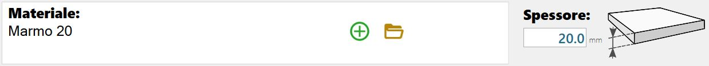
Vengono di seguito illustrati gli elementi che compongono questa sezione dei parametri di lavorazione della lastra
 | Materiale Selezionato |
 | Pulsante crea nuovo materiale |
 | Pulsante accedi al pannello Gestione Materiali |
 | Spessore del materiale selezionato |
Aggiungi un nuovo materiale
Questa piccola finestra grafica permette di comporre il nome di un nuovo materiale:

Se avviene la conferma di creazione del nuovo materiale, questo verrà automaticamente selezionato.
I parametri e lo spessore del materiale verranno aggiornati di conseguenza.
Apri il pannello gestione materiali
Da questo pannello è possibile gestire i materiali:

Barra di ricerca | |
 | Rimuovi filtro |
 | Rimuovi materiale |
 | Duplica materiale |
 | Modifica materiale |
Selezione tipo lavorazione
La selezione del tipo di lavorazione regola il contenuto della finestra di gestione dei parametri.
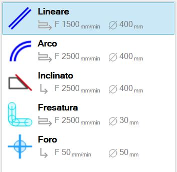
Per ogni tipologia di lavorazione è visibile nella relativa anteprima la modalità di incremento scelta, la velocità di taglio in avanti (di affondo / ingresso nel caso di tipo lavorazione Foro) e il diametro dell’utensile.
Tipologia passate
 | Passata Piena |
 | Passata a Step / a spirale |
Tipologia di lavorazioni
Lineare

Passata piena

Passata a step

Descrizione parametri incrementi
 | Avanti |
 | Indietro |
 | Ultima |
Descrizione parametri velocità
 | Affondo |
 | Avanti |
 | Indietro |
| Ultima |
 | Accelera tagli |
 | Rallenta tagli |
Per quanto riguarda gli incrementi e le velocità i parametri “Indietro” e “Ultima”, possono essere presenti oppure no o essere presente solo uno dei due.
Normalmente queste scelte vengono fatte al momento dell’installazione del programma e vengono decise in base alla lavorazione del cliente.
È possibile cambiare queste opzioni, in quanto si preferisce lavorare diversamente contattando l’Assistenza Donatoni.
Arco

Passata a step
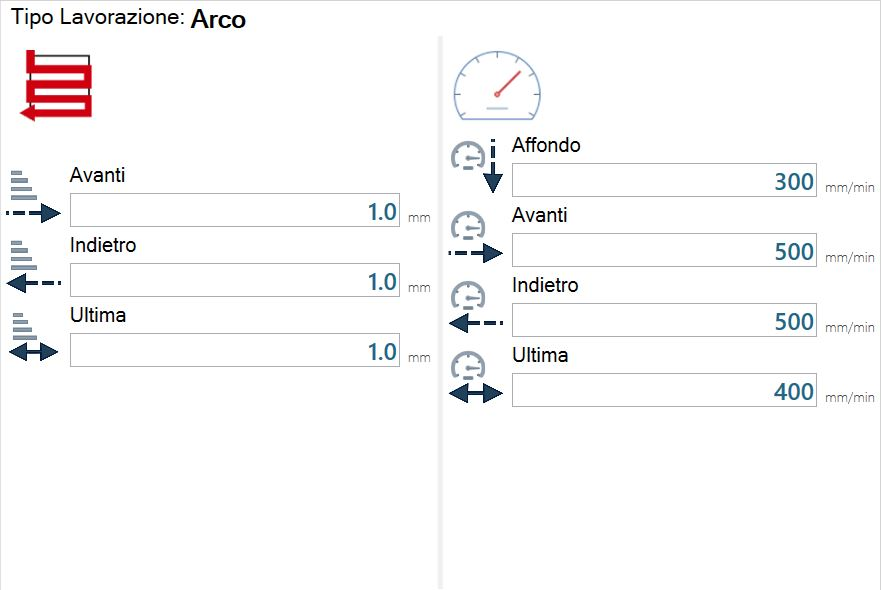
Inclinato
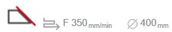
Passata piena
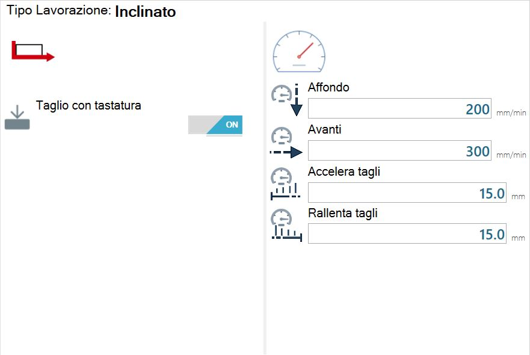
Passata a step

Descrizione parametri incrementi
  | Taglio con tastatura (attivato / disattivato) |
Fresatura

Passata Piena

Passata a step e passata a spirale


Foro
Passata piena

Passata a step

Esecuzione lavorazione con passata a step:
La macchina approccerà il materiale al massimo della velocità, fino al raggiungimento della distanza dal materiale specificata nel parametro AVVICINAMENTO.
Il numero di passi verrà calcolato come:
Spessore del materiale diviso spessore degli step
eventualmente arrotondato per eccesso
La macchina comincerà a muoversi a velocità di lavorazione.
Se il valore del parametro STEP INGRESSO è settato (diverso e maggiore di zero), la macchina lavorerà alla velocità settata nel secondo campo INGRESSO fino al raggiungimento della distanza settata nel campo STEP INGRESSO
La macchina eseguirà gli step calcolati al secondo punto alla velocità Step
Dopo ogni step (incluso il primo) la macchina tornerà a quota materiale a velocità massima, dopodiché ritornerà a massima velocità a breve distanza rispetto all’inizio dello step successivo.
Se il parametro STEP USCITA è impostato (diverso e maggiore di zero), la macchina lavorerà a velocità definita nel secondo campo STEP fino al raggiungimento della distanza definita nel primo campo USCITA
Il resto dello step verrà eseguito a velocità USCITA
Descrizione parametri Foro con passata a step
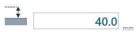 | Quota di avvicinamento |
 | Step |
 | Ingresso |
 | Uscita |
 | Pausa dopo |
Cambio parametri taglio
È possibile modificare i parametri precedentemente illustrati per il disco, la fresa e il foretto, se l’utente è abilitato ad usarli.

Per decidere di quale utensile modificare i parametri è necessario selezionarne uno tramite la pressione del pulsante visibile nella parte destra del pannello “Seleziona utensile“.
 | Cambia parametri di taglio |
Premendo questo pulsante verrà visualizzata una finestra che conterrà una configurazione di parametri salvata per ogni materiale presente. I risultati dipendono inoltre dal tipo lavorazione selezionato.
Verrà aperta una finestra “Cambio Parametri Taglio“ simile alla seguente immagine di esempio:
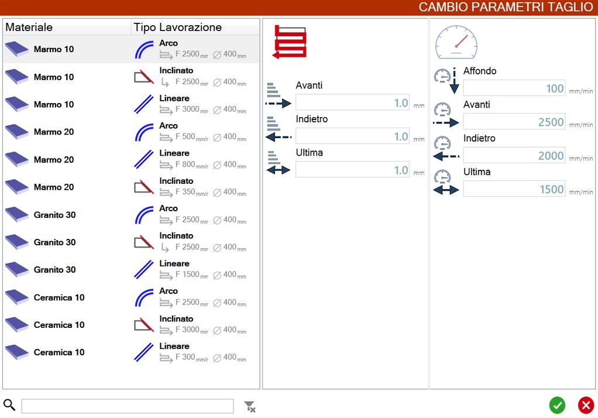
Nella parte inferiore sinistra del pannello “Cambio Parametri Taglio“ è presente una barra del testo inizialmente vuota che permette di applicare un filtro di ricerca.
Il pulsante a destra della barra si attiva solo nel momento in cui del testo è presente nella barra e quindi è applicato un filtro di ricerca. La sua pressione cancella il filtro e svuota la barra del testo.
Barra inferiore
La barra inferiore del pannello Parametri Lastra appare simile a questa:
Questa barra è costituita dai seguenti elementi:
 | Anteprima disco |
 | Anteprima fresa/foro |
 | Pannello Utensile |
Questo pannello consente l’accesso ad alcuni comandi manuali della macchina.
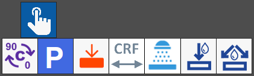
Pulsanti
 | 0_ - 90_ |
 | Parcheggio |
Tasta Lastra | |
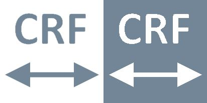 | Ciclo CRF |
Ciclo lavaggio | |
 | Accensione / Spegnimento acqua interna |
 | Accensione / Spegnimento acqua |
Ciclo di tastatura della lastra
Il ciclo di tastatura permette di calcolare lo spessore della lastra e prendere la quota del banco utilizzando l’apposito tastatore montato sulla macchina.
Per avviarlo, attivare il pulsante all’interno del pannello del pannello dei comandi manuali, successivamente premere un punto all’interno della lastra sull’area di lavoro.
Nella posizione scelta, verrà visualizzato un simbolo, che indica la posizione in cui deve essere eseguita la tastatura.

Una volta che la macchina ha terminato di eseguire il ciclo, si aprirà un pannello che mostra alcune misure ricavate tramite la tastatura della lastra.

Queste informazioni includono:
Spessore | Spessore della lastra misurata. |
Quota banco | Quota del banco di lavoro. |
Quota lastra | Quota misurata sul filo superiore del materiale posto sul banco di lavoro. |
È possibile salvare i dati raccolti dal ciclo di tastatura utilizzando i pulsanti sottostanti:
 | Imposta spessore lastra |
 | Imposta quota banco |
 | Avvio tastatura |
Ciclo di misurazione del CRF (Centro Rotazione Flangia)
Il ciclo CRF permette di misurare la distanza del filo interno del dente del disco attualmente montato in macchina, dall’asse di rotazione C.
Per avviarlo, attivare il pulsante all’interno del pannello del pannello dei comandi manuali, successivamente premere un punto all’interno della lastra sull’area di lavoro.
Nella posizione scelta, verrà visualizzato un simbolo, che indica la posizione in cui devono essere eseguiti i tagli con disco che consentono di misurare il CRF.
Durante l’esecuzione di questo ciclo, vengono svolti dei tagli nel materiale.
Pertanto si raccomanda l’operatore di prestare attenzione alla posizione della lastra in cui avviarlo, per evitare di danneggiarla.

La macchina eseguirà due tagli paralleli con asse A a 0_: il primo con asse C uguale a 0_, mentre il secondo con asse C uguale a 180_.
Al termine della procedura, viene richiesto all’operatore di misurare, utilizzando metro o calibro, la distanza dall’interno dei due tagli sulla lastra.
Questa misura deve essere quindi inserita all’interno del campo “A“ del pannello che si apre alla fine del ciclo.

Le misure effettuate devono essere inserite nell’apposito campo:
A | Distanza interna tra i due tagli eseguiti durante il ciclo sulla lastra. |
CRF (A/2) | Misura del Centro Rotazione Flangia del disco. Viene calcolata come metà della distanza interna tra i due tagli presenti sulla lastra. |
È possibile salvare i dati raccolti dal ciclo di misura CRF utilizzando il seguente pulsante:
 | Imposta misura CRF |
Questo pannello consente di aggiungere o rimuovere riferimenti laser sull’area di lavoro.

Pulsanti
 | Riferimento laser a linea |
 | Disegna laser a croce |
 | Cancella tutti i disegni |
 | Cancella un singolo disegno |
Laser a linea
Il laser a linea è uno strumento allineato con il disco montato in macchina. Viene utilizzato per raccogliere informazioni legate alla posizione e all’orientamento del disco sul banco.

Per acquisire il riferimento, portare la macchina nel punto desiderato, e premere il pulsante per rilevare la direzione del laser a linea ed aggiungere il riferimento sull’area di lavoro.
Utilizzando più riferimenti, è possibile riconoscere il perimetro e la posizione della lastra o di un pezzo sul banco di lavoro.

Laser a croce
Il laser a croce viene utilizzato per raccogliere informazioni legate alla posizione del puntatore laser sul banco.

Per acquisire il riferimento, portare la macchina nel punto desiderato, e premere il pulsante per rilevare la posizione del laser a croce ed aggiungere il riferimento sull’area di lavoro.
Utilizzando più riferimenti, è possibile riconoscere il perimetro e la posizione della lastra o di un pezzo sul banco di lavoro.

Questa funzione permette di aggiungere una foto sull’area di lavoro.
Nel caso in cui Parametrix sia collegato ad un dispositivo fotografico, viene scattata la foto della lastra sul banco di lavoro.
Altrimenti, viene richiesto di selezionare una fotografia tra i file del computer.

Scattare una foto
Generalmente, questa funzionalità permette scattare una foto del banco di lavoro della macchina utilizzando il dispositivo fotografico incorporato.
Premendo il pulsante, si apre una finestra dove viene richiesto di inserire lo spessore della lastra che sta per essere catturata.
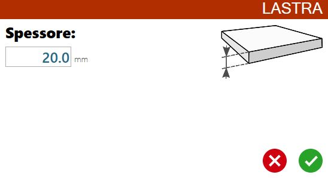
La foto viene scattata, e successivamente si apre il pannello che consente all’operatore di decidere il perimetro della lastra.
Scegliere una foto dai file del computer
Questa modalità permette a computer non collegati ad un dispositivo fotografico, solitamente disposti in ufficio, di inserire all’interno del programma foto da file.
Premendo il pulsante si apre la finestra per l’esplorazione delle risorse, in modo da poter scegliere un file da caricare.

L’utente viene quindi indirizzato al pannello per la selezione del perimetro della lastra.
Selezione del perimetro
Dopo aver selezionato o scattato la foto, apparirà questa schermata dove l’operatore deve indicare un perimetro all’interno del quale si potranno posizionare i pezzi.
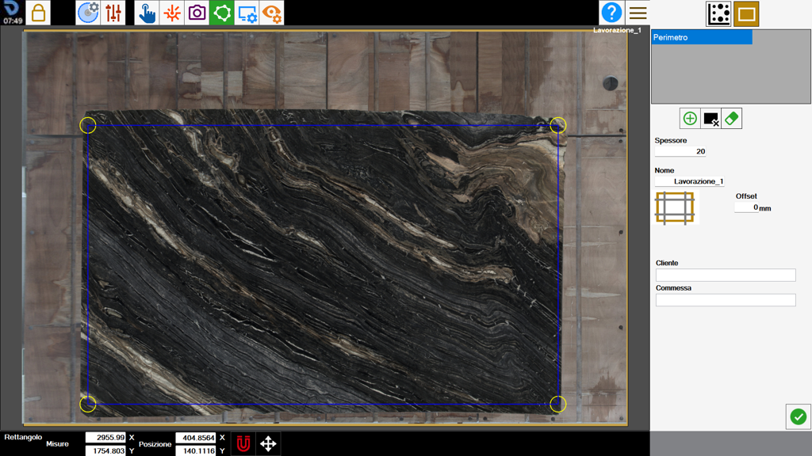
Una volta confermato il perimetro, la foto della lastra verrà aggiunta sull’area di lavoro di Parametrix.
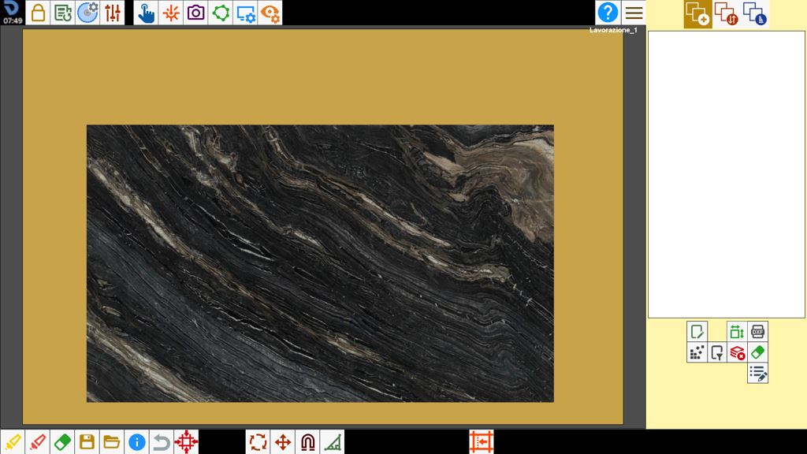
Per poter funzionare, il programma deve conoscere il bordo della lastra su cui lavorare. Questa funzione permette di tracciare il perimetro.

Modalità di creazione del perimetro
Il programma permette all’operatore di disegnare il perimetro utilizzando una delle seguenti modalità:
 | Modalità rettangolo |
 | Modalità per punti |
In ogni momento della creazione del perimetro, è possibile passare da una modalità all’altra.
Passando dalla modalità “per punti“ alla modalità “rettangolo“, il perimetro verrà convertito in rettangolo, e si perderanno tutti i vertici del poligono.
Verrà chiesta conferma per poter procedere in questa operazione.
Rettangolo
Questa modalità permette di creare perimetri dalla forma rettangolare.
Per cambiare la dimensione e la posizione del rettangolo è possibile trascinare i cerchi gialli sull’area di lavoro, oppure modificando i valori indicati nella barra sottostante.
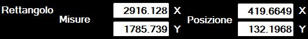
Misure | Dimensioni sull’asse X e sull’asse Y del perimetro. |
Posizione | Coordinate del vertice in basso a sinistra del rettangolo rispetto al vertice in basso a sinistra del banco. |
Per punti
Questa modalità permette di creare poligoni dalla forma poligonale arbitraria.
Per fare ciò, l’operatore può disporre i punti che formano il perimetro nelle posizioni desiderate come mostrato nella figura sottostante.

In questa modalità, è possibile interagire con il perimetro utilizzando i seguenti pulsanti:
 | Chiusura perimetro |
 | Rimozione ultimo punto |
Una volta chiuso, il perimetro diventerà di colore blu, e i suoi vertici indicati da cerchi gialli.
Sia durante la fase di creazione che in presenza di un perimetro chiuso, sarà sempre possibile spostare i vertici sull’area di lavoro per migliorare la precisione.
Barra inferiore
L’operatore può interagire con un perimetro presente sull’area di lavoro utilizzando i pulsanti situati nella sezione inferiore della schermata.
 | Calamita su laser a croce |
 | Spostamento del perimetro |
Creare un nuovo perimetro
Il programma consente di creare più di un perimetro su cui disporre i pezzi per la lavorazione.
Inoltre, è possibile definire delle zone della lastra su cui non è possibile inserire alcun pezzo.
 | Perimetro |
 | Area da evitare |
 | Cancella perimetro |
I perimetri creati sono visibili nell’elenco in alto a destra. Per modificare un perimetro basta selezionarlo sull’area di lavoro oppure la voce corrispondente all’interno dell’elenco.
Il perimetro attualmente selezionato presenta i contorni blu e i vertici in giallo, mentre i rimanenti possono essere distinti anche in base al colore: verde per i perimetri delle lastre, arancione per le aree da evitare.

Da questa schermata è possibile aggiungere dei tagli di detensionamento alla lastra.
 | Intestazione della lastra |
Per completare la creazione del perimetro, viene richiesto all’operatore di inserire alcune informazioni riguardanti la lavorazione che deve essere effettuata.
Spessore | L’operatore deve indicare lo spessore della lastra presente sul banco di lavoro. |
Nome | Nome da assegnare alla lavorazione della lastra. |
Cliente | Viene indicato il nome del cliente per cui si svolge la commessa. È un campo facoltativo. |
Commessa | Viene indicato un identificativo per la commessa. È un campo facoltativo. |
Spessore della lastra e nome della lavorazione sono campi obbligatori da inserire prima di confermare il perimetro.
Al contrario, non è necessario compilare le informazioni relative alle proprietà aggiuntive sottostanti.
Aree da evitare
Le aree da evitare sono zone della lastra che l’operatore desidera non rendere disponibili per il posizionamento dei pezzi sulla lastra.
Le ragioni per questo possono essere la presenza di rotture sul materiale, di vene poco estetiche o la necessità di preservare alcune parti della lastra.
Vengono rappresentate come zone di colore blu all’interno dell’area di lavoro.

Quando si utilizza la funzionalità di Nesting, i pezzi vengono disposti in modo da non occupare nessuna di queste aree.
L’intestazione lastra è una funzionalità che permette di aggiungere alla lavorazione dei tagli di detensionamento. Questi tagli hanno il compito di refilare la lastra lungo i bordi.
La funzionalità può essere attivata nel pannello di creazione del perimetro.
Nella seguente schermata di esempio è presente uno schema che raffigura i quattro tagli, uno per lato, che si possono inserire.

Barra laterale
 | Intestazione della lastra |
Si possono intestare solo lastre aventi perimetro rettangolare. Non funziona in modalità “per punti“.
È inoltre possibile intestare più perimetri in maniera diversa.
Esecuzione della lavorazione
Sull’area di lavoro, il programma controlla che l’operatore non posizioni pezzi all’esterno dell’intestazione della lastra.
E’ inoltre possibile calamitare i pezzi a questi tagli, come mostrato in figura.

In fase di esecuzione del programma di taglio, la macchina eseguirà queste refilature prima di ogni altra operazione. Immediatamente dopo, verrà effettuata una pausa di intestazione, in modo da dare all’operatore il tempo per rimuovere il materiale della lastra scartato.
In questo modo, successive operazioni di movimentazione della lastra tramite ventose potranno essere eseguite senza l’impedimento di queste refilature.
È possibile vedere queste operazioni anche all’interno dell’elenco nella schermata di gestione ed ottimizzazione dei tagli.

Tramite questa funzionalità, Parametrix è in grado di ricavare automaticamente il perimetro di una lastra fotografata.
/0.03.png)
Pulsanti
/0.05.png) | Perimetro automatico |
Come utilizzare il perimetro automatico
Per utilizzare questa funzione, è necessario scattare la foto di una lastra sul banco di lavoro oppure caricare un’immagine dal computer.
L’operatore si troverà quindi all’interno del pannello per la gestione del perimetro.
/0.00.png)
All’interno della sezione di destra, premere il pulsante per il calcolo del perimetro automatico.
Al termine dell’operazione, è possibile modificare manualmente i vertici del perimetro ricavato qualora non fossero sufficientemente precisi.
/0.04.png)
Viene fornita all’operatore la possibilità di integrare il sistema foto con formati differenti, per esempio Mapascan.

Esecuzione
Oltre all'immagine, vengono spesso forniti file aggiuntivi contenenti informazioni utili relative alla lastra, quali ad esempio spessore, perimetro e altri dati geometrici o fisici rilevanti.

In fase di apertura della foto vengono analizzati i dati per impostare correttamente perimetro, aree da evitare e spessore:

Parametrix è in grado di leggere questo file e importare la foto della lastra, il perimetro e lo spessore della lastra.
Integrazione multipla
Quando sono configurate più integrazioni, è possibile selezionare dinamicamente quale utilizzare al momento dell'esecuzione.

Questa funzione apre un pannellino con degli strumenti per ridimensionare l’area di lavoro.

Pulsanti
 | Righello |
 | Zoom _ |
 | Zoom - |
 | Ripristina Zoom |
Zoom a finestra | |
 | Muovi visuale |
 | Mostra / Nascondi colore di sfondo |
 | Mostra / Nascondi nome pezzi |
 | Mostra / Nascondi angoli retti |
Righello
Per utilizzare questa funzione l’operatore dovrà indicare due punti sull’area di lavoro. Questi verranno rappresentati come due croci gialle.

Sotto il pulsante del righello, comparirà un piccolo pannello che mostrerà la distanza tra i due punti.

Orizzontale | Distanza orizzontale tra il primo ed il secondo punto. |
Verticale | Distanza verticale tra il primo ed il secondo punto. |
Totale | Distanza totale tra il primo ed il secondo punto. |
X | Posizione orizzontale del mouse in tempo reale. |
Y | Posizione verticale del mouse in tempo reale. |
Questa funzione apre un pannellino con degli strumenti di visualizzazione.
Pulsanti
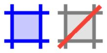 | Mostra / Nascondi tagli |
 | Mostra / Nascondi fori |
 | Mostra / Nascondi fresature |
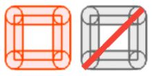 | Mostra / Nascondi ribassi |
Mostra / Nascondi frecce | |
 | Mostra / Nascondi Dynamic Tags |
 | Evidenzia perimetro |
Parametrix è progettato per la lavorazione di figure geometriche piane e chiuse, che rappresentano i pezzi.
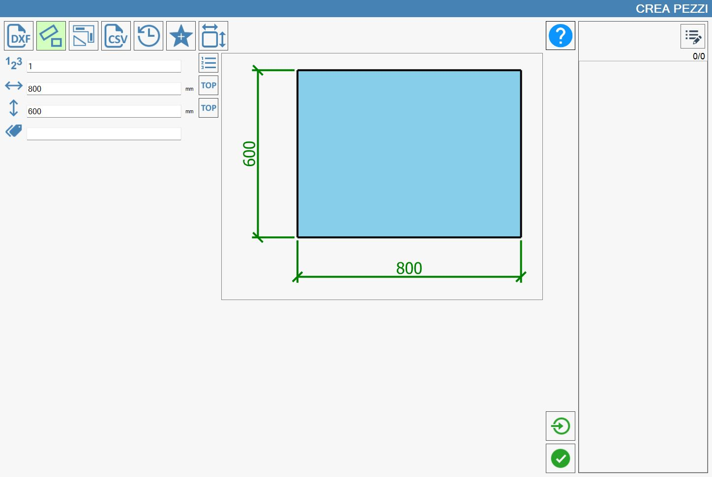
Modalità di creazione dei pezzi
Come è possibile osservare dalla barra di navigazione superiore,

la creazione dei pezzi avviene tramite l’utilizzo di una delle seguenti modalità:
 | Importazione file DXF |
 | Creazione rettangoli |
 | Creazione figure parametriche |
 | Importazione file CSV |
 | Cronologia |
 | Preferiti |
Creazione pezzi commerciali |
Una descrizione più approfondita del funzionamento di ogni modalità verrà fornita nel relativo paragrafo di questo capitolo.
La funzionalità selezionata, viene evidenziata con un colore verde chiaro. All’apertura del pannello “Crea Pezzi“, l’operatore troverà selezionata la modalità “Creazione rettangoli“.
Importare i pezzi in Parametrix
Per concludere correttamente la creazione di uno o più pezzi, è necessario utilizzare il seguente pulsante, che è possibile trovare in ogni sezione del pannello:
 | Importa pezzi |
Il funzionamento della lista dei pezzi, che si trova sulla parte destra del pannello, viene spiegato nel relativo capitolo.
Nella seguente immagine si può osservare come, dopo aver premuto il pulsante “Importa pezzi“, la lista dei pezzi si sia popolata con gli elementi che componevano il file DXF che si è deciso di importare.
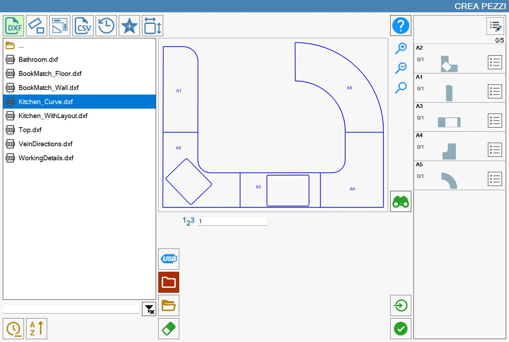
Lista dei pezzi importati
La lista dei pezzi visualizzata nella parte destra del pannello “Crea Pezzi“ è inizialmente vuota. Viene popolata man mano che vengono creati pezzi tramite le funzionalità descritte in precedenza in questo capitolo.
Di seguito viene riportato un esempio di lista pezzi vuota (a sinistra) e un esempio di lista popolata (a destra):
 |  |
Proprietà avanzate dei pezzi
Dalle immagini di esempio precedenti è possibile notare un singolo pulsante presente nell’angolo superiore destro della lista dei pezzi da lavorare:
 | Mostra informazioni avanzate di Pezzo |
|---|

Nella parte inferiore della finestra Pezzo sono presenti due pulsanti illustrati di seguito:
 | Copia |
 | Incolla |
Visualizzare i dettagli del pezzo
Seguendo l’esempio della lista popolata a destra visualizzata a inizio capitolo, viene evidenziato ora il comportamento del seguente pulsante:
 | Mostra dettagli pezzo |
Dopo la pressione del pulsante il pezzo in lista appare come di seguito:

Aggiungi il pezzo selezionato tra i preferiti
È possibile inserire qualunque pezzo nell’apposita sezione dei pezzi preferiti utilizzando il seguente pulsante:
 | Aggiungi preferito |
La pressione di questo pulsante farà apparire il seguente pop-up:

La compilazione del campo di testo e la successiva conferma permetterà all’operatore di inserire il pezzo selezionato nella lista dei pezzi preferiti, precedentemente illustrata.

Trova DXF d’origine
È possibile cercare la cartella del DXF d’origine utilizzando il seguente pulsante:
Trova Pezzo |
Premendo questo pulsante, se Parametrix individua correttamente il file DXF di origine, viene aperta una finestra di Esplora file simile alla seguente:

In questa sezione, è possibile creare pezzi tramite l’importazione di file DXF.
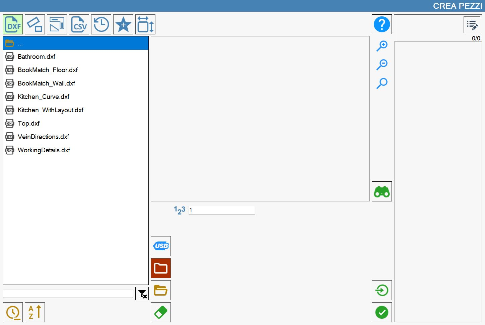
Lista dei file
Nella parte sinistra della finestra, è presente una lista che mostra tutte le cartelle e i file DXF contenuti nel percorso attualmente selezionato.

L’elemento in cima alla lista,
permette di tornare alla cartella superiore a quella in cui ci si trova correntemente.
Inizialmente, viene mostrata la lista dei file DXF presenti nella cartella di lavoro del PC. È possibile cambiare la cartella utilizzando gli appositi pulsanti che si trovano alla destra della lista dei file.
 | Memoria USB |
 | Cartella di lavoro |
 | Esplora cartelle |
 | Elimina file |
Ordinare e filtrare i file visualizzati
Gli elementi che si trovano al di sotto della lista gestiscono l’applicazione di filtri e l’ordinamento dei file che vengono visualizzati.
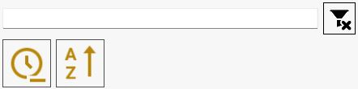
Nella parte superiore dell’immagine è collocata una barra di ricerca, tramite cui è possibile filtrare i file per nome, visualizzando unicamente quelli che contengono il testo inserito.
In questa sezione della schermata, si trovano anche i seguenti pulsanti:
 | Pulisci filtro |
 | Ordinamento per data |
 | Ordinamento per nome |
La ricerca per nome si applica esclusivamente ai file contenuti nella cartella, e non ad eventuali sottocartelle presenti.
Al contrario, l’ordinamento per nome e per data, si applica ad ogni elemento della lista, pur mostrando le cartelle sempre prima dei file.
Anteprima
Alla selezione di un file, nel riquadro al centro della schermata, viene visualizzata un’anteprima del disegno, in modo da renderne immediata l’identificazione del contenuto.

È possibile interagire con l’anteprima sia trascinandone il contenuto, che usando i pulsanti posti alla sua destra.
 | Aumenta zoom |
Diminuisci zoom | |
 | Ripristina visualizzazione |
Pulsanti aggiuntivi
I seguenti pulsanti, consentono inoltre di svolgere delle azioni aggiuntive.
 | Pannello dettagli |
Pannello dettagli
Se un file è stato selezionato, è possibile accedere al “Pannello Dettagli“ per visualizzare le proprietà del DXF. Questo è possibile attraverso il seguente pulsante collocato alla destra dell’anteprima:
Una volta aperto, verrà visualizzato il seguente pannello, in aggiunta alla lista dei pezzi che compongono il DXF selezionato:

Gestione visibilità layout
Nella parte superiore di questo pannello sono riportati i layout sotto forma di checkbox attivabili o disattivabili a piacimento:

Il primo elemento di questa lista di layout permette di abilitare o disabilitare la visualizzazione di tutti i layout.
Pannello laterale
Pulsanti relativi a visibilità e padding
Oltre ai pulsanti già mostrati precedentemente relativi alla modifica che livello di zoom e al ripristino di questo sono presenti due nuovi pulsanti:
 | Evidenzia pezzo selezionato |
 | Muovi visuale |
Lista di polilinee
Sul lato centrale destro del pannello sono riportati i pezzi che compongono il DXF scelto, sotto forma di polilinee.
Selezionando uno sei valori presenti nella lista, verrà evidenziato con il colore giallo il relativo pezzo visibile nell’anteprima.

Quando viene premuto il tasto di fianco a ogni pezzo, verrà resa visibile la lista di polilinee che costituiscono il pezzo.
Sarà inoltre possibile evidenziare una singola polilinea del DXF semplicemente selezionando la rispettiva riga dalla lista:

Pulsanti inferiori
Questi pulsanti sono collocati nella parte inferiore della barra laterale.

 | Trova polilinea aperta precedente |
 | Trova polilinea aperta precedente |
Nel seguente esempio è stato aperto il Pannello Dettagli per un DXF che presenta alcuni pezzi costituiti da polilinee aperte, riportate in rosso nella lista:

È possibile costruire pezzi rettangolari inserendo le misure di larghezza ed altezza e disporli sulla lista di pezzi da lavorare.
Il programma permette anche di associare ad ogni pezzo una marca (o etichetta) identificativa, e di impostare il numero di ripetizione di rettangoli con uguali dimensioni.

Descrizione dei parametri
Per la creazione dei pezzi rettangolari vengono richiesti i seguenti dati:
 | Numero dei pezzi |
 | Larghezza |
 | Altezza |
 | Marca |
Pulsanti aggiuntivi
I seguenti pulsanti laterali, consentono inoltre di svolgere delle azioni aggiuntive.
 | Importazione singola |
 | Dynamic Tag Top |
Per attivare la funzionalità relativa a ciascun pulsante, è necessario premerlo. In questo caso, verrà evidenziato con un colore verde chiaro.
In questa sezione, è possibile costruire dei pezzi utilizzando figure parametriche dalla forma prestabilita. Per disegnare una figura, è sufficiente inserire i valori che la caratterizzano.

Categorie di figure parametriche
Facendo riferimento all’immagine soprastante, nella colonna di sinistra sono rappresentate le principali categorie di forme parametriche.
 | Figure rettangolari |
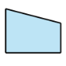 | Quadrilateri |
 | Figure triangolari |
 | Piani cucina |
 | Figure di tipo settoriale |
 | Figure ellittiche |
 | Figure poligonali |
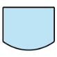 | Bagni |
 | Figure lapidee o tombali |
 | Tavoli |
 | Figure particolari |
Anteprima e valori parametrizzati
In base alla selezione della categoria, nella colonna appena più a destra si apre la scelta della forma corretta da utilizzare.
Un’immagine, posta al centro della schermata, fornirà indicazioni dettagliate riguardo alle dimensioni che devono essere inserite. A destra, rispetto all’immagine di riferimento, viene visualizzata un’anteprima della figura che si sta disegnando, che viene modificata in tempo reale in seguito a ogni modifica eseguita sui valori che caratterizzano la figura disegnata.
Come nei precedenti paragrafi, una volta completato l’inserimento delle quote è possibile inserire la marca (o etichetta) che viene visualizzata sul pezzo quando è inserito nell’area di lavoro, il numero di copie del pezzo, e decidere se eseguire l’importazione singola.
Nell’immagine seguente si può vedere un esempio di creazione di un piano cucina.
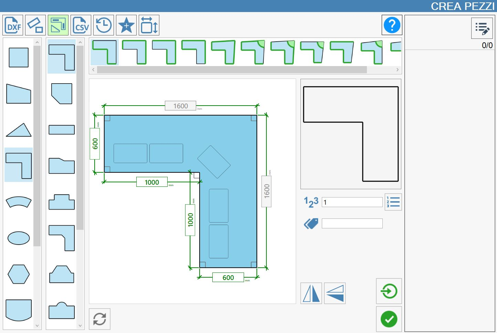
Creazione scassi interni
Per la creazione di scassi interni bisogna premere su uno di rettangoli interni all’immagine centrale e si aprirà la finestra rappresentata nell’immagine sottostante , dove si potrà modificare lo scasso a piacimento per poi inserirlo dentro all’immagine originale.
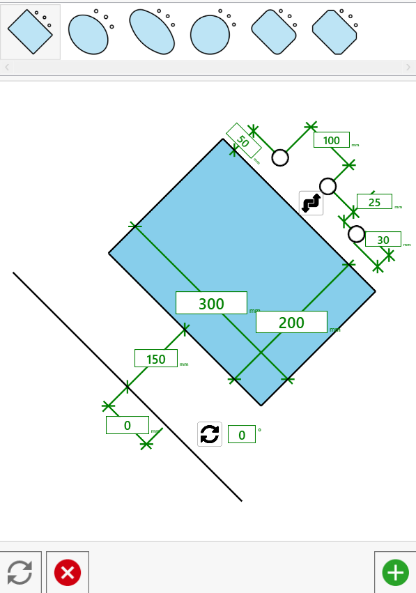
Impostazioni aggiuntive
Parametri aggiuntivi
Per la creazione dei pezzi rettangolari vengono richiesti i seguenti dati:
 | Numero dei pezzi |
 | Marca |
Pulsanti aggiuntivi
 | Importazione singola |
  | Mirror |
 | Ripristina |
Barra per pezzi fuori squadra
Alcuni pezzi hanno la possibilità di essere costruiti utilizzando angoli non in squadra (ovvero diversi da 90 gradi).
Per usufruire di questa possibilità si usa una barra , posta sopra all’immagine centrale, che contiene tutte le versioni di modifica di quell’immagine. I parametri modificabili sono colorati in verde.

Mirror
Premendo i due pulsanti dedicati, è possibile ribaltare il risultato visualizzato a schermo, rispettivamente lungo l’asse verticale o orizzontale. Questa funzionalità consente di adattare la visualizzazione in base alle esigenze operative o al tipo di lavorazione in corso.
Vengono di seguito proposti alcuni esempi di ribaltamento orizzontali e verticali:
Solo ribaltamento Orizzontale | Solo ribaltamento Verticale | Ribaltamento Orizzontale e Verticale |
 |  |  |
 |  |  |
Questa sezione offre la possibilità all’operatore di importare pezzi a partire da file in formato CSV.
/schermata_pulita_eng-20250321-091704.png)
Anteprima
La lista sulla sinistra di questa sezione riporta tutti i file in formato CSV presenti nel percorso attualmente selezionato.
La pressione di un elemento dalla lista dei file CSV aggiornerà l’anteprima che compone la parte centrale di questa sezione.
Nel seguente esempio è possibile notare l’aggiornamento dell’anteprima in seguito alla pressione del primo elemento della lista:
/schermata_bagno_eng-20250321-092252.png)
Moltiplicatori di ingombro
Viene data la possibilità di moltiplicare per 10, oppure per 100, oppure per 1000, l’ingombro dei pezzi presenti nel file CSV selezionato.
L’immagine seguente riporta i tre moltiplicatori disponibili:
/pulsanti_moltiplicatore-20250320-154918.png)
La seguente immagine aggiorna l'esempio dell’immagine riportata nel capitolo “Anteprima”, in cui i valori “Larghezza“, “altezza” e “spessore“ subiscono una variazione in seguito alla pressione del secondo pulsante di moltiplicatore di ingombro “X 100”:
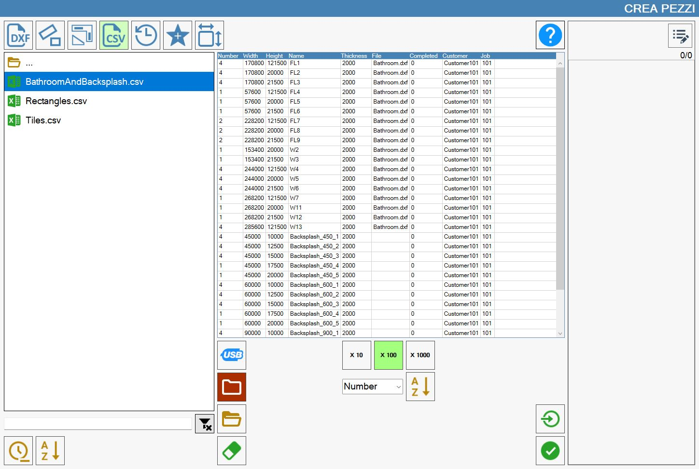
In questo esempio viene inoltre evidenziato come il pulsante “X 100“ dopo essere stato cliccato, venga aggiornato modificando il suo colore di sfondo con una tonalità verde chiara.
Ordinamento
La funzionalità di ordinamento popola la lista di ordinamento in base ai campi presenti nel file CSV selezionato e permette all’operatore, se lo desidera, di applicare un filtro in ordine alfabetico oppure alfabetico inverso basato su uno dei campi previsti nel file selezionato.
/sezione_ordinamento_eng-20250320-155220.png)
Questa funzionalità permette all’operatore di recuperare lo storico dei pezzi creati.

Tipologie di visuale dei pezzi nella cronologia
Vengono messe a disposizione tre differenti modalità di visualizzazione dei pezzi presenti in questa sezione:

 | Visuale tagli |
 | Visuale quote |
 | Visuale ingombro |
Per i seguenti esempi sono stati importati cinque pezzi (A1, A2, A3, A4 e A5) dal DXF denominato “Kitchen_Curve“.
Indipendentemente dalla visuale selezionata, sarà sempre possibile visualizzare tutti i pezzi sia nella lista della cronologia sul lato sinistro, che nella lista dei pezzi attualmente importati sul lato destro.
Visuale dei tagli
La visuale tagli mette in evidenza tutti i tagli, sia perimetrali che interni al pezzo, nascondendo altre informazioni come il valore della loro lunghezza.

Visuale delle quote tagli
La visuale quote tagli evidenzia il perimetro esterno colorandolo di colore nero, e colloca in prossimità del centro di ogni taglio sul perimetro la relativa lunghezza.

Visuale di ingombro
La visuale ingombro non evidenzia alcun taglio, permette invece di osservare le dimensioni massime del pezzo in termini di larghezza e lunghezza del pezzo.
Nella seguente immagine è possibile osservare due linee nere con al centro di ognuna il valore di lunghezza e larghezza massimi del pezzo, ma è importante osservare che solo per una coincidenza i lati del pezzo A2 coincidono con le linee nere, i restanti tagli del pezzo infatti non sono evidenziati e non mostrano alcuna informazione.

Tramite la schermata dei preferiti è possibile importare in Parametrix pezzi che in precedenza sono stati salvati come preferiti.

Aggiungere un pezzo tra i preferiti
È possibile inserire qualunque pezzo nella sezione dei pezzi preferiti utilizzando il seguente pulsante:
 | Aggiungi preferito |
La pressione di questo pulsante farà apparire il seguente pop-up:

La compilazione del campo di testo e la successiva conferma permetterà all’operatore di inserire il pezzo selezionato nella lista dei pezzi preferiti, precedentemente illustrata.

Tipologie di visuale dei pezzi nella cronologia
Vengono messe a disposizione tre differenti modalità di visualizzazione dei pezzi presenti in questa sezione:
 | Visuale tagli |
 | Visuale quote |
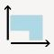 | Visuale ingombro |
In questa sezione del pannello “Crea Pezzi“ è possibile creare i pezzi commerciali. Le caratteristiche di questa tipologia di pezzi sono le seguenti:
vengono creati con un elevato numero di copie;
le dimensioni di larghezza e altezza sono modificabili anche quando un pezzo viene inserito nella zona di lavoro.

Parametri
 | Larghezza |
 | Altezza |
 | Marca |
Importazione di un pezzo commerciale
Per concludere correttamente la creazione di un pezzo commerciale, è necessario utilizzare il seguente pulsante:
 | Importa pezzi commerciali |
La procedura di creazione inoltre, aggiornerà sia la lista dei pezzi commerciali a sinistra, che la lista dei pezzi da lavorare sul lato destro. Il seguente esempio mostra entrambe le liste aggiornate:
Come si può notare osservando la colonna sul lato sinistro della schermata, un’icona verde precede il nome del pezzo. Cliccando quell’icona, diventerà di colore rosso, e il pezzo verrà rimosso dalla lista sul lato destro.

Quando uno o più pezzi vengono creati e importati su Parametrix, il programma li aggiunge alla lista dei pezzi, collocata sulla sezione destra della schermata principale.
Attraverso la lista dei pezzi, l’operatore può:
Inserire i pezzi sull’area di lavoro;
Tenere traccia dei pezzi lavorati e di quelli ancora da lavorare;
Applicare alcune modifiche ai pezzi.

Elementi della lista
Ogni riga della lista rappresenta un pezzo che è stato importato in Parametrix.

Come si può vedere in questa immagine, in una riga sono contenute le seguenti informazioni relative al pezzo:
Anteprima della forma | Rappresentazione semplificata della geometria del pezzo. |
Marca del pezzo | Etichetta che viene aggiunta al pezzo per identificarlo. |
Numero dei pezzi inseriti e totali | Indica il numero dei pezzi di quella riga che sono stati inseriti all’interno dell'area di lavoro, ed il numero totale di pezzi di quel tipo che è possibile inserire. |
Inserire i pezzi nell’area di lavoro
Per inserire i pezzi nell’area di lavoro si utilizza il seguente pulsante che si trova in ogni riga della lista:
 | Inserisci pezzi nell’area di lavoro |
Il pezzo selezionato è stato posizionato sull’area di lavoro, ed il numero dei pezzi di questa riga inseriti è stato aggiornato.
Una volta raggiunto il numero massimo, il pulsante “Inserisci pezzi“ di quella riga scompare, in quanto tutti i pezzi di quella riga sono stati lavorati.
Operazioni sui pezzi della lista
I pulsanti sottostanti alla lista permettono di gestire gli elementi della lista. In particolare:
 | Pulisci lista dei pezzi |
 | Nascondi/Mostra pezzi commerciali |
 | Cancella pezzo |
Filtra/Ordina i pezzi | |
 | Proprietà aggiuntive del pezzo |
Cancella pezzo
Questa funzione permette di eliminare i pezzi dalla lista singolarmente. Dopo aver premuto il pulsante, il programma chiederà all’utente di selezionare la riga da cancellare sostituendo la freccia di inserimento dei pezzi sull’area di lavoro con una gomma.

Premendo questo pulsante, viene eliminata la riga corrispondente, e quindi tutti i pezzi che rappresenta.
Questa funzione permette all’operatore di applicare un filtro e/o ordinare i pezzi della lista.
Alla pressione del pulsante si aprirà la seguente finestra.

Lista dei pezzi filtrata
Una volta che sono stati impostati dei criteri per filtrare oppure ordinare i pezzi, si possono applicare utilizzando il pulsante che si trova in alto a destra.
 | Attiva/Disattiva |
I pezzi che non corrispondono ai criteri scelti per il filtro, non verranno mostrati nella lista dei pezzi.
I pezzi presenti sull’area di lavoro che non soddisfano i criteri stabiliti dal filtro verranno rimossi.
Nel seguente esempio, si vogliono mostrare solo i pezzi aventi altezza maggiore a 600 mm, e disporli in ordine alfabetico crescente.
Prima di applicare il filtro e l’ordinamento | Dopo aver applicato il filtro e l’ordinamento |
 |  |
La funzione di filtro e ordinamento non funziona con i pezzi commerciali.
I criteri di filtro e ordinamento verranno rispettati anche dalla funzionalità di nesting.
Filtrare i pezzi
Nella sezione superiore di questa finestra, l’operatore può scegliere di aggiungere un filtro in base a diverse caratteristiche dei pezzi.
Come si può vedere, si possono trovare i seguenti pulsanti.
  | Modalità di applicazione del filtro “Esclusione” |
 | Aggiungi filtro |
Elimina filtri |
Come creare un filtro
Per creare un filtro, scegliere dal primo menù a tendina sulla sinistra la proprietà da utilizzare tra quelle proposte.

Una volta decisa la caratteristica discriminante, selezionare un operatore relazionale dal secondo menù.
Successivamente, inserire un valore adatto alla proprietà nella casella a fianco per creare una condizione logica.

In questo momento, attraverso il pulsante sulla destra della casella di testo, si decide come il filtro che si sta creando vada ad interagire con gli altri filtri dell’elenco, se presenti.
In modalità “Esclusione“, un pezzo dovrà soddisfare
contemporaneamente
la condizione logica che si sta per creare e il risultato delle precedenti.
In modalità “Inclusione“, un pezzo dovrà soddisfare la condizione che si sta per creare
oppure
il risultato delle precedenti.
Per completare la creazione del filtro, utilizzare l’ultimo pulsante collocato su questa riga. Il filtro si andrà ad aggiungere all’elenco sottostante.
Ordinare i pezzi
Nella sezione inferiore della finestra, l’operatore può decidere di ordinare i pezzi in base ad alcune proprietà.

Dopo aver selezionato una voce tra quelle proposte nel menù a tendina, si potranno svolgere le seguenti azioni:
Ordinamento Crescente/Decrescente | |
 | Elimina ordinamento |
Ordinamento multiplo (Opzionale)
Questa funzionalità rende possibile ordinare i pezzi della lista utilizzando più di un criterio.

Con questa modalità, è possibile aggiungere criteri di ordinamento utilizzando i seguenti pulsanti:
 | Aggiungi criterio di ordinamento ordinamento |
 | Cambia posizione |
I criteri contenuti in questo elenco vengono rispettati dall’alto verso il basso.
Ciò significa che i pezzi vengono ordinati secondo il primo criterio. Se due o più pezzi possiedono lo stesso valore per la proprietà collegata al primo criterio, verranno ordinati secondo il criterio successivo. E così a seguire per ogni criterio della lista.
Nella seguente immagine viene mostrato un esempio di ordinamento multiplo.

Questa funzione permette di modificare le proprietà aggiuntive del pezzo. Sono informazioni riguardanti il pezzo che possono essere visualizzate in diverse parti del programma e che vengono trasposte anche all’interno del file ISO generato per la macchina.
Premendo sul pulsante e poi sulla riga della lista dei pezzi desiderata, si apre la seguente finestra.

Configurazione delle proprietà
Nella parte centrale del pannello vengono elencate le proprietà aggiuntive che possono essere assegnate ad un pezzo.
I campi che appaiono in questa finestra possono essere personalizzati con l’aiuto di un tecnico Donatoni.
Pulsanti
Nella parte inferiore della finestra sono presenti i due pulsanti illustrati di seguito:
Copia | |
 | Incolla |
Confermando, queste informazioni verranno associate a tutti i pezzi associati alla riga della lista che è stata selezionata.
Questo pannello permette all’operatore di applicare diverse tipologie di lavorazione a un pezzo designato.
Alla sua apertura, viene visualizzata la seguente schermata:

Alcune delle funzioni che verranno descritte in questa sezione sono presenti anche sulla pagina principale di Parametrix, ma con una differenza.
Se un pezzo, o un taglio, viene modificato attraverso il pannello ‘Modifica Pezzo’, tutti i pezzi della riga selezionata verranno modificati di conseguenza con le stesse lavorazioni.
Al contrario, se la lavorazione viene impostata dall’area di lavoro, verrà modificato solo il pezzo selezionato.
Tipologie di lavorazione
Tramite il pannello “Modifica Pezzo“ è possibile applicare una o più tra le seguenti lavorazioni, che verranno singolarmente illustrate in seguito. In particolare, Parametrix permette di:
 | Inclina | Gocciolatoio | |
Aggiungi |  | Cancella | |
 | Offset | Foro | |
 | Fresatura |  | Ribasso |
 | Taglio Sotto - (Opzionale) |  | Alzata |
 | Cordolo |  | Superficie - (Opzionale) |
| Spianatura - (Opzionale) |  | Canaletta - (Opzionale) |
 | Raccordo |  | Dividi |
 | Scasso interno | Flutes | |
 | Ingombro Massimo - (Opzionale) |  | Specchio |
A seconda della combinazione di optional, alcuni di questi pulsanti possono non essere presenti.
Lista dei tagli
I tagli del pezzo verranno visualizzati nella sezione inferiore a sinistra di questo pannello.
Tramite apposita suddivisione, viene indicato se un taglio appartiene al perimetro esterno oppure ad uno dei perimetri interni. Grazie a questa classificazione, è possibile mostrare/nascondere la lista dei i tagli appartenenti ad un poligono premendo sull’icona della sezione corrispondente.

Come si può vedere dall’immagine, in ogni riga vengono mostrate alcune informazioni riguardo al taglio che rappresentano. In particolare:
 | Gestisci lavorazione |
 | Informazioni del taglio
|
 | Informazioni della lavorazione
|
Queste informazioni cambiano in base alla tipologia del taglio che descrivono. Non sempre vengono mostrate tutte le informazioni.
Ad esempio, per i fori è possibile visualizzare esclusivamente la la penetrazione nel materiale.
Se su una parte del pezzo non è presente nessun taglio, viene indicato con la dicitura “Nessuno“.
Anteprima
La parte principale della funzionalità "Modifica Pezzo" mette a disposizione dell'operatore un'anteprima completa del pezzo selezionato, mostrando tutte le lavorazioni attualmente applicate.

È possibile interagire con il pezzo visualizzato semplicemente muovendo l’anteprima, oppure utilizzando i pulsanti per modificare lo zoom che si trovano alla sua destra.
Inoltre, in questa sezione sono presenti altre funzionalità che di seguito andremo a descrivere.
 | Marca |
 | Numero dei pezzi |
Aggiungi preferito |
Selezione dei tagli
È possibile selezionare un taglio direttamente dall'anteprima, osservando il cambiamento del suo colore in giallo a conferma della selezione, oppure selezionare la corrispondente riga all'interno dell'elenco dei tagli disponibile nel menù in basso a sinistra.
Cliccando sul bollino verde presente a sinistra di ogni elemento della lista, sarà possibile disabilitare il relativo taglio.
In questo caso il bollino diventerà rosso e l’anteprima del pezzo verrà aggiornata con il colore del taglio disattivato che muterà in grigio.
Nel seguente esempio sono stati disabilitati i primi due tagli del poligono esterno del pezzo:

Barra inferiore
In questa barra sono messe a disposizione alcune funzionalità che semplificano la fruizione delle lavorazioni di Modifica Pezzo:

Tagli | |
 | Lati |
Cronologia | |
 | Annulla |
 | Modifica visuale |
Cronologia
Permette di visualizzare tutte le modifiche applicate al pezzo corrente e, se necessario, consente di ripristinare il pezzo corrente ad uno stato precedente.
Se sono state applicate modifiche al pezzo corrente, queste verranno visualizzate nell'elenco a sinistra:

Nel menù a sinistra vengono visualizzati gli stati della lavorazione del pezzo.
 | Stato della lavorazione
|
Lo stato del pezzo corrente senza modifiche è chiamato "Default".
Selezionando una voce dal menu a sinistra, viene mostrata l’anteprima corrispondente al momento di applicazione della lavorazione.

Premere il tasto di conferma, farà si che il pezzo venga ripristinato allo stato selezionato. In questo modo, le modifiche successive a quella selezionata vengono rimosse.
Nella parte inferiore del pannello sono visualizzati tre pulsanti di utilità per la visualizzazione del pezzo nell’anteprima:
 | Visualizza tagli |
 | Visualizza misure |
 | Visualizza angolo |
Modifica Visuale
Questa modalità mette a disposizione dell’operatore alcuni pulsanti visibili solo nel momento in cui la “modifica visuale“ è abilitata.

Ognuno dei seguenti pulsanti abilita o disabilita uno dei seguenti elementi del pezzo:
Tagli | |
 | Fori |
 | Fresature |
 | Ribassi |
 | Frecce sui tagli |
 | Nome del pezzo |
 | Dynamic Tags |
Evidenzia Perimetro |
La funzione ‘Inclinazione’ definisce una lavorazione con l’asse A diverso da 0.
L’interfaccia per il tipo di lavorazione “Taglio Inclinato“ assomiglia alla seguente immagine:

Modalità
Direzione squadra _ | |
 | Direzione squadra - |
Parametri
Gradi | Rappresenta l’angolo formato tra la direzione dell’utensile montato e la superficie del materiale da lavorare. |
Esecuzione della lavorazione
È possibile applicare la lavorazione premendo il pulsante a sinistra del taglio opportuno nella lista dei poligoni.
Un’icona rossa con una 'X' indica che la lavorazione non può essere applicata al taglio desiderato.
Una volta selezionata la direzione della squadra, si inserisce il valore desiderato a fianco e si seleziona il taglio su cui impostare il taglio inclinato.
L’applicazione della lavorazione comporterà la visualizzazione del taglio inclinato con un colore differente.
In base alla selezione della squadra è possibile ottenere due risultati distinti:
Direzione squadra: Positiva
Nella seguente immagine di esempio è stata applicata la lavorazione taglio inclinato (45.0_) con direzione della squadra positiva su ogni lato eccetto l’arco interno, poiché non è possibile inclinare l'utensile interno al perimetro.

Direzione squadra: Negativa
Nell'immagine di esempio riportata, le lavorazioni di taglio inclinato (45.0_) con direzione della squadra negativa sono state applicate ai tagli del pezzo in modo inverso rispetto alla configurazione illustrata nel paragrafo precedente

Questa funzione permette di aggiungere un taglio con caratteristiche diverse dal taglio normale.
L’interfaccia che si apre assomiglia alla seguente immagine:
Parametri
È possibile impostare la larghezza di taglio (deve essere uguale o maggiore dello spessore del disco).
Distanza dal bordo | La distanza dal taglio selezionato alla lavorazione di gocciolatoio. |
Spessore di taglio | È la misura della larghezza della lavorazione. È possibile fare un Gocciolatoio di larghezza maggiore rispetto allo spessore del disco. |
Profondità taglio | È la profondità di affondo sul materiale. |
Distanza inizio | La distanza verso l’interno con cui viene creata la lavorazione rispetto all’inizio del taglio. |
Distanza fine | La distanza verso l’interno con cui viene creata la lavorazione rispetto alla fine del taglio. |
Distanza inizio e distanza fine possono essere attivi o spenti con i pulsanti sulla destra del valore.
In caso siano spenti, Parametrix non ne tiene conto, mentre quando sono attivi, il programma calcola lo spostamento.
Distanza Inizio e Distanza Fine
Questi parametri possono essere attivi o spenti con i pulsanti alla destra del valore. Nel caso in cui sono grigi (spenti) Parametrix non ne tiene conto, mentre quando sono verdi (accesi - come da figura) il programma calcola lo spostamento.

Esecuzione della lavorazione
È possibile applicare la lavorazione premendo il pulsante a sinistra del taglio opportuno nella lista dei poligoni.
Un’icona rossa con una 'X' indica che la lavorazione non può essere applicata al taglio desiderato.
In base ai parametri di lavorazione impostati, un gocciolatoio viene inserito parallelamente al taglio del pezzo selezionato.

Nell'immagine seguente è stata illustrata una lavorazione di tipo gocciolatoio, realizzata con gli stessi parametri dell’esempio precedente.

In entrambi gli esempi la lavorazione è stata applicata al taglio inferiore.
Inoltre, è stata aggiunta all'elenco delle 'Lavorazioni aggiuntive', situato nella parte inferiore sinistra del pannello 'Modifica Pezzo'.
Tramite questa funzione è possibile aggiungere un taglio parallelo ad un taglio già esistente alla distanza desiderata.
È possibile applicare questa lavorazione sia ai tagli lineari che sugli archi di curva.

Parametri
Per poter aggiungere un taglio, viene richiesto di impostare il seguente parametro:
Distanza | Distanza dal taglio selezionato in cui aggiungere il taglio parallelo. |
Esecuzione della lavorazione
È possibile applicare la lavorazione premendo il pulsante a sinistra del taglio opportuno nella lista dei poligoni.
Un’icona rossa con una 'X' indica che la lavorazione non può essere applicata al taglio desiderato.
Una volta impostato il parametro distanza, si procede con la selezione del taglio rispetto al quale creare quello nuovo.
La direzione in cui aggiungere il nuovo taglio viene calcolata in modo da non rovinare il pezzo: verso l’esterno se si seleziona un elemento del poligono esterno, oppure verso l’interno di un poligono interno.
Nel caso in cui il valore della distanza sia negativo, il taglio aggiunto viene calcolato nella direzione di spostamento opposta a quella intesa.
Nell'immagine seguente è illustrato il risultato dell'aggiunta di due tagli, effettuata selezionando le due rette che definiscono la rientranza del piano cucina.

Come mostrato, il nuovo taglio parallelo viene inserito nella sezione Lavorazioni Aggiunte e ne replica le caratteristiche del taglio selezionato, quali direzione e tipologia di lavorazione.
Pulsante per l’aggiunta taglio negli angoli concavi
 | Tagli concavi |
|---|
La funzione ‘Cancella’ permette di cancellare uno o più tagli sulla figura.
L’interfaccia per questa funzione assomiglia alla seguente immagine:

Esecuzione della lavorazione
È possibile applicare la lavorazione premendo il pulsante a sinistra del taglio opportuno nella lista dei poligoni.
Un’icona rossa con una 'X' indica che la lavorazione non può essere applicata al taglio desiderato.
Una volta cancellato uno dei tagli si vedranno le seguenti modifiche:

Quando tutti i tagli vengono rimossi dalla lista delle lavorazioni aggiuntive, la lista stessa viene automaticamente cancellata.
Cancellando un taglio dal poligono il risultato sarà simile a quello mostrato nella seguente immagine:

Questa funzione permette di allargare il pezzo spostando in maniera parallela al taglio selezionato.
Nell’immagine seguente è illustrata l’interfaccia della funzione, utilizzando un pezzo campione a scopo dimostrativo.

Parametri
Offset | Permette di allargare il pezzo spostandolo in maniera parallela al taglio selezionato. |
Esecuzione della lavorazione
È possibile applicare la lavorazione premendo il pulsante a sinistra del taglio opportuno nella lista dei poligoni.
Un’icona rossa con una 'X' indica che la lavorazione non può essere applicata al taglio desiderato.
L’immagine sottostante raffigura il pezzo dopo aver aggiunto un offset, prendendo come riferimento il taglio laterale sinistro del poligono interno.

Questa lavorazione, una volta eseguita, non comporta l’aggiunta o la rimozione di tagli dalla lista, ma si limita ad aggiornare i parametri dei tagli coinvolti in base alle modifiche apportate.
In questa pagina è possibile eseguire un singolo foro in una posizione specifica oppure eseguire una serie di fori a distanza fissata.

Tipologie di lavorazione
Per utilizzare questa lavorazione, occorre innanzitutto scegliere una delle due modalità disponibili, selezionando il pulsante corrispondente:
Le modalità 'Foro nel materiale' e 'Rimozione Scodo' sono mutuamente esclusive: l'attivazione di una esclude automaticamente l'altra.
 | Foro nel materiale |
 | Rimozione scodo |
Foro nel materiale
Selezionando questa modalità di lavorazione, il vertice attualmente selezionato verrà evidenziato in arancione e, a partire da esso, verrà proiettata l’anteprima del foro da aggiungere, anch'essa visualizzata in arancione e generata in base ai parametri impostati.

Parametri
Penetrazione | Indica la profondità che la lavorazione deve raggiungere. |
Distanza asse X | Distanza sull’asse X dal punto iniziale del taglio selezionato, in corrispondenza della quale verrà creato il foro. |
Distanza asse Y | Distanza sull’asse Y dal punto iniziale del taglio selezionato, in corrispondenza della quale verrà creato il foro. |
Rispetto al punto selezionato, viene considerata positiva la parte a destra del cerchio (per le X) e la parte sopra del cerchio (per le Y), come mostrato in figura.

Esecuzione Foro nel materiale
È possibile applicare la lavorazione premendo il pulsante a sinistra del taglio opportuno nella lista dei poligoni.
Un’icona rossa con una 'X' indica che la lavorazione non può essere applicata al taglio desiderato.
Una volta selezionato un vertice e impostati i parametri di distanza e penetrazione sarà possibile confermare la lavorazione premendo il tasto verde OK.
A ogni foro inserito con successo nel materiale corrisponde l’aggiornamento dell’anteprima e l’inserimento automatico nella sezione 'Lavorazioni aggiuntive' sulla sinistra:

A differenza di Rimozione Scodo, tuttavia, è possibile selezionare anche i punti centrali degli archi, evidenziati nell’anteprima insieme a tutti gli altri punti validi come riferimento per l’inserimento dei fori nel materiale
Rimozione Scodo
Attivando questa modalità, il vertice selezionato diventa il punto di origine di un’anteprima arancione composta da più fori, la cui dimensione dipende dal foretto montato e la cui quantità è determinata dal parametro Distanza fori.

Parametri Rimozione Scodo
Penetrazione | Indica la profondità che la lavorazione deve raggiungere. |
Distanza fori automatici | Determina la distanza tra i punti di origine dei fori. |
Esecuzione di Rimozione Scodo
È possibile applicare la lavorazione premendo il pulsante a sinistra del taglio opportuno nella lista dei poligoni.
Un’icona rossa con una 'X' indica che la lavorazione non può essere applicata al taglio desiderato.
La modalità Rimozione Scodo può essere utilizzata tra due tagli consecutivi, indipendentemente dal fatto che siano entrambi di tipo retta, entrambi di tipo curva, oppure uno di ciascun tipo.

Il foro viene aggiunto alla lista del poligono interno e identifica la lavorazione di rimozione dello scodo.
Viene fornito di seguito un esempio di Rimozione Scodo applicato su due lati adiacenti nel poligono interno:

Pulsanti disponibili con modalità Rimozione Scodo
 | Fori concavi |
|---|---|
 | Numero fori |
La funzione ‘Fresatura’ permette di creare una fresatura sul pezzo, sul lato, sul bordo oppure sull'intero perimetro.
L’interfaccia per questa funzione assomiglia alla seguente immagine:

Parametri
Vertice | Toglie il materiale che il disco non può eliminare senza rovinare il pezzo. Serve solo a rifinire alcuni punti del pezzo. |
Lato | L’utensile fresa si utilizza per tagliare un lato del pezzo. Non si affianca al taglio con il disco ma lo sostituisce completamente. |
Perimetro | Prevede di utilizzare l’utensile fresa invece dell’utensile disco per eseguire il taglio su tutto un poligono del pezzo. Sostituisce il disco come la modalità lato. |
In ogni modalità, lo spessore del taglio equivale al diametro dell’utensile fresa montato. La variazione di questo elemento modifica automaticamente i tagli aggiornandoli con la nuova misura.
Per la modalità Vertice la variazione dello spessore del materiale oppure la variazione del diametro del disco, comportano un allungamento oppure un accorciamento del taglio, in modo tale da adeguarsi alle nuove misure scelte.
In caso la Fresa sia troppo grande per tagliare il lato selezionato verrà, visualizzato a video un messaggio di errore.
Spessore | Viene mostrato lo spessore della lastra attualmente impostato in Parametrix, per aiutare l’operatore ad applicare la lavorazione. |
Penetrazione | |
Fresatura su angoli interni |
Esecuzione della lavorazione
È possibile applicare la lavorazione premendo il pulsante a sinistra del taglio opportuno nella lista dei poligoni.
Un’icona rossa con una 'X' indica che la lavorazione non può essere applicata al taglio desiderato.
Le conseguenze dell’applicazione di una fresatura variano in base alla modalità selezionata e presentano alcune differenze, descritte nei paragrafi seguenti.
La fresatura ha inizio dal punto di attacco indicato nella figura, identificabile con il cerchio colorato pieno posizionato sull'origine.
Ogni fresatura applicata a un pezzo viene inserita nella lista dei tagli associata a un poligono e rappresentata graficamente in colore azzurro.
Nella modalità Vertice, la fresatura viene allineata al vertice selezionato.
Nelle modalità Lato e Perimetro, vengono sostituiti rispettivamente uno o tutti i tagli del poligono.
Esecuzione su un vertice
La fresatura viene applicata al vertice più vicino al punto selezionato di un taglio nell’anteprima.
L’applicazione avverrà tra due tagli consecutivi.
Nella seguente immagine di esempio sono mostrate due lavorazioni di fresatura su vertice: la prima su un vertice superiore sinistro del poligono interno; la seconda su un vertice del poligono esterno.
Esecuzione su un lato
Selezionando un punto qualsiasi di un taglio sull’anteprima, la fresatura verrà applicata lungo l’intero lato corrispondente.
Nell'immagine seguente sono mostrate due lavorazioni di fresatura su lato: la prima sul lato sinistro del poligono interno; la seconda su un lato inferiore del poligono esterno.
Esecuzione sul perimetro
Indipendentemente dal punto o dal taglio selezionato, la fresatura verrà eseguita lungo l’intero perimetro del poligono selezionato.

La funzione ‘Ribasso’ permette di aggiungere un profilo al bordo superiore del pezzo o del piano di lavoro della cucina.
Viene utilizzato principalmente per abbassare di una certa quantità gli scassi interni dei piani cucina, in modo tale da poter inserire il lavandino.
L’utensile utilizzato per eseguire questa lavorazione è la Fresa.
L’interfaccia per questa funzione assomiglia alla seguente immagine:

Parametri
Affondo | La profondità con cui eseguire il taglio. |
Distanza | Consente di specificare la distanza desiderata rispetto al lato del pezzo. Sono ammessi valori positivi, negativi e pari a zero.
|
Esecuzione della lavorazione
È possibile applicare la lavorazione premendo il pulsante a sinistra del taglio opportuno nella lista dei poligoni.
Un’icona rossa con una 'X' indica che la lavorazione non può essere applicata al taglio desiderato.
Verrà applicato un ribasso su tutto il poligono di un taglio selezionato, indipendentemente da dove questo è stato selezionato.
Di seguito un esempio di ribasso con valore del parametro distanza positivo:

Questa funzionalità permette all’operatore di aggiungere un taglio sotto rispetto a un taglio selezionato, sul pezzo selezionato.
L’interfaccia per questa funzione assomiglia alla seguente immagine:
/2-20250630-123653.png)
Parametri
Distanza dal bordo | La distanza dal taglio selezionato alla lavorazione del taglio sotto. |
Profondità taglio | È la profondità di affondo sul materiale. |
Distanza inizio | La distanza verso l’interno con cui viene creata la lavorazione rispetto all’inizio del taglio. |
Distanza fine | La distanza verso l’interno con cui viene creata la lavorazione rispetto alla fine del taglio. |
Distanza inizio e distanza fine possono essere attivi o spenti con i pulsanti sulla destra del valore.
In caso siano spenti, Parametrix non ne tiene conto, mentre quando sono attivi, il programma calcola lo spostamento.
Distanza Inizio e Distanza Fine
Questi parametri possono essere attivi o spenti con i pulsanti alla destra del valore. Nel caso in cui sono grigi (spenti) Parametrix non ne tiene conto, mentre quando sono verdi (accesi - come da figura) il programma calcola lo spostamento.
/spiegazione_distanze_e_direzione_b-20250623-072340.png)
Esecuzione della lavorazione
È possibile applicare la lavorazione premendo il pulsante a sinistra del taglio opportuno nella lista dei poligoni.
Un’icona rossa con una 'X' indica che la lavorazione non può essere applicata al taglio desiderato.
In base ai parametri di lavorazione impostati, un taglio sotto viene inserito parallelamente al taglio del pezzo selezionato.
/3-20250630-123927.png)
Nell'immagine seguente è stata illustrata una lavorazione di tipo gocciolatoio, realizzata con gli stessi parametri dell’esempio precedente.
/4-20250630-123848.png)
In entrambi gli esempi la lavorazione è stata applicata al taglio rettilineo inferiore.
Inoltre, è stata aggiunta all'elenco delle 'Lavorazioni aggiuntive', situato nella parte inferiore sinistra del pannello 'Modifica Pezzo'.
Questa funzione permette di creare un pezzo rettangolare a partire dal lato di un oggetto, in modo da ottenere un’alzata.

Tipologie di lavorazione
Per utilizzare questa lavorazione, occorre innanzitutto scegliere una delle due modalità disponibili, selezionando il pulsante corrispondente:
Modalità Rivestimento | |
 | Modalità Alzata |
Parametri
Altezza | Altezza dell’alzatina che verrà inserita durante l’esecuzione della lavorazione. |
Inclina lati pezzo | Se abilitato inserisce automaticamente tagli inclinati nell’eventualità di tagli che colliderebbero. |
Parametro aggiuntivo modalità alzata
Gradi | Questo parametro è attivo solo quando la modalità Rivestimento è selezionata. |
Esecuzione della lavorazione
È possibile applicare la lavorazione premendo il pulsante a sinistra del taglio opportuno nella lista dei poligoni.
Un’icona rossa con una 'X' indica che la lavorazione non può essere applicata al taglio desiderato.
Cliccando direttamente sul taglio nell’anteprima, oppure sull’icona a sinistra del taglio nella relativa lista sul lato sinistro quando possibile, verrà eseguita la lavorazione selezionata.
A ogni alzata o raccordo applicato con successo nel materiale corrisponde l’aggiornamento dell’anteprima e della lista dei tagli sulla sinistra.
Ogni pezzo creato con questa funzionalità verrà aggiunto nella lista dei pezzi di Parametrix.
I nuovi pezzi introdotti inoltre, verranno aggiunti in una lista collocata appena sopra l’anteprima nel pannello ‘Modifica Pezzo’;

Da questa lista è possibile selezionare il pezzo del blocco desiderato per visualizzarne l’anteprima e i relativi tagli nella lista dei tagli.
Esecuzione di Rivestimento
Viene ora mostrata l’applicazione di due rivestimenti nel caso in cui il parametro “Inclina lati pezzo“ sia abilitato o disabilitato.
Viene dapprima applicato un rivestimento di altezza 1000 mm sul lato inferiore del rettangolo e successivamente un secondo rivestimento sul lato destro dello stesso.
Inclina lati pezzo disabilitato
Non compaiono lati inclinati nel risultato ottenuto e i tagli del pezzo originale non vengono modificati nella lista dei tagli:

Inclina lati pezzo abilitato
In caso di allineamento vertici dei nuovi pezzi ovvero Pezzo_1 e Pezzo_2, verranno sostituiti i lati con il vertice in comune non adiacenti al pezzo originale e sostituiti con tagli inclinati:
Esecuzione di Alzata
Viene ora mostrata l’applicazione di due alzate nel caso in cui il parametro “Inclina lati pezzo“ sia abilitato o disabilitato.
Viene dapprima applicata una alzata di altezza 50 mm sul lato inferiore del rettangolo e successivamente una seconda alzata sul lato destro dello stesso.
In questa modalità, il pezzo originale (Pezzo) e ciascun eventuale pezzo generato (Pezzo_1 e Pezzo_2) avranno automaticamente applicati tagli inclinati su tutti i lati che risultano adiacenti tra loro.
L’angolo dell’inclinazione è determinato dal parametro gradi.
Inclina lati pezzo disabilitato
In questo caso i lati adiacenti tra il pezzo originale e i nuovi pezzi creati vengono automaticamente sostituiti da tagli inclinati.
L’inclinazione del taglio dipende dal parametro Gradi impostato.

Inclina lati pezzo abilitato
Come nel caso precedente vengono inseriti tagli inclinati nei tagli adiacenti ai vari pezzi e l’inclinazione dipende in base al valore del parametro Gradi.
Inoltre, attivando il parametro “Inclina lati pezzo”, come nel caso dei rivestimenti, se i nuovi pezzi presentano un allineamento dei vertici, i lati con vertice in comune, non adiacenti al pezzo originale, vengono automaticamente sostituiti con tagli inclinati.

Divisione dei pezzi
Quando al pezzo selezionato sono stati associati uno o più pezzi tramite lavorazioni di Alzata o Rivestimento, compare nella parte superiore del pannello “Modifica Pezzo” un pulsante specifico per la gestione dei pezzi associati.
 | Dividi pezzi |
|---|
Prima della divisione, i pezzi associati vengono gestiti in modo unificato all'interno dell’area di lavoro. In questo stato, si crea un blocco composto da più elementi che subiranno le medesime operazioni, senza essere ancora suddivisi.
Ad esempio, quando il pezzo originale o un’alzata o un rivestimento viene aggiunto all’area di lavoro dalla lista dei pezzi, anche tutti gli altri elementi associati vengono automaticamente inseriti.

Alla pressione del pulsante Dividi Pezzi, ogni pezzo generato tramite alzata o rivestimento verrà dissociato dal pezzo originale e trattato come elemento indipendente.
Successivamente, sia la lista dei pezzi associati, precedentemente visibile sopra l’anteprima nel pannello Modifica Pezzo, sia il pulsante per la divisione dei pezzi scompariranno dall’interfaccia.
Al momento della divisione, ogni pezzo mantiene i tagli inclinati ottenuti durante la generazione tramite alzata o rivestimento, oltre a tutte le personalizzazioni e modifiche effettuate mentre era ancora associato al pezzo originale.
Nell’immagine che segue è possibile osservare la gestione diversificata dei singoli pezzi precedentemente appartenenti allo stesso blocco.
In particolare sono stati inseriti nell’area di lavoro solo due dei tre pezzi (il pezzo originale e il primo pezzo generato dall’applicazione della prima alzata), e il secondo pezzo è stato ricollocato e ruotato senza aver innescato alcuna interferenza al pezzo originale:

Questa funzionalità permette di aggiungere un cordolo di tipo smusso o di tipo becco (becco di civetta) o entrambi sui tagli del pezzo selezionato.
L’interfaccia per questa funzione assomiglia alla seguente immagine:

Parametri
Per utilizzare questa lavorazione, occorre innanzitutto scegliere una delle tre modalità disponibili, selezionando il pulsante corrispondente:
Le modalità ‘Smusso' e 'Becco' o 'Smusso e 'Becco’ sono mutuamente esclusive: l'attivazione di una esclude automaticamente le altra.
 | Smusso |
 | Becco (becco di civetta) |
 | Smusso e Becco |
I seguenti parametri sono comuni ad entrambe le tipologie di lavorazione :
Quota X | Distanza lungo asse X dal bordo del pezzo. |
Quota Y | Distanza lungo asse Y dal bordo del pezzo. |
Inclinazione A | Angolo di inclinazione del taglio espresso in gradi sessagesimali. |
Inclinazione B | Angolo di inclinazione del taglio rispetto al becco espresso in gradi sessagesimali. |
Spessore | Viene mostrato lo spessore della lastra attualmente impostato in Parametrix per aiutare l’utente ad applicare la lavorazione. |
Perimetro | Attivando questo parametro la lavorazione sarà eseguita su tutto il perimetro del pezzo. |
Accanto ai primi tre parametri geometrici sono presenti delle caselle di selezione quadrate, inizialmente disattivate. È necessario attivarne una per specificare quale parametro mantenere costante; in questo modo, fornendo un secondo valore, il terzo viene calcolato automaticamente. Le caselle di selezione non sono abilitabili se il valore del parametro corrispondente è pari a zero, al fine di prevenire l'impostazione di configurazioni geometricamente incoerenti o non valide.
Esecuzione della lavorazione
È possibile applicare la lavorazione premendo il pulsante a sinistra del taglio opportuno nella lista dei poligoni.
Un’icona rossa con una 'X' indica che la lavorazione non può essere applicata al taglio desiderato.
La lavorazione cordolo può essere eseguita solamente sui tagli di tipo riga.
Ad ogni cordolo inserito con successo sul materiale corrisponde l’aggiornamento dell’anteprima e l’inserimento automatico nella sezione 'Lavorazioni aggiunte' sulla sinistra.
Esecuzione Smusso
Lato
Nella seguente immagine possiamo vedere la lavorazione del cordolo applicata ad un lato del pezzo nell’angolo superiore.
Per applicare la lavorazione sul lato desiderato bisogna cliccare su di esso.

Perimetro
Nella seguente immagine possiamo vedere la lavorazione del cordolo applicata al perimetro del pezzo nell’angolo superiore.
Per applicare la lavorazione sul perimetro bisogna attivare la checkbox alla destra della scritta e successivamente cliccare su un lato del pezzo.

Esecuzione Becco
Lato
Nella seguente immagine possiamo vedere la lavorazione del cordolo applicata ad un lato del pezzo nell’angolo inferiore.
Per applicare la lavorazione sul lato desiderato bisogna cliccare su di esso.
Perimetro
Nella seguente immagine possiamo vedere la lavorazione del cordolo applicata al perimetro del pezzo nell’angolo inferiore.
Per applicare la lavorazione sul perimetro bisogna attivare la checkbox alla destra della scritta e successivamente cliccare su un lato del pezzo.

Esecuzione Smusso e Becco
Lato
Nella seguente immagine possiamo vedere la lavorazione del cordolo applicata ad un lato del pezzo nell’angolo superiore e inferiore
Per applicare la lavorazione sul lato desiderato bisogna cliccare su di esso.

Perimetro
Nella seguente immagine possiamo vedere la lavorazione del cordolo applicata al perimetro del pezzo nell’angolo superiore e inferiore.
Per applicare la lavorazione sul perimetro bisogna attivare la checkbox alla destra della scritta e successivamente cliccare su un lato del pezzo.

Questa funzionalità permette all’operatore di effettuare lavorazioni sulla superficie del materiale.
/5.00.png)
Tipologie di lavorazione
Per utilizzare questa lavorazione, occorre innanzitutto scegliere una delle due modalità disponibili, selezionando il pulsante corrispondente:
Le modalità 'Superficie rettangolare' e 'Superficie zigzag' sono mutuamente esclusive: l'attivazione di una esclude automaticamente l'altra.
/2.3-20250702-115519.png) | Superficie rettangolare |
/3.3-20250702-115539.png) | Superficie zigzag |
Parametri
Rotazione asse C | Determina l’orientamento della lavorazione che può essere orizzontale (0_) oppure verticale (90_) rispetto al piano di lavoro. |
Allungo passata | Ogni taglio generato da questa lavorazione è prolungato, sia in testa che in coda, della lunghezza indicata da questo parametro. |
Profondità taglio | Indica la profondità della lavorazione nel materiale. |
Esecuzione della lavorazione
È possibile applicare la lavorazione premendo il pulsante a sinistra del taglio opportuno nella lista dei poligoni.
Un’icona rossa con una 'X' indica che la lavorazione non può essere applicata al taglio desiderato.
Esecuzione Superficie Rettangolare
Dopo aver impostato i parametri della lavorazione, selezionare un lato del pezzo su cui si desidera eseguire la lavorazione.
I tagli verranno effettuati dal basso verso l’alto.
Esecuzione Superficie ZigZag
Dopo aver impostato i parametri della lavorazione, selezionare un lato del pezzo su cui si desidera eseguire la lavorazione.
I tagli verranno effettuati dal basso verso l’alto.
/5.01.png)
Parametri di lavorazione della lastra
L’operatore può modificare i parametri legati alle lavorazioni superficiali dal pannello dei parametri di lavorazione della lastra.
/5.02.png)
Superficie rettangolare
Questa schermata mostra i parametri di lavorazione per la modalità “Superficie rettangolare“.
/9.2.1-20250702-133450.png)
Descrizione parametri
Distanza tra passate all’andata | |
/4.2_c-20250703-065231.png) | Distanza tra passate al ritorno |
/4.3_c-20250703-065258.png) | Solo passate in avanti |
/4.4_c-20250703-065325.png) | Solo passate indietro |
/4.5_c-20250703-065355.png) | Solleva disco a fine passata |
/4.6_c-20250703-065456.png) | Pressione pistone |
L’abilitazione dei parametri per le passate in un verso specifico sono mutualmente esclusivi.
Se uno dei due è attivato, il programma impone anche l’attivazione del sollevamento del disco a fine passata.
Descrizione parametri velocità
/5.1_b-20250313-160704.png) | Affondo |
/5.2_b-20250703-061911.png) | Avanti |
/5.3_b-20250703-061803.png) | Indietro |
Superficie zigzag
Questa schermata mostra i parametri di lavorazione per la modalità “Superficie zigzag“.
/9.3.1-20250703-060757.png)
Descrizione parametri
/6.1_c-20250703-070354.png) | Distanza tra passate all’andata |
/6.2_c-20250703-070442.png) | Distanza tra passate al ritorno |
Questa funzionalità permette all’operatore di eseguire una spianatura sul pezzo.
/2.00.png)
Parametri
Allungo passata | Ogni taglio generato da questa lavorazione è prolungato, sia in testa che in coda, della lunghezza indicata da questo parametro. |
Esecuzione della lavorazione
Partendo dallo spessore lastra impostato nei parametri materiale, per raggiungere lo spessore obiettivo impostato nei parametri della lavorazione, il pezzo viene lavorato nel seguente modo:
Come prima cosa vengono eseguiti tagli paralleli da sinistra a destra ad una distanza impostata nei parametri ed eseguiti con i parametri del taglio lineare.
Successivamente, tagli lungo l’asse Y per creare una scacchiera sempre eseguiti con i parametri del taglio lineare.
Lo spessore iniziale della lastra deve essere impostato come spessore del materiale (si può poi aggiungere la tastatura per una maggior precisione).
Lo spessore obiettivo viene impostato nei parametri della lavorazione (e riferisce alla quota banco).
Parametri di lavorazione della lastra
L’operatore può modificare i parametri legati alle spianature dal pannello dei parametri di lavorazione della lastra.
Parametri spianatura tagli
/2.02.png)
Descrizione parametri
Distanza tra passate orizzontali | |
/2.04.png) | Distanza tra passate verticali |
/2.05.png) | Quota spianatura |
Ruotare utensile 90 gradi |
Questa funzionalità permette all’operatore di aggiungere una canaletta in una zona del pezzo.
L’interfaccia per questa funzione assomiglia alla seguente immagine:
/1.0-20250704-082817.png)
Parametri
Distanza dal bordo | L’operatore deve inserire la distanza in mm che vuole da uno dei bordi del pezzo. |
Spessore di taglio | L’operatore deve inserire lo spessore in mm della lavorazione della canaletta. |
Profondità di taglio | L’operatore deve inserire la profondità in mm della lavorazione della canaletta. |
Distanza Inizio | L’operatore può inserire la distanza in mm dal taglio di riferimento della canaletta. |
Distanza Fine | L’operatore può inserire la distanza in mm dal taglio di riferimentodel pezzo della canaletta. |
Gocciolatoi automatici | L’operatore può decidere se far creare in automatico dei gocciolatoi sul pezzo dopo aver creato la canaletta. |
Spessore | Spessore del materiale. |
Distanza inizio, distanza fine e gocciolatoi automatici possono essere attivi o spenti con i pulsanti sulla destra del valore.
In caso siano spenti, Parametrix non ne tiene conto, mentre quando sono attivi, il programma calcola lo spostamento.
Esecuzione della lavorazione
Canaletta con distanza di inizio e di fine disabilitate
La canaletta viene creata ad una distanza di 250mm dal taglio selezionato e si distende per tutta la lunghezza del pezzo con uno spessore della lavorazione di 100mm e una profondità di taglio di 10mm.
/1.2-20250704-093832.png)
Canaletta con distanza di inizio abilitata e distanza di fine disabilitata
La canaletta viene creata ad una distanza di 250mm dal taglio selezionato, con uno spessore della lavorazione di 100mm e una profondità di taglio di 10mm.
Come si può vedere avendo messo una distanza di inizio di 100mm, la canaletta inizia a 100m dal taglio selezionato.
/1.3-20250704-093940.png)
Canaletta con distanza di inizio disabilitata e distanza di fine abilitata
La canaletta viene creata ad una distanza di 250mm dal taglio selezionato, con uno spessore della lavorazione di 100mm e una profondità di taglio di 10mm.
Come si può vedere avendo messo una distanza di fine di 100mm, la canaletta finisce a 100m dal taglio selezionato.
/1.4-20250704-094210.png)
Canaletta con distanza di inizio e di fine abilitata
La canaletta viene creata ad una distanza di 250mm dal taglio selezionato, con uno spessore della lavorazione di 100mm e una profondità di taglio di 10mm.
Come si può vedere avendo messo una distanza di inizio di 100mm e una distanza di fine di 100mm, la canaletta inizia e finisce a 100m dal taglio selezionato.
/1.5-20250704-094051.png)
Canaletta con gocciolatoi automatici abilitati
Vengono aggiunti automaticamente dei gocciolatoi sul pezzo (per i gocciolatoi vedi capitolo 3.12.2).
I gocciolatoi si posizionano a metà strada tra la canaletta e il taglio più vicino.
/1.6-20250704-094324.png)
Parametri di lavorazione della lastra
L’operatore può modificare i parametri legati alle canalette dal pannello dei parametri di lavorazione della lastra.
/2.00.png)
Lavorazione con passate singole
Questa schermata mostra i parametri di lavorazione con passate singole.
/2.01.png)
Descrizione dei parametri
Quota Z inizio lavoro | |
Sovramateriale | |
/2.06.png) | Passo arco |
/2.07.png) | Tastatura di controllo |
Lavorazione con passate a step
Questa schermata mostra i parametri di lavorazione con passate a step.
/2.02.png)
Descrizione dei parametri
Avanti |
Questa funzionalità permette all’operatore di aggiungere un raccordo al vertice o al lato del pezzo.
L’interfaccia per questa funzione assomiglia alla seguente immagine:

Parametri
Le modalità ‘Vertice singolo', ‘Lato’ e 'Vertici del poligono’ sono mutuamente esclusive: l'attivazione di una esclude automaticamente le altre.
 | Vertice singolo |
 | Lato |
Vertici del poligono |
Parametri per ‘Vertice singolo’ e ‘Vertici del poligono’
 | Raggio R |
Parametri ‘Lato’
Offset 0 |
Esecuzione della lavorazione
È possibile applicare la lavorazione premendo il pulsante a sinistra del taglio opportuno nella lista dei poligoni.
Un’icona rossa con una 'X' indica che la lavorazione non può essere applicata al taglio desiderato.
Di seguito è illustrata l'applicazione dei raccordi nelle diverse modalità. Un'anteprima della lavorazione consente all'operatore di visualizzare il risultato previsto. L'applicazione effettiva della lavorazione avverrà solo dopo la conferma mediante il pulsante verde 'OK'.
!
Ogni applicazione di un raccordo porterà a perdere tutte le impostazioni applicate in precedenza sui tagli del pezzo.
Esecuzione raccordo su vertice singolo
Selezionando questa modalità la lavorazione potrà essere eseguita sui singoli vertici del pezzo.
Affinché la lavorazione venga correttamente applicata non è possibile impostare una misura del parametro raggio negativa.
Nell'immagine di esempio seguente sono stati applicati tre raccordi con raggio di 100,0 mm.

Nella lista dei tagli a sinistra si verificano alcune conseguenze per ogni applicazione di un raccordo su vertice:
Se sono presenti altre lavorazioni, queste verranno rimosse.
Viene inserita una curva nella lista, il nuovo raccordo.
Vengono ridotte le lunghezze dei lati adiacenti al vertice selezionato della misura stabilita dal parametro Raggio.
Esecuzione raccordo su lato
Selezionando questa modalità, la lavorazione potrà essere eseguita sui lati del pezzo. Per quanto riguarda i raccordi in questa modalità, si presentano due casistiche principali in base al valore del parametro offset: un valore positivo e un valore negativo.
Nell'immagine di esempio seguente è stato applicato un raccordo al taglio inferiore del pezzo selezionato, con il parametro offset impostato a 100,0 mm.

L'immagine seguente mostra l'esempio opposto rispetto al caso precedente: è stato applicato un raccordo al taglio inferiore del pezzo selezionato, con il parametro offset impostato a un valore negativo di -100mm.

Nella lista dei tagli a sinistra si verificano alcune conseguenze per ogni applicazione di un raccordo su lato:
Se sono presenti altre lavorazioni, queste verranno rimosse.
Il taglio di tipo retta selezionato viene sostituito da un taglio curvo.
Con un valore positivo del parametro offset, il raccordo inserito sarà costituito da una curva rientrante rispetto al poligono selezionato, sia esso interno o esterno.
Al contrario, con un valore offset negativo, il raccordo applicato sarà costituito da una curva uscente rispetto al poligono selezionato.
Esecuzione raccordo sui vertici del poligono selezionato
Questa modalità permette di applicare tanti raccordi quanti sono i vertici del poligono selezionato.
Per far si che la lavorazione vada a buon fine non è possibile inserire una misura del raggio negativa.
Nella seguente immagine è mostrata la lavorazione su tutti i vertici del pezzo:

Analogamente alla modalità sui vertici singoli, utilizzando questa modalità nella lista dei tagli a sinistra si manifestano alcune conseguenze:
Se sono presenti altre lavorazioni, queste verranno rimosse.
Il taglio di tipo retta selezionato viene sostituito da un taglio curvo.
Con un valore positivo del parametro offset, il raccordo inserito sarà costituito da una curva rientrante rispetto al poligono selezionato, sia esso interno o esterno.
Al contrario, con un valore offset negativo, il raccordo applicato sarà costituito da una curva uscente rispetto al poligono selezionato.
La funzione ‘Dividi’ permette di tagliare il pezzo utilizzando il riferimento, il lato, una linea perpendicolare o una linea personalizzata.
L’interfaccia per questa funzione assomiglia alla seguente immagine:
Parametri
Per utilizzare questa lavorazione, occorre innanzitutto scegliere una delle tre modalità disponibili, selezionando il pulsante corrispondente:
 | Taglio parallelo |
 | Taglio ortogonale |
Taglio passante per due punti |
Parametri per ‘Taglio parallelo’ e ‘Taglio ortogonale’
Per i prossimi due pulsanti sottostanti c'è la possibilità di abilitare o meno questa funzione cliccando sulla checkbox alla destra della scritta ‘Allungamento tagli’.
Allungamento tagli | Questa funzione consente all’operatore di prolungare il taglio applicato al lato selezionato, estendendolo fino a coprire l’intera lunghezza del pezzo nella direzione del taglio. |
Offset | L’operatore ha la possibilità di impostare la distanza del taglio lungo l’asse trasversale, misurata rispetto al centro del lato di riferimento. |
Parametri per ‘Taglio passante per due punti’
Per il prossimo tasto c'è la possibilità di andare a definire le coordinate dei due punti che costituiscono la linea di divisione.
Impostazione parametri punti linea di divisione | All’attivazione della funzione, saranno disponibili quattro campi parametrici nei quali l’operatore potrà specificare le coordinate (X, Y) dei punti iniziale e finale della linea di taglio. |
 | Orientamento taglio |
 | Aggancio vertici |
Esecuzione della lavorazione
È possibile applicare la lavorazione premendo il pulsante a sinistra del taglio opportuno nella lista dei poligoni.
Un’icona rossa con una 'X' indica che la lavorazione non può essere applicata al taglio desiderato.
Taglio parallelo
Nella seguente immagine è stato eseguito un taglio parallelo sul pezzo già visualizzato nella copertina del capitolo:

Taglio ortogonale
Nella seguente immagine è stato eseguito un taglio ortogonale sul pezzo già visualizzato nella copertina del capitolo:

Taglio passante per due punti
Nella seguente immagine è stato eseguito un taglio passante per due punti utilizzando la funzione di aggancio dei vertici sul pezzo già visualizzato nella copertina del capitolo:

Nella seguente immagine è stato eseguito un taglio passante per due punti senza utilizzare alcuna funzione particolare sul pezzo già visualizzato nella copertina del capitolo:

Divisione dei pezzi
Quando al pezzo selezionato sono stati associati uno o più pezzi tramite lavorazioni di Divisione, compare nella parte superiore del pannello “Modifica Pezzo” un pulsante specifico per la gestione dei pezzi associati.
 | Dividi pezzi |
|---|
Prima della divisione, i pezzi associati vengono gestiti in modo unificato all'interno dell’area di lavoro. In questo stato, si crea un blocco composto da più elementi che subiranno le medesime operazioni, senza essere ancora suddivisi.
Ad esempio, quando uno dei pezzi generati tramite divisione viene aggiunto all’area di lavoro dalla lista dei pezzi, anche tutti gli altri elementi associati vengono automaticamente inseriti.
Alla pressione del pulsante Dividi Pezzi, ogni pezzo generato tramite dividi verrà dissociato dal pezzo originale e trattato come elemento indipendente.
Successivamente, sia la lista dei pezzi associati, precedentemente visibile sopra l’anteprima nel pannello Modifica Pezzo, sia il pulsante per la divisione dei pezzi scompariranno dall’interfaccia.
La funzione ‘Scasso Interno’ permette di aggiungere al pezzo uno scasso interno di forma rettangolare, circolare o ellittica.
L’interfaccia per questa funzione assomiglia alla seguente immagine:

Tipologie di lavorazione
Per utilizzare questa lavorazione, occorre innanzitutto scegliere una delle due modalità disponibili, selezionando il pulsante corrispondente:
Le modalità ‘Rettangolare’, 'Circolare’ e 'Ellittica' sono mutuamente esclusive: l'attivazione di una esclude automaticamente l'altra.
 | Scasso rettangolare |
 | Scasso circolare |
 | Scasso ellittico |
Scasso Rettangolare
Quando questa modalità è attivata, l’anteprima dello scasso rettangolare viene visualizzata direttamente nell’anteprima della lavorazione, evidenziata in verde chiaro. Le dimensioni e il posizionamento dello scasso dipendono dai parametri predefiniti, che possono essere modificati dall’utente.

Parametri scasso rettangolare
Mentre ci si trova in questa modalità verrà mostrato il seguente pannello parametri:

Offset O | Distanza tra il bordo dello scasso e il lato di riferimento del pezzo selezionato. |
Offset centrale D | Distanza tra il lato del pezzo parallelo a quello selezionato e il centro dello scasso. |
Altezza H | Altezza dello scasso. |
Larghezza W | Larghezza dello scasso. |
Esecuzione di scasso rettangolare
È possibile applicare la lavorazione premendo il pulsante a sinistra del taglio opportuno nella lista dei poligoni.
Un’icona rossa con una 'X' indica che la lavorazione non può essere applicata al taglio desiderato.
La conferma della lavorazione aggiunge un nuovo poligono interno al pezzo sia a livello grafico, sia nella lista dei poligoni sul lato sinistro:
Scasso Circolare
Quando questa modalità è attivata, l’anteprima dello scasso circolare viene visualizzata direttamente nell’anteprima della lavorazione, evidenziata in verde chiaro. Le dimensioni e il posizionamento dello scasso dipendono dai parametri predefiniti, che possono essere modificati dall’utente.
Parametri scasso circolare
Mentre ci si trova in questa modalità verrà mostrato il seguente pannello parametri:

Offset O | Distanza tra il bordo dello scasso e il lato di riferimento del pezzo selezionato. |
Offset centrale D | Distanza tra il lato del pezzo parallelo a quello selezionato e il centro dello scasso. |
Raggio R | Misura del raggio dello scasso. |
Esecuzione di scasso circolare
È possibile applicare la lavorazione premendo il pulsante a sinistra del taglio opportuno nella lista dei poligoni.
Un’icona rossa con una 'X' indica che la lavorazione non può essere applicata al taglio desiderato.
La conferma della lavorazione aggiunge un nuovo poligono interno al pezzo sia a livello grafico, sia nella lista dei poligoni sul lato sinistro:

Scasso Ellittico
Quando questa modalità è attivata, l’anteprima dello scasso ellittico viene visualizzata direttamente nell’anteprima della lavorazione, evidenziata in verde chiaro. Le dimensioni e il posizionamento dello scasso dipendono dai parametri predefiniti, che possono essere modificati dall’utente.

Parametri scasso ellittico
Mentre ci si trova in questa modalità verrà mostrato il seguente pannello parametri:

Offset O | Distanza tra il bordo dello scasso e il lato di riferimento del pezzo selezionato. |
Offset centrale D | Distanza tra il lato del pezzo parallelo a quello selezionato e il centro dello scasso. |
A | Valore corrispondente al semiasse maggiore dello scasso ellittico. |
B | Valore corrispondente al semiasse minore dello scasso ellittico. |
Esecuzione scasso ellittico
È possibile applicare la lavorazione premendo il pulsante a sinistra del taglio opportuno nella lista dei poligoni.
Un’icona rossa con una 'X' indica che la lavorazione non può essere applicata al taglio desiderato.
La conferma della lavorazione aggiunge un nuovo poligono interno al pezzo sia a livello grafico, sia nella lista dei poligoni sul lato sinistro:

Opzional fori per rubinetti
Premendo il tasto a sinistra del bottone ok si può attivare l’opzione fori per rubinetti , questa opzione crea dei fori aggiuntivi a quello principale centrale, e comporta la comparsa di alcuni parametri da configurare.
Se il valore del diametro del foro del rubinetto è uguale o inferiore al valore del raggio massimo del foro, i fori dei rubinetto verranno creati come fori; se il valore del diametro del foro del rubinetto è maggiore del valore del raggio massimo del foro, i fori dei rubinetto verranno creati come interruzioni interne.
Parametri fori rubinetti
Mentre ci si trova in questa modalità verrà mostrato il seguente pannello parametri:

Numero fori | Indica quanti fori applicare alla lavorazione corrente sul taglio selezionato. |
Diametro fori | Indica il diametro dei fori applicati alla lavorazione. |
Distanza tra fori | Indica la distanza misurata tra i centri di due fori consecutivi. |
Distanza da scasso | Indica la distanza tra il centro del foro e il bordo dello scasso. |
Esecuzione fori per rubinetti
NOTA
È possibile applicare la lavorazione premendo il pulsante a sinistra del taglio opportuno nella lista dei poligoni.
Un’icona rossa con una 'X' indica che la lavorazione non può essere applicata al taglio desiderato.
La conferma della lavorazione aggiunge oltre al un nuovo poligono interno al pezzo anche i fori per rubinetti sia a livello grafico, sia nella lista delle lavorazioni aggiunte sul lato sinistro :

Questa funzionalità permette di applicare lavorazioni con l’utensile di tipo fresa attualmente montato in macchina nel taglio selezionato, curva o retta che sia, al fine di ottenere flutes.

Parametri
Il risultato varia a seconda del valore dei seguenti parametri:
Numero di flutes | Indica quanti flutes applicare alla lavorazione corrente sul taglio selezionato. |
 | Ricalcola numero |
Lunghezza | Indica quanto distante i flutes entreranno nel taglio. |
Distanza | Questo valore rappresenta la distanza tra i flutes, tiene conto del diametro dell’utensile montato. |
Distanza inizio | Questo valore definisce la distanza tra i vertici dei flutes interni al pezzo, regolando lo spazio vuoto che li separa. |
Allungo interno | Indica quanto distante i flutes saranno estesi oltre il taglio di riferimento. |
Profondità iniziale | Penetrazione nel materiale nel punto iniziale della scanalatura di drenaggio. |
Profondità finale | Penetrazione nel materiale nel punto finale della scanalatura di drenaggio. |
Tipologia di flutes su archi | Per i flutes su curve sono disponibili tre modalità illustrate in seguito. |
Spessore taglio | Per i flutes che vengono inseriti in modalità disco è disponibile la variabile dello spessore taglio. |
Sormonto gocciolatoio | Per i flutes inseriti in modalità riempimento è modificabile la percentuale . |
Ricalcola numero
Premendo il pulsante collocato sulla destra rispetto al numero di flutes permette di riempire il taglio selezionato con più flutes possibile, in relazione al valore degli altri parametri.
Nella seguente immagine di esempio è possibile osservare il risultato del riempimento flutes, in contrapposizione alla prima immagine a inizio capitolo.

Modalità inserimento flutes
Queste sono le opzioni di inserimento dei flutes :
 | Inserimento a numero |
Inserimento a riempimento | |
Modalità disco | |
 | Modalità fresa |
Modalità flutes su archi
Quando viene selezionato un taglio curvo di un poligono, verrà visualizzato un nuovo parametro necessario per assumere uno tra tre valori:
 | Radiali |
 | Allineamento ad arco |
 | Allineamento a tangente |
Modalità 1: Radiali
In questa modalità i flutes condividono un punto di origine e sono perpendicolari rispetto alla relativa tangente sul taglio curvo selezionato.

Modalità 2: Allineamento ad arco
In questa modalità i flutes sono paralleli tra loro e sono allineati ad arco sia per la distanza sia per l’allungo interno.

Modalità 3: Allineamento a tangente
In questa modalità i flutes sono paralleli tra loro e sono allineati ad arco per l’allungo interno, mentre sono allungati fino al raggiungimento della tangente che dista tanto quanto specificato dal valore lunghezza.

Esecuzione della lavorazione
È possibile applicare la lavorazione premendo il pulsante a sinistra del taglio opportuno nella lista dei poligoni.
Un’icona rossa con una 'X' indica che la lavorazione non può essere applicata al taglio desiderato.
Una volta ottenuto il risultato desiderato, visualizzato e costantemente aggiornato nell’anteprima della lavorazione, l’operatore può confermare l’operazione premendo il pulsante verde “OK”, situato appena sotto i parametri impostati.
I flutes mostrati nell’anteprima verranno quindi applicati al taglio selezionato: il loro colore passerà a un verde scuro, sia nell’anteprima che successivamente nell’area di lavoro, a indicarne l’avvenuta applicazione.
Anche l’elenco dei tagli, situato sul lato sinistro, verrà aggiornato in base alla nuova lavorazione applicata e ai parametri dei flutes.
È possibile applicare più lavorazioni di questo tipo a un singolo taglio, purché i relativi parametri non si ripetano.
Questa funzionalità consente di convertire un qualsiasi pezzo nella sua forma rettangolare di ingombro massimo, ovvero il rettangolo più piccolo in grado di contenerlo interamente.
L’interfaccia per questa funzione assomiglia alla seguente immagine:
/2.2-20250630-112112.png)
Parametri
È possibile attivare il seguente parametro cliccando sulla checkbox alla sua destra.
Trova minimo | Questa funzione consente di calcolare l’ingombro minimo del pezzo sulla superficie della lastra, ottimizzandone il posizionamento. |
Esecuzione della lavorazione
Parametro disattivato
Cliccando sul tasto ‘OK’, il pezzo verrà convertito nella sua versione rettangolare.
/2.0-20250630-112001.png)
Parametro attivato
Cliccando sulla checkbox e successivamente sul tasto ‘OK’ verrà effettuata la lavorazione sul pezzo:
/2.1-20250630-112041.png)
Questa funzionalità permette all’operatore di ribaltare orizzontalmente e/o verticalmente il pezzo selezionato.

Parametri
 | Specchio orizzontale |
 | Specchio verticale |
Esecuzione della lavorazione
È possibile applicare contemporaneamente il ribaltamento orizzontale e verticale, oppure solo uno di questi.
I risultati ottenibili quindi sono tre:
Solo ribaltamento Orizzontale | Solo ribaltamento Verticale | Ribaltamento Orizzontale e Verticale |
 |  |  |
 |  |  |
La funzione di Nesting serve per disporre in maniera automatica ed ottimizzata i pezzi all’interno del perimetro della lastra.

Come utilizzare la funzionalità
Per usare questa funzione è necessario creare una lista di pezzi e delimitare il perimetro su cui si vogliono inserire.

Dopo di che premere il pulsante: il programma disporrà automaticamente i pezzi all’interno del perimetro della lastra.
I pezzi vengono inseriti sulla lastra considerando poi l'utilizzo del sistema di movimentazione del materiale con ventose per la risoluzione delle collisioni fra i pezzi e considerando i difetti segnati sulla lastra stessa.
Se la soluzione trovata non è di gradimento, è possibile ripremere il pulsante per applicare nuovamente il Nesting e trovare una configurazione diversa.
Il programma rimuoverà tutti i pezzi presenti sull’area di lavoro per poter eseguire il Nesting.
La funzione Nesting dispone i pezzi seguendo diverse logiche di inserimento, per questo motivo ogni volta che viene premuto il pulsante il programma modifica la disposizione dei pezzi, fino a un massimo di 4 soluzioni (al quinto tentativo viene riproposta la prima soluzione).
Il programma dispone i pezzi in 4 differenti modi per permettere all’utente di confrontare e decidere la disposizione migliore.
Alcuni esempi
Di seguito vengono mostrati alcuni esempi di utilizzo della funzione di Nesting.
Può essere utilizzata per disporre più velocemente pezzi dalla forma semplice.

Questa funzione trova la disposizione e la combinazione di pezzi per riempire la maggiore area di lastra possibile.

Il Nesting non inserisce nessun pezzo all’interno delle aree da evitare della lastra.

È possibile lavorare con perimetri di lastra dalla forma qualsiasi.

Se sono presenti più perimetri, il Nesting dispone i pezzi in ognuno di essi.

L'utilizzo del Nesting automatico è particolarmente utile quando i pezzi da elaborare sono tanti e le diverse combinazioni non sono più gestibili in modo semplice dall'uomo.
In base ai parametri impostati ci possono essere soluzioni diverse. Le stesse vengono mostrate a monitor e l'operatore può scegliere la configurazione preferita.
/0.00.png)
Pulsanti
/0.04.png) | Aggiungi |
/0.05.png) | Elimina |
Modifica | |
/0.07.png) | Esecuzione |
Modifica configurazione
Il Nesting automatico consente la personalizzazione dei parametri da utilizzare per il calcolo del posizionamento dei pezzi all’interno dell’area di lavoro legato ad una configurazione.
Infatti, in base alla tipologia dei pezzi da elaborare, ci possono essere strategie migliori e più performanti.
/0.11.png)
Nome | Nome della configurazione che appare nell’elenco. |
Distanza lastra | Distanza che i pezzi devono mantenere dal bordo della lastra quando vengono posizionati. |
Num. soluzioni fra cui cercare | Numero di soluzioni calcolate dal Nesting. Tra tutte quelle calcolate viene scelta la migliore. |
Num. prove spostamento | Numero di prove eseguite spostando il pezzo se non entra nel perimetro della lastra. |
Valore spostamento | Valore di cui spostare il pezzo per tentare di inserirlo all’interno del perimetro della lastra. |
Num. tentativi su stessa lastra | Numero di tentativi per poter inserire il pezzo all’interno dello stesso perimetro nel caso in cui non entra. |
Timeout calcolo soluzioni | Tempo massimo che viene concesso per il calcolo di ogni soluzione singolarmente. |
Usa ordine lista | Impone di provare a posizionare i pezzi all’interno del perimetro seguendo l’ordine in cui si trovano nella lista dei pezzi. |
Usa ordine personalizzato | Permette di scegliere l’ordine con cui provare a posizionare i pezzi all’interno del perimetro della lastra in base ad alcune loro proprietà. |
Forza pezzo prima di passare al successivo | Permette di scegliere se provare a posizionare il pezzo in posti diversi all’interno del perimetro della lastra, oppure passare al collocamento del successivo senza ulteriori tentativi. |
Punto di partenza fisso | Permette di scegliere il punto del perimetro da cui iniziare ad inserire i pezzi. |
Fissa modalità righe - colonne | Permette di scegliere se durante l’inserimento dei pezzi si deve mantenere una logica affinchè risultino disposti su righe, su colonne o casualmente. |
Modalità rotazione pezzo | Permette di scegliere la logica con cui è possibile ruotare i pezzi per le prove di inserimento all’interno del perimetro della lastra. |
Usa massimo rettangolo interno | Se abilitato, i pezzi verranno inseriti all’interno del rettangolo di area maggiore contenuto all’interno del perimetro. |
Attiva Deep Nesting | Se disabilitato, i pezzi vengono inseriti sulla lastra in modo da ottimizzare l’utilizzo del sistema di movimentazione del materiale con ventose per la risoluzione delle collisioni. |
Esecuzione Nesting
Premendo la freccia azzurra presente a fianco di ciascuna voce dell’elenco, verrà calcolato il Nesting utilizzando quella configurazione.
Un’anteprima del risultato verrà inserita nella sezione di destra. Viene mostrata la disposizione dei pezzi all’interno del perimetro e la percentuale di area della lastra che viene ricoperta dai pezzi.
/0.08.png)
Se la disposizione dei pezzi non soddisfa, è possibile premere nuovamente la freccia azzurra per ricalcolare il risultato.
Dopo aver eseguito tutte le configurazioni di Nesting, i risultati vengono disposti in modo da mostrare prima quelli che consentono di occupare la maggior superficie della lastra.
/0.09.png)
Una volta scelta la configurazione che si preferisce, premere il tasto di conferma ed i pezzi verranno posizionati sulla lastra secondo la disposizione scelta. La posizione dei pezzi sull’area di lavoro rimane modificabile dall'operatore.
/0.10.png)
L’operatore può modificare il posizionamento dei pezzi sul banco tramite l’interazione sull’area di lavoro.
Funzioni
 | Selezione multipla |
 | Seleziona tutto |
 | Rimuovi pezzi |
 | Muovi pezzi |
Ruota pezzi | |
 | Annulla operazione |
 | Magnetizzare i pezzi |
Taglio inclinato | |
 | Modifica offset pezzo |
Selezionare i pezzi
Per selezionare un pezzo, premere al suo interno. Lo sfondo dei pezzi sarà di colore azzurro quando non sono selezionati, di colore rosso se selezionati.

Selezione multipla
Premendo il pulsante si attiva la modalità selezione multipla. In questa modalità si potranno selezionare più pezzi contemporaneamente. Per deselezionare un pezzo, premere all’interno di un perimetro già selezionato.

Selezionare tutti i pezzi
Con questo pulsante è possibile selezionare o deselezionare contemporaneamente tutti i pezzi presenti sull’area di lavoro.
Rimuovere i pezzi
Premendo sul pulsante, i pezzi selezionati vengono rimossi dall’area di lavoro e vengono inseriti nuovamente nella lista dei pezzi, per renderli disponibili in un secondo momento.

Spostare i pezzi
Per spostare il pezzo selezionato, tenere premuto all’interno del perimetro e trascinarlo sull’area di lavoro.
In alternativa è possibile utilizzare il pannello per lo spostamento con frecce direzionali.
Questa funzione viene applicata a tutti i pezzi selezionati. Quindi è possibile muovere più pezzi contemporaneamente.
Pulsanti
 | Frecce direzionali |
 | Spostamento lungo l’asse del lato |
Muovere i pezzi lungo gli assi classici
Si desidera applicare al pezzo uno spostamento di 1500 mm verso sinistra.


Muovere i pezzi lungo l’asse del lato
Si desidera applicare al pezzo uno spostamento di 1500 mm verso sinistra rispetto all’asse del lato del pezzo.
Per fare ciò il pulsante relativo deve essere attivato.


Ruotare i pezzi
Per ruotare i pezzi selezionati, tenere premuto all’esterno del perimetro e trascinarli sull’area di lavoro.
In alternativa è possibile utilizzare il pannello per la rotazione con angoli determinati.

Questa funzione viene applicata a tutti i pezzi selezionati. Quindi è possibile ruotare più pezzi contemporaneamente.
Pulsanti
 | Rotazione oraria |
 | Rotazione antioraria |
Rotazione 90_ |
Applicare rotazione
Si desidera applicare al pezzo una rotazione di 45 gradi in senso orario.


Annulla operazione
Questa funzione serve per annullare l’ultima operazione eseguita.
Per esempio se l’operatore sbaglia a cancellare un pezzo, schiacciando questo pulsante può tornare indietro a prima che eliminasse il pezzo.
Non esiste uno storico delle modifiche apportate ma se viene schiacciato più volte il pulsante vengono annullate più operazioni.

Con questa funzione si possono allineare i lati di pezzi diversi.

Trascinare i pezzi sull’area di lavoro
Spostando un pezzo vicino ad un altro succede che i lati vicini diventano gialli così come nella sottostante immagine:

Se poi si lascia andare il pezzo si attaccherà perfettamente al lato dell’altro pezzo:

Nel caso in cui i tagli non sono paralleli, il pezzo viene ruotato in posizione parallela al taglio.
Allineare due tagli
È possibile usare la calamita per allineare due tagli.
Per fare ciò, selezionare in sequenza il taglio che si desidera muovere e, successivamente, il taglio su cui si desidera calamitare il pezzo.
Il primo taglio si sposterà in modo tale da risultare parallelo al secondo taglio selezionato.
Nel caso in cui i tagli non sono paralleli, il pezzo viene ruotato in posizione parallela al taglio.

Allineamento con tagli di detensionamento
Con questa modalità, è possibile allineare i tagli di un pezzo con i tagli di detensionamento di una lastra.


Allineamento con riferimenti dei laser
Tramite la stessa procedura è possibile calamitare i tagli con i riferimenti del laser, sia a linea che a croce.
Nel caso del laser a linea, il lato selezionato viene allineato con il riferimento.

Nel caso del laser a croce, il pezzo viene spostato in modo tale da fare combaciare il riferimento del laser con il vertice più vicino del taglio selezionato.


Tramite questa funzione, l’operatore può applicare cordoli o inclinare un lato del pezzo selezionato.

Pulsanti
 | Direzione squadra positiva |
Direzione squadra negativa | |
 | Angolo tra l’ipotenusa e il lato Y - Lato Y |
Ipotenusa - Angolo tra l’ipotenusa e il lato Y | |
Ipotenusa - Lato Y | |
 | Lato X - Angolo tra l’ipotenusa e il lato Y |
X e Y sono forniti dall’utente | |
 | Lato X - Ipotenusa |
Esecuzione della lavorazione
Applichiamo un taglio inclinato di _45_ al pezzo selezionato.
Si seleziona il pulsante con il _ e si inserisce il numero 45 nella casellina sottostante.

Si va a selezionare il lato del pezzo a cui si vuole applicare questo taglio inclinato, una volta selezionato si crea in automatico il taglio inclinato.

Questa modifica non si applica ai pezzi dell’elenco appartenenti alla stessa riga del pezzo modificato.
Applichiamo un taglio con la lunghezza dei lati premendo il suo pulsante :

Dopo aver premuto il pulsante il risultato è questo :

Per cambiare modalità di taglio basta premere sul pulsante selezionato e questo passerà da modalità a modalità.
Comandi rapidi
Cliccando con il tasto destro del mouse sul taglio di un pezzo all’interno dell'area di lavoro, appare una finestra con comandi che consentono di modificarne l’inclinazione.
Si apre un pannellino con il quale si possono cambiare le dimensioni di un pezzo.

Pulsanti
 | Calamita dimensioni |
 | Larghezza |
 | Altezza |
 | Quantità di allungamento |
 | Applica modifica |
Step touch |
Esecuzione delle lavorazioni
Allungamento pezzo
È possibile applicare la modifica offset su un lato del pezzo inserendo un valore nel campo 'quantità di allungamento’.
Un valore positivo determina un aumento dell’area, mentre un valore negativo ne determina una riduzione.
Selezionare il lato sul quale applicare l’offset e confermare l’operazione mediante il pulsante posto a destra del campo di inserimento.
Esempio pezzo rettangolare

Esempio pezzo non rettangolare

Step touch
È possibile modificare l’offset di un lato del pezzo selezionato impostando il valore “Step touch“ e trascinando il lato direttamente su viewer.

Sarà possibile spostare il lato selezionato a distanze stabilite dal valore “Step touch“, quindi il pezzo verrà di volta in volta ricostruito se la modifica dell’offset è possibile.

Ridimensionamento
Andiamo a ridimensionare un pezzo trascinando il suo lato verso quello di un altro pezzo.

Si clicca sul lato del pezzo da ridimensionare e lo si trascina verso il lato dell’altro pezzo di riferimento.

Tramite questa funzione è possibile salvare lo stato della lastra e dei pezzi creati.

Pulsanti
 | Salva |
Come salvare uno stato
Una volta disposti i pezzi sull’area di lavoro, è possibile accedere al pannello per salvare lo stato.

Scegliere il nome con cui si desidera salvare il file all’interno della casella di testo posta in alto.
Confermare la scelta con il tasto salva.
Dalla terza schermata di Parametrix è inoltre possibile salvare lo stato di una lavorazione dopo aver programmato i tagli da eseguire sulla lastra.

Salva come DXF (Opzionale)
Questa funzione permette di salvare lo stato della lastra e dei pezzi in essa contenuti su un file DXF.

Questa funzione permette di caricare una lavorazione precedentemente salvata su Parametrix.
Lista dei pezzi
Nella sezione di sinistra è collocato l’elenco dei file di stato che è possibile caricare.

Pulsanti
 | Ordinamento per data |
 | Ordinamento per nome |
 | Memoria USB |
 | Cartella di lavoro |
 | Esplora cartelle |
 | Elimina file |
 | Cerca file |
Anteprima
In questa sezione viene mostrata un’anteprima del file selezionato tra quelli dell’elenco.

Sotto l’anteprima vengono mostrati i parametri della lastra e degli utensili del file selezionato e della macchina, rispettivamente collocati nella sezione superiore ed inferiore.

Per aprire completamente una lavorazione i parametri dei file devono essere identici ai parametri macchina.
In caso contrario, vengono evidenziati in rosso i parametri file diversi da quelli macchina.
Se i parametri non sono uguali la lavorazione si apre in maniera parziale, solo disposizione pezzi. Un messaggio avverte l’utente che le modifiche ai tagli non possono essere eseguite.

Altri pulsanti
 | Slab Matching |
Carica stato |
Come caricare uno stato
Dalla pagina principale, accedere al pannello per il caricamento di uno stato.
Quindi, selezionare il file relativo alla lavorazione che si vuole riprodurre.
Dopo la conferma, verranno creati i pezzi ed inseriti all’interno dell’area di lavoro con tutte le operazioni che gli sono state applicate.

Allo stesso modo è possibile caricare una lavorazione programmata precedentemente con tutte le operazioni svolte.

Questa funzionalità viene utilizzata per ricaricare in macchina una lavorazione salvata in precedenza.

Importa DXF (Opzionale)
Questa funzione permette di caricare lo stato di una lavorazione salvata su un file DXF.

Importazione delle intestazioni dal layout DXF
È ora possibile importare in Parametrix una lastra con i relativi tagli di intestazione, disegnandoli in un apposito layer del file DXF.
Il nome del layer dedicato ai tagli di intestazione deve essere definito insieme a un tecnico Donatoni. Una volta configurato, non potrà più essere modificato.
All’interno di questo layer, ogni taglio di intestazione deve essere rappresentato da una linea.
Durante la creazione del file DXF è necessario rispettare le seguenti regole:
deve essere presente il perimetro della lastra;
il perimetro della lastra deve essere rettangolare;
i lati del perimetro devono essere orizzontali o verticali e non devono essere ruotati;
ogni linea di intestazione deve essere parallela a uno dei lati del rettangolo;
per ogni lato deve essere presente al massimo una linea di intestazione;
se per lo stesso lato vengono disegnate più linee, Parametrix utilizzerà soltanto quella più vicina al bordo.
Per importare il file, aprire in Parametrix la pagina Importazione layout da DXF e selezionare il file desiderato.

Impostazioni disponibili
Nella schermata di selezione del file è possibile modificare alcune impostazioni utilizzando i pulsanti situati sotto l’anteprima, sul lato destro dello schermo.
 | Modalità automatica |
 | Modalità calamita |
 | Distanza calamita |
Esempi
Le immagini mostrano un file DXF contenente il perimetro della lastra, i pezzi e i tagli di intestazione, oltre al risultato ottenuto dopo l’importazione in Parametrix.
Questa funzionalità permette all’operatore di caricare un progetto di taglio predisposto in ufficio ed adattarlo alla posizione e dimensione reali della lastra presente in macchina.

Pulsanti
Offset asse X | |
Offset asse Y | |
 | Rotazione |
 | Frecce spostamento direzionale |
 | Rotazione oraria/antiorioraria |
Reset posizionamento | |
 | SlabMatching automatico |
 | Visualizza/Nascondi pezzi |
Come utilizzare lo SlabMatching
L’operatore può pianificare in ufficio il progetto di taglio di una lastra facendo riferimento ad una foto presa dalla cavalletta, e salvarlo.

Dopo aver preso una foto della lastra sul banco di lavoro, l’operatore in macchina può caricare il file del progetto salvato in ufficio utilizzando la funzionalità SlabMatching.
All’interno della finestra che si apre, viene mostrata la foto scattata del banco di lavoro, e l’anteprima del perimetro della lastra programmata in ufficio.
Gli elementi che si vedono a schermo rappresentano:
Blu | Perimetro della lastra programmata in ufficio. |
Fucsia | Perimetro dei pezzi all’interno della lastra programmata in ufficio. |
Rosso | Posizione originale della lastra programmata in ufficio. |
Verde | Posizione della lastra presente sul banco di lavoro. |
L’operatore può spostare e/o ruotare il perimetro all’interno dell’area di lavoro nella posizione corretta trascinandolo, usando le frecce oppure mediante il pulsante per l’allineamento automatico.
Una volta posizionato il perimetro correttamente si schiaccia su conferma e si vedranno i pezzi posizionati come nel file sulla lastra effettiva.

Questo pannello permette di visualizzare alcune informazioni relative alla lavorazione ed agli utensili montati in macchina.
Inoltre, è possibile accedere velocemente alla schermata delle statistiche.

Informazioni
 | Informazioni lastra |
 | Informazioni disco |
 | Informazioni secondo utensile |
 | Nome lavorazione |
Pulsanti
 | Statistiche |
Permette di controllare la posizione del pezzo nell’area di lavoro rispetto alla posizione in macchina. Quando si attiva “Macchina su taglio” si seleziona un taglio sul video e la macchina si muove nella posizione relativa.
Questa operazione è utile quando si vuole controllare se un taglio sta dentro il materiale.

Esecuzione
Premendo sul pulsante viene visualizzata la macchina sull’area di lavoro.

Premendo su uno dei tagli, la macchina si muoverà in modo tale da posizionare il centro del disco sull’estremo del taglio più vicino al punto selezionato.
Modalità avanzata (Opzionale)
La modalità avanzata permette di collocare elementi diversi della macchina sul punto selezionato.
Attivando la funzionalità, apparirà il pannello seguente:

 | Allineamento centro disco |
 | Allineamento laser a croce |
 | Allineamento secondo utensile |
Allineamento tool plus |
Il quarto e ultimo pulsante del pannellino sarà visibile solo se in macchina è presente il “tool plus”.
Allineamento centro disco
Equivale alla modalità standard. La macchina si sposta in modo tale da posizionare il centro del disco sull’estremo del taglio più vicino al punto selezionato.

Allineamento laser a croce
La macchina si sposta in modo tale da posizionare il puntatore del laser a croce sull’estremo del taglio più vicino al punto selezionato.

Allineamento fresa o foretto
La macchina si sposta in modo tale da posizionare il centro del secondo utensile montato in macchina, che sia fresa o foretto, sull’estremo del taglio più vicino al punto selezionato.

Allineamento tool plus
La macchina si sposta in modo tale da posizionare il centro dell’utensile montato sul tool plus sull’estremo del taglio più vicino al punto selezionato.
Una volta posizionati i pezzi sull’area di lavoro, è possibile accedere alla schermata dedicata alla gestione dell’ordine di taglio dei pezzi.

Pulsanti
La disposizione dei pezzi nella lista di destra, indica l’ordine con il quale essi vengono tagliati.
Con i pulsanti sottostanti, è possibile modificare questo ordine, oppure inserire una pausa nell’esecuzione delle operazioni tra un pezzo e l’altro.
Spostamento con frecce | |
  | Spostamento alla posizione desiderata |
 | Selezione dell’ordine dall’area di lavoro |
 | Pausa |
Spostamento con frecce
Con questi pulsanti è possibile spostare il pezzo selezionato nella posizione superiore o inferiore.
Nel seguente esempio si desidera spostare il pezzo posto in seconda posizione e metterlo in cima all’elenco.
Prima dello spostamento | Dopo lo spostamento |
 |
Spostamento alla posizione desiderata
Questa funzione permette di spostare l’elemento selezionato alla posizione della lista indicata nella casella di testo adiacente.
In questo esempio si desidera fare ricoprire la prima posizione all’ultimo pezzo dell’elenco. Sarà necessario inserire il valore “1“ nella casella e successivamente premere il pulsante.
Prima dello spostamento | Dopo lo spostamento |
 |  |
Selezione dell’ordine dall’area di lavoro
Tramite questa funzione è possibile scegliere l’ordine di taglio dei pezzi, direttamente dall’area di lavoro.
Premendo il pulsante, il programma scrive su ciascun pezzo un numero che indica la posizione che occupa nella lista.

Per cambiarne l’ordine, cliccare in sequenza all’interno del pezzo che si desidera avere come primo, poi il secondo e cosi via.
Una volta finito, ripremere il pulsante per convalidare la scelta fatta.
Pausa
Durante l’ordine di taglio dei pezzi è possibile impostare una pausa tra l’esecuzione delle operazioni tra un pezzo e l’altro.
Il programma effettuerà tutti i tagli dei pezzi precedenti alla pausa, per poi fermare la macchina e attendere il comando di Start da parte dell’operatore.
La pausa viene inserita dopo l’esecuzione del pezzo selezionato, che in questo caso è il primo dell’elenco.
Attraverso il terzo pulsante in alto a destra, si accede alla schermata di ottimizzazione e gestione dei tagli.

Barra inferiore
Nella sezione inferiore vengono mostrati alcuni pulsanti che consentono di svolgere operazioni sui tagli.

Pulsanti
 | Tastatura lastra |
 | Creazione programma ISO |
 | Move manuale |
 | Move automatico |
 | Selezione multipla |
 | Taglio singolo |
 | Lavaggio del banco |
 | Operazioni sui tagli |
 | Simulazione taglio |
I tagli che la macchina deve eseguire sono riportati all’interno di questo elenco.
Utilizzando la lista dei tagli, l’operatore può:
Cambiare l’ordine di esecuzione dei tagli.
Modificare le caratteristiche di un taglio.
Inserire pause tra un taglio e l’altro.
Elementi della lista

 | Attiva/Disattiva taglio |
 | Tipologia di taglio |
 | Tipologia di lavorazione |
Funzioni
La disposizione dei tagli nella lista di destra, indica l’ordine con il quale essi vengono tagliati.
Con i pulsanti sottostanti, è possibile modificare questo ordine, oppure inserire una pausa nell’esecuzione delle operazioni tra un taglio e l’altro.
 | Spostamento con frecce |
 | Spostamento alla posizione desiderata |
 | Selezione dell’ordine dall’area di lavoro |
 | Pausa |
 | Elimina taglio |
 | Modifica taglio |
 | Proprietà aggiuntive del pezzo |
In fondo alla lista viene inoltre mostrato:
Stima tempo di taglio |
La stima del tempo di taglio si aggiorna ogni volta che viene eseguita un’operazione sui tagli.
Spostamento con frecce
Con questi pulsanti è possibile spostare il taglio selezionato nella posizione superiore o inferiore.
Nel seguente esempio si desidera spostare il taglio posto in quinta posizione e spostarlo in alto di una.
Prima dello spostamento | Dopo lo spostamento |
 |  |
Spostamento alla posizione desiderata
Questa funzione permette di spostare l’elemento selezionato alla posizione della lista indicata nella casella di testo adiacente.
In questo esempio si desidera fare ricoprire la seconda posizione al quinto taglio dell’elenco. Sarà necessario inserire il valore “2“ nella casella e successivamente premere il pulsante.
Prima dello spostamento | Dopo lo spostamento |
|  |
Selezione dell’ordine dall’area di lavoro
Tramite questa funzione è possibile scegliere l’ordine dei tagli, direttamente dall’area di lavoro.
Premendo il pulsante, il programma scrive su ciascun taglio un numero che indica la posizione che occupa nella lista.

Per cambiarne l’ordine, cliccare in sequenza all’interno del taglio che si desidera avere come primo, poi il secondo e cosi via.
Una volta finito, ripremere il pulsante per convalidare la scelta fatta.
Pausa
È possibile inserire una pausa tra l’esecuzione di un taglio ed il successivo.
Il programma effettuerà tutti i tagli precedenti alla pausa, per poi fermare la macchina e attendere il comando di Start da parte dell’operatore.

La pausa viene sempre inserita dopo l’esecuzione del taglio selezionato.
Può essere utilizzata, ad esempio, per cambiare utensile.
Elimina taglio
Una volta premuto il pulsante, l’icona di una gomma viene affiancata a ciascuna voce dell’elenco.
Premere quindi un taglio per eliminarlo definitivamente.

Questo pannello permette all’operatore di modificare alcune caratteristiche di un taglio.

Pulsanti
Nell’angolo in alto a sinistra, è possibile modificare l’attivazione del taglio.
Attiva/Disattiva taglio |
In base alla tipologia del taglio selezionato, verranno visualizzate versioni diverse di questo pannello.
Tagli con disco
Selezionando un taglio eseguito con disco, lineare o ad arco, viene visualizzato il seguente pannello:
I tagli eseguiti con disco sono caratterizzati da un punto iniziale ed un punto finale. Le frecce ne definiscono il verso di percorrenza, da inizio a fine.
Sulla tabella riportata sotto, vengono riportati i pulsanti con cui l’operatore può modificare le caratteristiche del taglio:
Inverti verso del taglio | |
 | Quantità di allungo |
 | Calcola scodo |
 | Allunga taglio |
 | Accorcia taglio |
 | Allunga estremo iniziale fino a bordo lastra |
 | Allunga estremo finale fino a bordo lastra |
 | Allunga tagli corti |
Vengono inoltre visualizzati alcuni dati relativi all’esecuzione del taglio.
 | Affondo |
 | Velocità percentuale |
 | Inclinazione |
Modificare il taglio dall’area di lavoro
Selezionando un taglio sull’area di lavoro e premendo il pulsante destro del mouse, appare una finestra per poter modificare il taglio rapidamente.

I pulsanti corrispondono alle funzioni già elencate. Viene allungato l’estremo del taglio più vicino al punto in cui è stato premuto il pulsante.
Tagli su archi interni
Per tagli su archi aventi curvatura rivolta verso l’interno del pezzo, è necessario tenere in considerazione che lo scodo del disco durante la lavorazione potrebbe rovinare il lato.
Per questo motivo, questi tagli devono essere svolti in modo diverso rispetto a quelli per tagli esterni.
Parametrix propone due modalità per tagliare archi interni, selezionabili con il pulsante che si trova in alto a destra.
 | Arco inclinato |
 | Arco sfasato |
Di default Parametrix consiglia di impostare la lavorazione di questi tagli con la modalità “arco inclinato“.
Se non è desiderata, è necessario cambiare la modalità di esecuzione di ogni taglio singolarmente.
Ogni modalità di lavorazione possiede pregi e difetti:
Archi inclinati consentono una finitura migliore sul risultato finale, che quindi necessiterà meno lavoro di manodopera per venire completato.
Tuttavia richiedono uno sforzo maggiore da parte della macchina, e quindi la lavorazione deve essere svolta a velocità ridotte e con più passate.Archi sfasati sono meno onerosi per quanto riguarda la fatica che la macchina deve svolgere per la loro lavorazione, e quindi possono essere svolti a velocità più elevate.
In compenso, lo scodo del disco provoca danni maggiori al materiale, e inoltre il materiale che deve essere asportato in fase di rifinitura manuale è maggiore.
Fori e Fresature
Lavorazioni come fori e fresature consentono un minor numero di modifiche da parte dell’operatore.

Sono disponibili informazioni relative a:
 | Affondo |
 | Diametro utensile |
Ribassi e Fori su vertice
I fori ad angolo e i ribassi sono lavorazioni composte rispettivamente da più fori e fresature. Nel caso in cui venga selezionata una di queste voci, viene mostrato un elenco di tutti i tagli che li compongono.

L’operatore può decidere di attivare o disattivare ciascun taglio singolarmente utilizzando il pulsante su ogni voce dell’elenco, oppure se andare ad agire contemporaneamente su tutti i tagli della lavorazione lavorazione con il pulsante in alto.
I pulsanti che appaiono sotto l’elenco permettono di modificare l’ordine con cui i singoli tagli vengono eseguiti.
 | Spostamento con frecce |
 | Spostamento alla posizione desiderata |
Inoltre, l’operatore può modificare la penetrazione della lavorazione attraverso il campo sottostante:
| Affondo |
Questa funzione permette di aggiungere un ciclo di tastatura della lastra all’inizio del programma di taglio.
Il ciclo consente di misurare lo spessore reale della lastra.

Esecuzione della funzionalità
Dopo aver premuto il pulsante, il programma chiederà all’utente di selezionare sull’area di lavoro il punto della lastra in cui eseguire la tastatura.

La posizione della tastatura viene indicata a schermo con un simbolo fucsia.
Questa procedura viene quindi inserita all’inizio dell’elenco dei tagli.

Questa funzione permette la selezione multipla dei tagli sull’area di lavoro.

Pulsanti
 | Seleziona/deseleziona tagli con disco |
 | Seleziona/deseleziona fori |
 | Seleziona/deseleziona fresature |
Seleziona/deseleziona ribassi |
Selezione dall’area di lavoro
Premendo il pulsante si attiva la modalità selezione multipla. In questa modalità si potranno selezionare più tagli contemporaneamente. Per deselezionare un taglio, cliccarlo all’interno dell’area di lavoro oppure premere la voce corrispondente nell’elenco dei tagli.

Selezionare i tagli con disco
Questo pulsante permette di selezionare contemporaneamente tutti i tagli sull’area di lavoro eseguiti con il disco.
Ad esempio tagli lineari, tagli su archi e tagli inclinati.

Selezionare i fori
Questo pulsante permette di selezionare contemporaneamente tutti i fori sull’area di lavoro, compresi i fori su angolo.

Selezionare le fresature
Questo pulsante permette di selezionare contemporaneamente tutte le fresature sull’area di lavoro.
Comprendono fresature e flutes, ma non ribassi.

Selezionare i ribassi
Questo pulsante permette di selezionare contemporaneamente tutti i ribassi sull’area di lavoro.

Questa funzionalità permette di dividere la lastra e spostare il materiale con le ventose.

Pulsanti
 | Movimentazione manuale |
 | Movimentazione automatica |
Movimentazione manuale
Tramite questa funzione, l’operatore può dividere la lastra utilizzando dei tagli, e spostare nella posizione desiderata il materiale mediante l’utilizzo delle ventose.
In base al numero di tagli selezionati, questa funzione presenta due modalità.
Modalità selezione singola
Per eseguire uno spostamento tramite ventose, è necessario selezionare un taglio con disco, sia lineare che arco, e premere il pulsante.
Il taglio viene esteso fino a raggiungere il bordo della lastra, quando possibile.
Se il taglio selezionato è inclinato, verrà automaticamente aggiunto un taglio lineare appositamente per poter dividere la lastra.
A questo punto si apre il seguente pannello, dove è possibile specificare la direzione, il verso e la distanza dello spostamento desiderato.

Nella sezione di destra sono presenti questi pulsanti:
 | Spostamento direzionale |
Selezionare una freccia sull’area di lavoro, oppure premere uno dei pulsanti sulla destra per decidere direzione e verso dello spostamento.
La lastra viene divisa, e spostata in base al tipo di taglio che è stato selezionato.
La distanza di spostamento della lastra in entrambi i casi è modificabile dalla casella di testo che si trova sotto ai quattro pulsanti direzionali.
Il taglio selezionato viene posizionato il più in alto possibile nell’elenco dei tagli da effettuare. Subito dopo, viene eseguito lo spostamento tramite ventose.
Modalità selezione multipla
La modalità selezione multipla permette il sollevamento di pezzi con forma generica. Per fare ciò, è necessario selezionare i tagli desiderati per dividere la lastra utilizzando la modalità di selezione multipla.

Una volta effettuata la selezione, si preme il pulsante per avviare la procedura.
I tagli selezionati vengono estesi, se possibile, in modo da formare un percorso continuo che possa dividere la lastra. Nel caso in cui uno o più dei tagli selezionati siano inclinati, questi vengono automaticamente sostituiti da tagli non inclinati.
A questo punto si apre il seguente pannello.

Dopo aver scelto la lastra da spostare, è possibile decidere lo spostamento trascinandola sull’area di lavoro, oppure utilizzando uno dei seguenti pulsanti:
 | Step |
 | Spostamento lungo gli assi |
 | Verifica collisione tagli |
 | Ripristino posizione originale |
Alla conferma, i tagli selezionati vengono posizionati in cima all’elenco dei tagli da effettuare. Immediatamente dopo, viene eseguito lo spostamento tramite ventose.

La modalità selezione multipla permette il sollevamento di pezzi con forma generica, e quindi anche pezzi a sbalzo.
Il controllo sulla fattibilità dello spostamento è a carico dell’operatore.
Regole per selezione valida dei tagli
Per poter dividere correttamente la lastra, è necessario osservare alcune indicazioni per la selezione dei tagli.
I tagli selezionati possono essere tagli con disco, sia rette che archi, fresature e fori multipli su angolo.
I tagli selezionati devono poter formare un percorso che separa in due la lastra. La selezione di tagli che formano un percorso chiuso non è ammessa.
Il programma allunga automaticamente i tagli con disco lineari fino a trovare una soluzione che permetta di dividere la lastra. I tagli ad arco, le fresature ed i fori invece non vengono modificati automaticamente.
Considerando ciò, è consigliabile che il primo e l’ultimo taglio del percorso siano tagli lineari con disco.In presenza di angoli interni, in cui lo scodo del disco non permette separare completamente il materiale, è necessario inserire fresature su vertice oppure fori multipli.
La penetrazione dei tagli selezionati deve essere sufficiente per poter separare la lastra.
Il primo ed ultimo taglio devono necessariamente poter uscire dalla lastra.
Messaggio operazione non possibile
Nel caso in cui l’operazione di movimentazione non venga considerata possibile dal programma, le cause possono essere le seguenti:
I tagli scelti non sono sufficienti a creare un percorso che divida in due la lastra;
I tagli scelti formano un percorso chiuso;
I tagli scelti non riescono a staccare il pezzo a causa dello scodo del disco;
L’allungo dei tagli scelti va a rovinare altri pezzi;
La penetrazione di almeno uno dei tagli selezionati non è sufficiente per separare la lastra;
Movimentazione automatica
Tramite questa funzione, il programma proverà a risolvere automaticamente situazioni in cui uno o più pezzi sull’area di lavoro vengono danneggiati da altri tagli.

L’algoritmo analizza la disposizione dei tagli e determina in modo autonomo come e dove effettuare gli spostamenti, ottimizzando la sequenza delle operazioni.

Tuttavia, è importante notare che il calcolo automatico non è sempre in grado di gestire tutte le casistiche. In situazioni particolarmente complesse, potrebbe essere necessario intervenire manualmente per completare o correggere le operazioni di spostamento.
Modificare la posizione delle ventose
Durante questa fase, l’operatore ha la possibilità di modificare sia la posizione di presa delle ventose che l’attivazione le relative aree di vuoto, per garantire una presa ottimale e sicura sul materiale.
Per fare questo, selezionare la voce “Sposta“ all’interno dell’elenco, e premere il pulsante per la modifica dei tagli.
I pulsanti presenti in questo pannello permettono all’operatore di interagire con le ventose.
| Spostamento direzionale |
 | Rotazione delle ventose |
 | Schema del gruppo ventose |
Questa funzionalità permette di inserire manualmente dei tagli lineari con disco sul banco di lavoro.

Pulsanti

 | Spostamento direzionale |
 | Cancella |
 | Taglio in orizzontale |
 | Taglio in verticale |
Esecuzione della funzionalità
Dopo aver premuto il pulsante, il programma chiederà all’utente di selezionare sull’area di lavoro il punto di inizio e di fine del taglio che si desidera aggiungere.
È possibile cambiare la posizione degli estremi del taglio selezionandoli e trascinandoli sull’area di lavoro, oppure usando le frecce per lo spostamento direzionale.

L’operatore può imporre che il taglio risultante debba essere disposto orizzontalmente o verticalmente.


Alla conferma, il nuovo taglio viene aggiunto in fondo all’elenco.

È possibile avviare manualmente un ciclo di lavaggio dell'area, abilitare l’aggiunta automatica dell’intero banco e selezionare una porzione in cui eseguire la pulizia.

Parametri

 | Larghezza |
 | Altezza |
 | Crea area |
 | Sposta |
 | Lavaggio pezzo |
 | Pulisci banco |
 | Ciclo di lavaggio automatico |
Modalità di inserimento di un ciclo di lavaggio
L'aggiunta di un ciclo di lavaggio comporta l'inserimento, all'interno dell'area di lavoro, di un rettangolo che indica la porzione del banco soggetta al lavaggio.
È possibile inserire più cicli di lavaggio; le rispettive aree possono anche sovrapporsi, parzialmente o completamente.
Ogni nuovo ciclo di lavaggio verrà inserito al termine dell’elenco dei tagli sul lato destro.
Selezione manuale dell’area
Premendo il pulsante, si abilita la possibilità di aggiungere aree di lavaggio personalizzabili.
È quindi possibile muovere e ridimensionare l’area.

Dopo aver modificato a piacimento l’area per il ciclo di lavaggio, è possibile aggiungere un’ulteriore area da lavare premendo nuovamente il pulsante.

Lavaggio del pezzo
Abilitando questa modalità, l’operatore può selezionare un pezzo. A seguito della selezione, il sistema genera automaticamente un’area rettangolare che racchiude completamente il pezzo selezionato, come illustrato nell’esempio seguente:

Lavaggio completo del banco di lavoro
Impiegando questa modalità, il sistema inserisce automaticamente un taglio denominato “Lavaggio Banco” nella lista dei tagli e ne visualizza la corrispondente rappresentazione nell’area di lavoro.

Questa funzione consente di applicare ordinamenti ed operazioni personalizzate ai tagli.

Operazioni disponibili
Ordinamento per lavorazione | |
 | Macro |
 | Operazioni singole |
Ordinamento lavorazioni in testa | |
 | Ordinamento lavorazioni in coda |
 | Ordinamento in base ai tagli |
Ordinamento esecuzione lavorazioni
Permette all’operatore di scegliere l’ordine di esecuzione dei tagli in base alla tipologia di lavorazione utilizzata.
L’elenco è composto dalle lavorazioni richieste per eseguire i tagli.
Cambiare l’ordine delle lavorazioni cambia anche l’ordine dei tagli della lista.

Le tipologie di lavorazioni mostrate all’interno di questo elenco sono riferite a quelle associate ai tagli presenti sull’area di lavoro.
In base a questo, possono venire mostrate voci diverse.
Barra inferiore
È possibile ordinare gli elementi della lista tramite alcuni pulsanti di spostamento.
 | Sposta |
 | Vai in cima/fondo |
Macro
È possibile definire e applicare delle macro. Ognuna di esse permette all’operatore di applicare avanzate opzioni di ordinamento sui tagli.
La selezione di una macro nella parte superiore del pannello permette all’operatore di visualizzare tutte le operazioni contenute nella macro stessa.

Le macro a disposizione dell’operatore possono essere gestite nei parametri dell’utente.
In base a questo, possono venire mostrate voci diverse.
Pulsanti
 | Applica operazione |
Operazioni singole
Si possono applicare alcune operazioni premendo sulla freccia verde che si vede sulla destra di ogni voce dell’elenco.

Operazioni singole disponibili
 | Sposta automatico |
 | Tutti i tagli fuori lastra |
 | Ordina per utensile |
 | Ordina per tipo di lavorazione |
 | Accorcia tagli con intersezione |
Tutti i tagli fuori lastra
Di seguito viene fornito un esempio per la suddetta lavorazione, prima dell’applicazione della lavorazione:

E il risultato ottenuto in seguito all’applicazione:

Accorcia tagli con intersezione
Questa operazione permette all’operatore di accorciare i tagli che si intersecano fra loro per evitare di rovinare l’interno di un pezzo.
Nella seguente immagine di esempio ci sono 6 intersezioni tra i tagli dei pezzi riportate nell’area di lavoro con dei piccoli cerchi di colore azzurro:

L'applicazione di questa operazione comporta un accorciamento dei tagli tale da evitare eventuali intersezioni.

Operazioni singole disponibili (Opzionale)
È possibile impostare il la presenza di alcune operazioni singole in relazione a come sono impostati i seguenti optional.
Scarica pezzo
Con la funzionalità Scarica Pezzo abilitata, verranno messe a disposizione alcune singole operazioni specifiche:
 | Scarica Pezzi |
| Scarica tutti i pezzi con ripetizione |
| Scarica filigrana con ripetizione |
Doppio disco
Con la funzionalità Doppio disco abilitata, verranno messe a disposizione alcune singole operazioni specifiche:
 | Allunga per doppio disco |
| Verifica per doppio disco |
Ordinamento lavorazioni in testa
L’operatore può cambiare l’ordine di esecuzione delle lavorazioni e mettere al primo posto una delle lavorazioni che si vede su questa finestra.

Le tipologie di lavorazioni mostrate all’interno di questo elenco sono riferite a quelle associate ai tagli presenti sull’area di lavoro.
In base a questo, possono venire mostrate voci diverse.
Ordinamento lavorazioni in coda
L’operatore può cambiare l’ordine di esecuzione delle lavorazioni e mettere in fondo una delle lavorazioni che si vede su questa finestra.

Le tipologie di lavorazioni mostrate all’interno di questo elenco sono riferite a quelle associate ai tagli presenti sull’area di lavoro.
In base a questo, possono venire mostrate voci diverse.
Ordinamento in base ai tagli
Queste operazioni consentono di cambiare l’ordine dei tagli dell’elenco in base ad alcuni criteri che dipendono dalla loro disposizione sull’area di lavoro.

Operazioni ordinamento in base ai tagli
 | Prima i tagli in basso |
 | Prima i tagli in alto |
 | Prima i tagli a destra |
Prima i tagli a sinistra | |
Prima i tagli orizzontali 0_ | |
 | Prima i tagli verticali 90_ |
Prima i tagli con direzione | |
Esterno interno | |
 | Interno esterno |
All’interno del pannello dei parametri utente, nella prima finestra valori utente troviamo una voce “operazione attiva” dove di fianco viene visualizzata l’operazione che l’operatore ha attivato, se si vuole aggiungere, modificare o cancellare si deve premere sulla matita a fianco e si apre questa finestra:

Pulsanti barra inferiore
Pulsanti per la gestione generica delle macro
 | Attiva/disattiva operazioni in automatico |
 | Gestisci operazioni |
Pulsanti per gestire la lista delle macro:
 | Aggiungi |
 | Elimina |
 | Modifica nome |
 | Copia |
Pulsante per gestire il contenuto di una singola macro:
| Modifica operazione |
Gestisci operazioni
Si apre la seguente finestra dove si può scegliere se attivare o meno un’operazione per ognuna delle quattro tipologie di operazioni che verranno illustrate di seguito (Standard, Ordinamento lavorazioni in testa, Ordinamento lavorazioni in coda e Ordinamento in base ai tagli):
Aggiungi operazione
Si apre la seguente finestra che permette di impostare il nome per la nuova lavorazione:

Una volta confermata la scelta del nome della nuova macro, questa verrà aggiunta nel pannello a sinistra e sarà inizialmente vuota:

Modifica operazione
Di seguito è mostrata la finestra di modifica relativa all’operazione selezionata:

Pulsanti operazioni selezionate
 | Ordinamento per lavorazione |
 | Operazioni standard |
 | Ordinamento lavorazioni in testa |
 | Ordinamento lavorazioni in coda |
 | Ordinamento in base ai tagli |
Pulsanti di gestione delle operazioni
 | Aggiungi/rimuovi operazione |
 | Sposta ordinamento |
Inverti ordine delle operazioni (Opzionale)
Si può scegliere di attivare questo optional che permette di invertire l’ordine delle operazioni.
Se per esempio io premo sulle seguenti operazioni:
Prima i tagli in basso
Esterno interno
Prima i tagli a sinistra
L’ordine reale delle operazioni è:
Prima i tagli a sinistra
Esterno interno
Prima i tagli in basso
Perché vengono sovrascritte le posizioni, quindi per fare in modo che l’ordine delle operazioni sia quello cronologico esiste questo optional.
Con esso infatti in questo caso l’ordine delle operazioni è questo:
Prima i tagli in basso
Esterno interno
Prima i tagli a sinistra
Attivazione di una macro
Quando la macro è stata creata e modificata a piacere, è possibile selezionarla e attivarla.
 | Abilita macro disabilitato |
 | Abilita macro abilitato |
Macro attivata |
Procedura creazione e caricamento di una macro
Il primo passo consiste nell’assicurarsi che il pulsante di attivazione sia impostato su ON, per poter successivamente impiegare la macro desiderata.
Si procede con la creazione di una nuova operazione impostando un nome, si clicca di seguito sulla nuova operazione visibile da ora nella lista e subito dopo sul pulsante di modifica sul lato destro del pannello per avere accesso al pannello che permette di modificare la macro.
Per ciascuna tipologia di operazione, selezionare le operazioni desiderate dalla lista a sinistra (Disponibili) e aggiungerle alla lista delle operazioni selezionate. Si può quindi procedere a confermare la configurazione per visualizzarla e gestirla nel pannello operazioni.
È possibile effettuare il caricamento della macro cliccando il pulsante collocato appena a destra del nome della macro.
Di seguito è fornito un esempio della macro denominata “operazione_1“, contenente 3 operazioni visibili sulla destra, ed evidenziata in verde con il corrispondente simbolo perché in stato “caricata“.
Il primo passo consiste nell'assicurarsi che il pulsante di attivazione sia impostato su ON, condizione necessaria per poter utilizzare la macro desiderata. Una volta attivato, si procede con la creazione di una nuova operazione, assegnandole un nome identificativo. Dopo averla creata, l'operazione apparirà nella lista: è quindi necessario selezionarla e cliccare sul pulsante di modifica situato sul lato destro del pannello, così da accedere all’interfaccia di configurazione della macro.
All'interno di questa interfaccia, per ciascuna tipologia di operazione, è possibile selezionare gli elementi desiderati dalla lista di sinistra (etichettata come "Disponibili") e aggiungerli alla lista di destra, che rappresenta le operazioni selezionate. Completata la selezione, è sufficiente confermare la configurazione per renderla visibile e gestibile nel pannello delle operazioni.
Il caricamento della macro può essere eseguito cliccando sull'apposito pulsante, posizionato immediatamente a destra del nome assegnato alla macro. A titolo esemplificativo, si consideri la macro denominata “operazione_1”: questa include tre operazioni, visualizzate nel pannello a destra, ed è evidenziata in verde con l'apposito simbolo che ne indica lo stato “caricata”.

Questa schermata permette di monitorare in tempo reale lo svolgimento del programma ISO che la macchina sta eseguendo.

Anteprima
Nella sezione centrale della schermata viene mostrato il movimento della macchina in tempo reale sull’area di lavoro.
I tagli del pezzo che sono già stati eseguiti, vengono colorati di verde, mentre quelli ancora da svolgere mantengono il loro colore originale.
 | Nome lavorazione e tempo impiegato |
Motore
In questa sezione si possono visualizzare alcune informazioni relative ai motori della macchina.

Motore | Motore del mandrino principale. |
Motore esterno | Motore del Tool Plus, se presente. |
È possibile cambiare scheda informativa con i pulsanti sottostanti.
 | Pannello informativo precedente/successivo |
Di ciascun motore, viene mostrato:
Consumo | Indica la corrente assorbita dal motore. |
Soglia allarme | Indica la soglia di Ampere oltre la quale viene attivato l’allarme e bloccata la rotazione del motore. |
RPM | Indica il numero di giri del motore al minuto. |
Assi
In questa sezione vengono mostrate delle informazioni riguardo agli assi della macchina.

Reale | Vengono visualizzate le coordinate istantanee relative alla posizione e all’orientamento degli assi della macchina. |
Distanza da raggiungere | Vengono riportate le distanze di ciascun asse dalle coordinate in cui termina il taglio. |
Consumo | Viene riportato il consumo di corrente elettrica del motore di ogni asse. |
Utensile
In questa sezione vengono mostrati dati relativi all’utensile utilizzato per il taglio in corso attualmente.
Nome | Vengono riportate tipologia e nome dell’utensile utilizzato durante la lavorazione. |
Feed | Velocità di movimento della macchina lungo la direzione di spostamento. |
Spessore | Penetrazione del taglio che sta venendo eseguito sulla lastra. |
Comandi manuali
In caso di problemi durante l’esecuzione della lavorazione, è possibile controllare alcune funzioni della macchina utilizzando dei comandi manuali.
 | Comandi manuali |

Acqua
 | Accensione / Spegnimento acqua interna |
 | Accensione / Spegnimento acqua |
Ventose
 | Abilitazione / disabilitazione ventose |
 | VENTOSE: ALZA - Parcheggio ventose |
 | VENTOSE: ABBASSA - Predisponi ventose |
 | SOLLEVA PEZZO: RILASCIA - Scaricamento pezzo |
SOLLEVA PEZZO: AVVIA - Sollevamento pezzo | |
  | SOFFIO - Comando soffio |
  | VUOTO - Comando pompa del vuoto |
Questa funzionalità permette di avere un rendering del progetto, e di vedere in tempo reale lo sfondo che assumeranno i pezzi, così da poterli posizionare sulle lastre in modo tale da fare combaciare i disegni creati dalla pietra.
/2.0.png)
Pulsanti
All’interno della barra inferiore della schermata principale di Parametrix, si trova il pulsante per accedere alla funzionalità macchia aperta.
/1.1.png) | Macchia aperta |
Modalità di progettazione
Esistono due modalità tramite cui è possibile programmare disegni a macchia aperta.
Easy Match | Pensato per una lavorazione sequenziale. |
Project Match | Pensato per la progettazione di grandi lavorazioni. |
Attraverso la funzionalità Easy Match è possibile vedere, in tempo reale, lo sfondo che assumeranno i pezzi nella posizione originale nella quale sono stati progettati, spostandoli sul banco di lavoro sopra ad una lastra.
/0.00.png)
Pulsanti
Dopo aver premuto il pulsante, si apre il seguente pannello:
/image-20250623-092224.png)
/1.2-20250623-092621.png) | Vista affiancata |
Vista anteprima | |
Vista banco | |
/1.5-20250623-092940.png) | Salvataggio anteprima |
/1.6-20250623-093138.png) | Modifica anteprima |
Vista anteprima
Permette di spostare i pezzi cliccando all'interno del perimetro del pezzo stesso, in questo modo sarà possibile posizionare il pezzo nella posizione desiderata con maggiore precisione.
/0.01.png)
Nell’anteprima sono visualizzati tutti i pezzi provenienti dal file importato nell'esatta posizione in cui sono stati progettati.
La dimensione dell'anteprima corrisponde in scala 1:1 con la dimensione dei pezzi progettati.
I pezzi aggiunti sul banco di lavoro assumono il colore della lastra, mentre quelli ancora da aggiungere hanno uno sfondo uniforme.
Dall'anteprima è possibile:
Aggiungere un pezzo sull'area di lavoro cliccando all'interno dell’area che si vuole lavorare.
Muovere un pezzo che si trova sul banco di lavoro.
Selezionare un pezzo sul banco di lavoro cliccando all'interno del pezzo.
Cancellare un pezzo dall'anteprima selezionando la gomma presente sotto la lista dei pezzi e successivamente selezionando il pezzo sull'anteprima che si vuole eliminare. In questo caso il pezzo sarà eliminato anche dal banco e dalla lista dei pezzi.
Vista banco
Vista classica del banco di lavoro di Parametrix. Permette di muovere i pezzi sul banco di lavoro sfruttando tutto lo schermo.
/0.02.png)
Vista affiancata
Permette di visualizzare sulla stessa schermata sia l’anteprima del progetto che il banco di lavoro.
/0.03.png)
Salvataggio anteprima
Permette di salvare l’anteprima della lavorazione in corso.
Si apre la seguente schermata:
Viene chiesto di scegliere il nome dell’anteprima, se salvarla come immagine o pdf, dove si vuole salvare e la sua risoluzione.
Per la risoluzione si può scegliere tra auto (risoluzione automatica), low, medium, high, ultra e custom (sceglie l’operatore la risoluzione precisa).
Una volta confermato verrà aperta in automatico la foto o il PDF dell’anteprima.
/image-20250623-094751.png)
/image-20250623-094847.png)
Modifica anteprima
In questa schermata si possono disporre a piacimento i pezzi che compongono l’anteprima.
Tutte le modifiche che vengono apportate poi vengono visualizzate anche dopo con le altre visualizzazioni.
/image-20250623-095011.png)
Nella barra superiore si possono trovare i seguenti pulsanti.
/2.02.png) | Muovi pezzi |
/2.03.png) | Muovi visuale |
Personalizzazione anteprima
All’interno del pannello dei parametri del programma, nella scheda dei valori utente, è possibile cambiare i colori di alcuni elementi dell’anteprima del progetto.
/4.00-20251008-084143.png)
Perimetro | Permette di mostrare/nascondere il perimetro dei pezzi all’interno dell’anteprima. |
Nome | Permette di mostrare/nascondere il nome dei pezzi all’interno dell’anteprima. |
Sfondo | Permette di impostare il colore dello sfondo dell’anteprima. |
/4.01-20251008-084153.png) | Rimuovi sfondo |
Flusso di lavoro
Per lavorare utilizzando l’Easy Match, è necessario importare in Parametrix il progetto da un file DXF.
Il programma visualizzerà un anteprima della macchia aperta relativa ai pezzi presenti nel file.
Dopo aver scattato una foto al banco di lavoro, si può procedere con l’inserimento dei pezzi da tagliare sulla lastra.
Per fare ciò è possibile utilizzare il classico procedimento dalla lista dei pezzi oppure premere all’interno del perimetro di uno dei pezzi mostrati in anteprima.
Trascinando il pezzo dall’anteprima, questo si sposterà anche sulla lastra, utile per fare coincidere le venature tra i vari pezzi.
Si può fare anche il contrario, cioè trascinare il pezzo dalla lastra e vedere dall’anteprima se le venatura coincidono o meno in base a dove viene spostato.
/3.01.png)
A questo punto procedere con la procedura standard per la lavorazione: creare il programma ISO e tagliare la lastra.
Una volta concluso, premere il pulsante per passare alla lavorazione successiva.
Nell’anteprima rimarranno salvati i progressi dello stato di avanzamento del progetto.
Procedere con l’acquisizione della foto di una nuova lastra e l’inserimento dei pezzi all’interno del perimetro.
/3.02.png)
Continuare in questo modo fino al completamento del progetto.
Il Project Match è pensato per la pianificazione di progetti di grande scala.
Consente di gestire più lastre contemporaneamente in modo da programmare tutte le lavorazioni necessarie per il progetto con una vista d’insieme.
/0.12.png)
/0.13.png)
Pannello di controllo
Premendo il pulsante sulla barra inferiore si apre un pannello tramite cui navigare all’interno della funzionalità.
Se si vuole accedere al Project Match, verranno mostrati questi pulsanti.
/image-20250623-112213.png)
/2.1-20250623-112413.png) | Nuovo progetto |
/2.2-20250623-112446.png) | Carica progetto |
/2.3-20250623-112528.png) | Visualizza anteprima |
All’interno di un progetto invece, il pannello dispone di pulsanti diversi.
/0.03.png)
Salva area di lavoro | |
/2.7-20250623-114009.png) | Salva tutte le aree di lavoro |
/2.8-20250623-114101.png) | Salva e chiudi progetto |
Nuovo progetto
Premendo il pulsante si apre una finestra che consente di creare un progetto per la macchia aperta multi lastra.
/2.4.png)
Nome | Nome con cui salvare il progetto. |
Righe | Permette di decidere il numero di righe del progetto. |
Colonne | Permette di decidere il numero di colonne del progetto. |
Lastre | Numero di lastre totali che il progetto può contenere. |
Dimensioni area di lavoro |
Caricare un progetto
In questa schermata vengono mostrati i progetti salvati che è possibile aprire.
/0.05.png)
Chiudere un progetto
Si apre una finestra che consente di chiudere il progetto.
/0.06.png)
/0.07.png)
Per cambiare modalità di chiusura utilizzare il pulsante:
Modalità chiusura |
Progetto
Un progetto è strutturato in righe e colonne, dove possono essere contenute le lastre.
In questa schermata è possibile inserire lastre all’interno del progetto, definirne i perimetri e posizionare i pezzi.
L’operatore può muovere i pezzi tra una lastra e l’altra a piacimento.
Zone di lavoro
Le zone di lavoro sono rappresentate dalle celle del progetto.
Ogni zona consente di gestire la lavorazione di una lastra, definendo un perimetro ed inserendo pezzi al suo interno.
Nell’angolo in alto a sinistra di ogni zona di lavoro sono mostrate alcune informazioni.
Lastra | Dimensioni della lastra (larghezza x altezza x spessore). |
Pezzi | Numero di pezzi posizionati all’interno del perimetro. |
Area lastre | Area del perimetro della lastra. |
Area pezzi | Area dei pezzi posizionati all’interno del perimetro. |
Percentuale | Percentuale di area del perimetro occupata dai pezzi. |
Tagli | Lunghezza totale dei tagli da eseguire sulla lastra. |
Minuti | Stima del tempo, in minuti, che si impiega per eseguire il programma di taglio sulla lastra. |
Parametri progetto
All’interno del pannello dei parametri utente viene mostrata la sezione “Lastre“ tramite cui è possibile modificare alcune proprietà del progetto attualmente aperto.
/0.00.png)
Righe | L’operatore può modificare il numero di righe del progetto corrente. |
Colonne | L’operatore può modificare il numero di colonne del progetto corrente. |
Totale | Numero totale di zone che compongono il progetto corrente. |
Lastre | Numero di lastre inserite nel progetto corrente. |
Pezzi | Numero di pezzi inseriti all’interno del progetto corrente. |
Tasti rapidi |
Scorciatoie da tastiera
Per il Project Match sono disponibili dei comandi da tastiera che consentono di svolgere facilmente azioni di routine, utili per semplificare il lavoro in ufficio.
Zoom su progetto | Allarga la visuale sull’intero progetto. |
Zoom su zona | Restringe la visuale sulla zona di lavoro selezionata. |
Modalità pan | Permette di muovere la visuale attraverso l’interazione con lo schermo. |
Naviga tra le zone | Permette di cambiare la zona selezionata utilizzando i tasti. |
Muovi pezzo | Muove il pezzo selezionato nelle quattro direzioni. |
Ruota pezzo | Ruota il pezzo selezionato rispettivamente in senso antiorario ed orario. |
Ruota pezzo di _90 | Ruota il pezzo di 90 gradi in senso orario. |
Seleziona tutto | Se una zona di lavoro è selezionata, questo comando seleziona tutti i pezzi al suo interno. |
Attiva selezione multipla | Attiva la selezione multipla di pezzi/zone di lavoro. |
Annulla | Annulla l’ultima operazione eseguita. |
Copia lastra | Copia la lastra all’interno della zona di lavoro selezionata. |
Taglia lastra | Taglia la lastra all’interno della zona di lavoro selezionata. |
Incolla lastra | Incolla la lastra all’interno della zona di lavoro selezionata. |
Deseleziona | Permette di deselezionare tutti i pezzi/zone di lavoro. |
Conferma perimetro o foto | Da usare per confermare il perimetro/foto |
Selezione successiva | Seleziona il successivo pezzo all’interno della zona di lavoro selezionato. |
Calamita on/off | Attiva/disattiva la calamita dei pezzi. |
Comandi rapidi
Con il pulsante destro del mouse è possibile accedere alla finestra dei comandi rapidi.
Le funzionalità proposte cambiano se si preme dentro una zona di lavoro oppure all’esterno di tutte.
Comandi progetto
/0.22.png)
/0.31.png) | Salva lavorazioni |
Report | |
Nesting |
Comandi zona di lavoro
/0.21.png)
Blocca/Sblocca | |
Taglia | |
/0.28.png) | Salva |
Report | |
Importa file | |
Nesting |
Nesting
Attivando la funzione di Nesting su tutto il progetto, vengono rese disponibili due modalità.
Inserisci i pezzi nelle lastre correnti | Inserisce i pezzi sulle lastre già presenti nel progetto, in modo da ottimizzare lo spazio disponibile |
Inserisci lastre e pezzi fino ad esaurimento | Vengono create lastre su cui applicare il Nesting fino a quando non vengono esauriti tutti i pezzi della lista. |
Per usare il Nesting fino ad esaurimento pezzi è necessario creare un perimetro per dare indicazione al programma delle dimensioni delle lastre che verranno utilizzate.
Verranno create lastre della stessa dimensione fino a che tutti i pezzi dell’elenco non saranno inseriti con il Nesting.
/0.32.png)
/0.34.png)
Report
Salva un report in formato PDF nella cartella dedicata progetto/zona di lavoro corrente.
Anteprima
In questa finestra è possibile vendere una rappresentazione complessiva del progetto in tempo reale.
È possibile inserire i pezzi all’interno della zona di lavoro selezionata premendo al loro interno sull’anteprima.
Inoltre, trascinando lo sfondo di un pezzo, l’operatore può cambiare la posizione del pezzo sul banco.
Pulsanti
A sinistra si trovano questi pulsanti.
/2.02.png) | Muovi pezzi |
/2.03.png) | Muovi visuale |
A destra si trovano questi pulsanti.
/0.17.png) | Apri render |
/0.16.png) | Personalizza anteprima |
/0.18.png) | Ripristino posizione pezzi |
/0.19.png) | Ripristino configurazione progetto |
/0.20.png) | Salva render |
Pianificazione di un progetto
Creare un nuovo progetto
L’operatore crea un nuovo progetto indicandone il nome, il numero di righe e colonne che lo compongono, ricordando che ogni cella equivale ad una lastra, e le dimensioni per le celle. Una volta confermato questa sarà la schermata:
/0.35.png)
Aggiungere le lastre
Dopodichè inserire le lastre nelle zone di lavoro. Per fare ciò selezionare una zona, caricare una foto da file, e scegliere il perimetro.
/0.36.png)
Importare i pezzi
A questo punto, importare i pezzi che si desidera tagliare. Si possono caricare sia file DXF che pezzi standard. Non c'è limite al numero di file caricabili.
/0.37.png)
Aprire anteprima
Quando sono presenti dei pezzi all’interno della lista, si può aprire la finestra con l’anteprima del progetto.
Questa mostrerà tutti i pezzi che sono stati importati.
/0.38.png)
Inserire i pezzi nelle lastre
Per inserire i pezzi all’interno delle lastre, utilizzare il classico metodo tramite la lista dei pezzi, oppure selezionare all’interno delle aree dei pezzi che si vedono nell’anteprima.
Verranno quindi inseriti sulla lastra della zona di lavoro selezionata.
Trascinando uno dei pezzi dall’anteprima, il pezzo si sposterà anche sulla lastra in modo da poter scegliere la parte migliore della lastra per far coincidere le venature tra i vari pezzi. Si può fare anche il contrario, cioè trascinare il pezzo dalla lastra e vedere dall’anteprima se le venatura coincidono o meno in base a dove viene spostato.
/0.39.png)
/0.40.png)
Attraverso questa funzionalità è possibile programmare lo spostamento di un pezzo in una posizione predefinita della macchina.
Il programma calcola lo spostamento del centro del pezzo fino ad una coordinata macchina X, Y e Z definita nei parametri.
/0-20250627-124954.png)
Modalità di aggiunta di scarica pezzo
/1_OnOff-20250627-122410.png) | Singola |
/2_b-20250627-122320.png) | Tutti i pezzi |
Singola
Dopo aver attivato la modalità singola sarà possibile fare click sul pezzo che si desidera scaricare.
Nella seguente immagine di esempio è possibile osservare l’applicazione della funzionalità al pezzo collocato al centro, con la relativa aggiunta di un taglio nella lista dei tagli sul lato destro:
/post_1-20250627-124401.png)
Tutti i pezzi
Questa modalità consente di scaricare automaticamente tutti i pezzi presenti nell’area di lavoro. Di conseguenza, i relativi tagli vengono aggiunti alla lista visualizzata nel pannello laterale destro.
Di seguito viene riportato un esempio successivo all’esecuzione della modalità:
/post_2-20250627-124349.png)
Accorgimenti richiesti
Il programma non esegue controlli per impedire lo spostamento del materiale in alcune situazioni particolari che possono accadere.
Tali controlli sono da ritenersi a carico dell’operatore della macchina.
Le situazioni a cui prestare particolare attenzione sono le seguenti:
Tagli inclinati: nel caso in cui il pezzo ha tagli inclinati è possibile che il pezzo resti bloccato dalla lastra.
/Accorgimento_1-20250627-130227.png)
Pezzo con tagli a filo disco: è possibile che il pezzo non venga tagliato del tutto, in questo caso quando la funzione cercherà di sollevare il pezzo quest’ultimo rimarrà attaccato alla lastra.
/Accorgimento_2_c-20250627-133224.png)
Tagli interni al perimetro: nel caso in cui si hanno tagli interni al perimetro del pezzo bisogna controllare ed eventualmente spostare la posizione delle ventose per permettere il vuoto.
/Accorgimento_3_b-20250627-133959.png)
Avviando il ciclo ravviva utensile, si procede alla ravvivatura dello stesso.
/0.1-20250717-061842.png)
Pulsante
/16-20250319-103436.png) | Ciclo ravviva utensile |
|---|
Ravviva utensile da pagina parametri
Accedendo alla sezione dei parametri di Parametrix ci troveremo davanti la seguente finestra:
/1.4-20250630-064220.png)
Facendo clic sull’icona evidenziata in rosso nell’immagine precedente, si aprirà una finestra simile a quella mostrata qui di seguito:
/1.5-20250630-064530.png)
Da questa finestra si possono impostare i seguenti parametri per il ravvivo dell’utensile.
Parametri
/1.6-20250630-090945.png) | Incremento Affondo |
Passate a step | |
Velocità Affondo | |
Velocità Avanti | |
/1.0_b-20250630-083211.png) | Riavvia ciclo |
/1.2-20250630-090234.png) | Larghezza |
/1.3-20250630-090126.png) | Altezza |
/1.1-20250630-090343.png) | Spessore |
Ravviva utensile da pannello comandi manuali
Accedendo al pannello dei comandi manuali è possibile andare ad effettuare la ravvivatura dell’utensile.
Cliccando l’icona evidenziata in rosso nella figura sottostante, verrà visualizzata una finestra di dialogo che consente di avviare o annullare la procedura.
/1.1-20250630-072235.png)
Ravviva utensile in finestra di Gestione dei tagli
Accedendo a questa finestra, verrà visualizzata una schermata simile a quella mostrata di seguito:
Per aggiungere una ravvivatura dell’utensile prima di un taglio, selezionare il taglio desiderato dall’elenco e fare clic sul pulsante evidenziato in rosso nell’immagine precedente.
Come illustrato nell’immagine seguente, è stata configurata una ravvivatura dell’utensile da eseguire prima del primo taglio.
/Screenshot_2025-06-27_154927-20250627-135019.png)
Questa funzionalità consente all’operatore di generare etichette sul pezzo prima di premere il pulsante PGM.
/6.4_b-20250827-084629.png)
Pulsanti
All’interno della barra inferiore della schermata principale di Parametrix, si trova il pulsante per accedere alla funzionalità etichettatura.
/StampaOffOn-20250827-072235.png) | Etichettatura |
|---|
Esistono due modalità distinte di etichettatura, illustrate di seguito.
Modalità Etichettatura Base
La modalità base mette a disposizione dell’operatore tre possibili modalità di etichettatura nel relativo pannello.
/2.0-20250826-150126.webp)
/2.1_OffOn-20250827-072957.png) | Etichettatura nell’area di lavoro |
/2.2_Off-20250827-073135.png) | Etichettatura da lista dei pezzi |
/2.3_Off-20250827-073207.png) | Etichettatura con inserimento manuale delle informazioni |
Etichettatura nell’area di lavoro
La selezione di almeno un pezzo nell’anteprima visibile a schermo e la successiva pressione di questo pulsante innesca il seguente avviso:
/2.1.1-20250827-080436.png)
Etichettatura da lista dei pezzi
Questa modalità permette di selezionare i pezzi per cui si desidera applicare la stampa delle etichette.
Verrà aperto un piccolo pannello simile a quello rappresentato di seguito:
/StampaOff-20250826-150011.webp) | Stampa etichette |
Etichettatura con inserimento manuale delle informazioni
Questa modalità permette di gestire le informazioni delle etichette e le relative proprietà aggiuntive.
Verrà aperto un piccolo pannello simile a quello rappresentato di seguito:
/5.2-20250827-080950.png)
/z9-20250827-115244.png) | Proprietà aggiuntive |
|---|
Proprietà aggiuntive stampa etichette
In base alle proprietà aggiuntive opportunamente settate è possibile gestire le proprietà aggiuntive nel seguente pannello.
/5.4-20250827-081121.png)
I seguenti pulsanti consentono all’operatore di gestire rapidamente le proprietà aggiuntive:
/5.4.1_b-20250827-082447.png) | Copia proprietà aggiuntive |
Incolla proprietà aggiuntive |
Modalità Etichettatura Avanzata
Questa modalità, come per la precedente mette a disposizione dei pulsanti per eseguire l'Etichettatura nell’area di lavoro e l'Etichettatura da lista dei pezzi.
Nella lista dei pezzi visibile a sinistra viene riportata una sola occorrenza per ogni pezzo.
Nella parte restante della finestra invece è visibile un’anteprima dell’etichetta attualmente selezionata.
/6.7-20250827-111816.png)
Nella parte inferiore di questo pannello sono messi a disposizione dell’operatore i seguenti pulsanti:
/checkboxMulti_On_-_Copia-20250827-095341.png) | Attiva/Disattiva selezione multipla |
/SelezionaTutto_OffOn-20250827-095515.png) | Seleziona tutti gli elementi della lista |
Stampa etichette in Apri stato
Una volta generato il PGM, è possibile procedere con la stampa delle etichette corrispondenti accedendo alla sezione "Apri Stato", situata nella parte inferiore destra della finestra. In questa fase, le quotature vengono aggiunte automaticamente al disegno.
/6.4_d-20250827-085035.png)
Premendo il pulsante di ‘Stampa Etichette’ verrà visualizzato il seguente pannello che permette di selezionare le etichette che si desidera stampare.
Sul lato sinistro del pannello sono riportati tutti i pezzi presenti nello stato selezionato, anche se ripetuti.
Nella parte restante della finestra viene visualizzata un’anteprima dell’etichetta attualmente selezionata.
Si consiglia di utilizzare un formato etichetta di dimensioni adeguate (es. 20 cm x 10 cm) per garantire una corretta leggibilità del disegno quotato.
Tramite questa funzione è possibile osservare una simulazione delle operazioni effettuate sul pezzo.

Pulsanti
All’interno della barra inferiore della schermata modifica tagli di Parametrix, si trova il pulsante per accedere alla funzionalità simulazione taglio.
Simulazione taglio |
Gestione simulazione taglio
La simulazione è gestita da questi pulsanti :
 | Inizio |
Pausa | |
 | Restart |
 | Velocità simulazione |
Simulazione taglio
La simulazione inizia con la macchina posizionata in posizione di parcheggio. In seguito, la fresa o il disco esegue i tagli secondo la sequenza definita nella coda visualizzata nella colonna di destra. Al termine di ogni passo, l’elemento completato viene evidenziato in verde.
Nella coda di simulazione è possibile aggiungere diverse azioni o eventi da riprodurre e modificarne l’ordine, così da adattare la sequenza alle esigenze specifiche della lavorazione e rendere la simulazione più efficace rispetto allo scopo previsto.
Parametrix dispone di una versione ideata appositamente per facilitare il flusso di lavoro su macchine appartenenti alla categoria SX.
In particolare, consente all’operatore di gestire efficientemente le combinazioni di tagli, in modo da ottimizzarne il processo produttivo.
In questo capitolo vengono descritte funzionalità che differiscono dalla versione base di Parametrix.

Sezione laterale
I pulsanti situati in alto a destra permettono all’operatore di cambiare la schermata di Parametrix.

Ogni schermata è responsabile di un particolare aspetto della lavorazione di una lastra.
 | Posizionamento dei pezzi
|
 | Ottimizzazione e gestione dei tagli
|
 | Combinazione dei tagli
|
All’avvio dell’applicativo, se l’azzeramento degli assi è già stato eseguito, verrà visualizzata la seguente schermata iniziale:

In fase di avvio della macchina è indispensabile prestare la massima attenzione nel compiere movimenti con gli assi non avendo intrapreso la fase di azzeramento; potrebbero verificarsi collisioni con i fine corsa meccanici della macchina e comprometterne il corretto funzionamento.
Barra superiore

 | Parametri |
Parametri Utensile | |
 | Rotazione automatica 0/ 90 gradi |
 | Parcheggio automatico  |
 | Zero
|
 | Accensione / Spegnimento acqua interna |
 | Accensione / Spegnimento acqua |
Cambia Utensile Manuale | |
 | Manutenzioni |
 | Aiuto |
Barra laterale destra
All’avvio dell’applicativo la funzionalità preselezionata è MANUALE.
Questa barra laterale contiene i seguenti comandi e programmi/funzioni disponibili:

Area centrale
L’area centrale è costituita da questi elementi illustrati nel dettaglio di seguito:
Assi
Controlli
Gestione dischi
Feed
Ventose
Assi
In questa interfaccia vengono riportati i valori degli assi della macchina.
Esempio di elemento dell’interfaccia “Assi“ con origine 0 e azzeramento degli assi già eseguito:

Esempio di elemento dell’interfaccia “Assi“ con origine 0 e azzeramento degli assi ancora da eseguire:

Di seguito si trova la spiegazione degli elementi che compongono questa sezione dell’interfaccia comune, vengono presi come riferimenti gli elementi nel caso assi già azzerati.
 | Quota reale: indica la posizione dell’asse rispetto all’origine attiva. |
 | Reset Asse |
 | Rotazione automatica _90 gradi Rotazione automatica -90 gradi |
Controlli
In questo pannello sono proposti alcuni pulsanti il cui comportamento viene spiegato di seguito:

MAN (Attiva movimentazione manuale) | |
 | Asse Ventose |
 | Soglia Allarme |
Origine selezionata | |
 | MDI |
Gestione dischi
Di seguito viene illustrata solo una delle finestre disponibili per l’operatore nella gestione dei dischi installati, in quanto le restanti presentano funzionalità analoghe.

Primo asse di riferimento | |
Secondo asse di riferimento | |
 | Avvia/Arresta rotazione mandrino |
 | Abilita/Disabilita acqua esterna mandrino |
 | Consumo |
Feed
Il valore Feed rappresenta lo spostamento interpolato della macchina.

Ventose
E’ possibile utilizzare le ventose in manuale per spostare dei pezzi da una zona di lavoro all’altra.

Pulsanti ventose
 | Abilitazione / disabilitazione ventose |
 | VENTOSE: ALZA - Parcheggio ventose |
 | VENTOSE: ABBASSA - Predisponi ventose |
 | SOLLEVA PEZZO: RILASCIA - Scaricamento pezzo |
 | SOLLEVA PEZZO: AVVIA - Sollevamento pezzo |
 | VUOTO - Comando pompa del vuoto |
  | SOFFIO - Comando soffio |
Condizioni di sicurezza
Prestare particolare attenzione alle ventose attive durante il sollevamento, assicurandosi che le aree utilizzate siano sufficienti a sollevare il pezzo oggetto della movimentazione. Cercare di utilizzare sempre la maggior area di vuoto disponibile per effettuare la presa del pezzo e controllare che non ci siano difetti e rotture sul materiale che possano creare pericoli o problemi al funzionamento della macchina.
Una volta accesa la pompa del vuoto, il suo spegnimento è consentito solo attraverso le funzioni automatiche predisposte allo scopo. La pressione del pulsante di reset o del fungo di emergenza non ha alcun effetto sulla pompa del vuoto che continuerà a funzionare. Lo spegnimento della pompa può essere forzato mediante l’apposito pulsante dentro la pagina “Comandi Aggiuntivi”.
Nelle procedure automatiche, prima di effettuare il sollevamento del pezzo, viene controllato lo stato del vuoto attraverso un apposito sensore: se non viene rilevato un valore di vuoto sufficiente appare l’allarme “mancanza vuoto”. La pompa continuerà a rimanere attiva fino a quando il vacuostato non rileva un valore corretto, oppure se verrà disabilitata dalla pagina “Comandi Aggiuntivi”.
La mancanza di alimentazione alla pompa del vuoto comporta una veloce perdita dello stesso e la conseguente caduta del materiale sollevato con le ventose.
Barra inferiore
La barra inferiore visualizza messaggi informativi e di errore e alcuni pulsanti per determinate funzionalità.
Vengono di seguito proposti tre esempi di barra inferiore:
Senza allarmi attivi.

Con un’emergenza generale abilitata, riportata con un’icona, un codice di errore (in questo caso PE0000), la relativa descrizione e il pulsante degli allarmi a destra lampeggiante.

Con un messaggio riportato, nell’esempio JOG diretto attivo.

 | Allarmi |
Minimizzazione del software | |
 | Spegnimento della macchina |
Allarmi
La pagina allarmi indica gli Allarmi/Messaggi attivi del sistema.
Se la macchina non ha allarmi attivi la pagina risulta vuota, altrimenti sarà presente una riga per ogni errore presente.
Nella seguente pagina di esempio relativa alla gestione e visualizzazione degli allarmi è visualizzato un allarme attivo nel sistema:

Pulsanti allarmi
 | Aggiorna |
 | Storico allarmi |
 | Messaggi / Allarmi |
 | Gruppi di allarmi |
Visualizzazione degli allarmi - Standard
La visualizzazione standard di uno degli allarmi visualizzati è composto da:

 | Collegamento online |
 | Codice allarme |
 | Descrizione |
Visualizzazione degli allarmi - Storico
Lo storico giornaliero degli allarmi include, oltre agli elementi già descritti, anche i seguenti dati:

 | Momento cambio stato |
Stato allarme |
Visualizzazione degli allarmi - Gruppi
Il sistema di raggruppamento visualizza un'unica voce per ciascun allarme, evitando duplicazioni.

Numero Occorrenze | |
 | Momento prima attivazione |
 | Momento ultima attivazione |
La pagina Lista programmazione file ISO permette di eseguire più programmi consecutivamente, creati precedentemente attraverso programmi CAD-CAM, per macchine con due aree di lavoro, macchine Twin o programmi con più lavorazioni create quando già la macchina è in funzione.

Barra superiore
Nella barra superiore sono riportate informazioni di monitoraggio dello stato di avanzamento della lista.
 | Stato di esecuzione della lista |
   | Barra di avanzamento della lista |
Barra di avanzamento della lista
Questa barra di avanzamento fornisce informazioni sullo stato di esecuzione del programma ISO in corso, offrendo al contempo una panoramica generale sul programma successivo in lista e su quello che ha già completato la fase di lavorazione ed è passato allo scarico.
Nell'immagine precedente non è ancora visibile alcun programma in fase di scarico, poiché l'esecuzione della lista non è stata avviata e nessun pezzo è stato ancora processato. Viceversa, nel caso in cui sia presente un solo file ISO nella lista oppure la lavorazione sia stata avviata e tutti gli altri file siano già stati eseguiti, la sezione ‘Prossimo’ risulterà vuota.
Durante l'esecuzione, verrà visualizzato in tempo reale lo stato di avanzamento del programma, come illustrato di seguito.

Menù laterale
Sul lato destro del pannello ventose sono presenti alcuni pulsanti relativi alla gestione dei singoli file nella lista programmi.
 | Esegui programma successivo |
 | Sposta elemento selezionato più in alto |
 | Sposta elemento selezionato più in basso |
 | Cancella elemento selezionato |
 | Pannello ventose |
Pannello nastro |
Pannello Ventose
E’ possibile utilizzare le ventose in manuale per spostare dei pezzi da una zona di lavoro all’altra.

Pulsanti ventose
 | Abilitazione / disabilitazione ventose |
 | VENTOSE: ALZA - Parcheggio ventose |
 | VENTOSE: ABBASSA - Predisponi ventose |
 | SOLLEVA PEZZO: RILASCIA - Scaricamento pezzo |
 | SOLLEVA PEZZO: AVVIA - Sollevamento pezzo |
  | SOFFIO - Comando soffio |
  | VUOTO - Comando pompa del vuoto |
Condizioni di sicurezza
Prestare particolare attenzione alle ventose attive durante il sollevamento, assicurandosi che le aree utilizzate siano sufficienti a sollevare il pezzo oggetto della movimentazione. Cercare di utilizzare sempre la maggior area di vuoto disponibile per effettuare la presa del pezzo e controllare che non ci siano difetti e rotture sul materiale che possano creare pericoli o problemi al funzionamento della macchina.
Una volta accesa la pompa del vuoto, il suo spegnimento è consentito solo attraverso le funzioni automatiche predisposte allo scopo. La pressione del pulsante di reset o del fungo di emergenza non ha alcun effetto sulla pompa del vuoto che continuerà a funzionare. Lo spegnimento della pompa può essere forzato mediante l’apposito pulsante dentro la pagina “Comandi Aggiuntivi”.
Nelle procedure automatiche, prima di effettuare il sollevamento del pezzo, viene controllato lo stato del vuoto attraverso un apposito sensore: se non viene rilevato un valore di vuoto sufficiente appare l’allarme “mancanza vuoto”. La pompa continuerà a rimanere attiva fino a quando il vacuostato non rileva un valore corretto, oppure se verrà disabilitata dalla pagina “Comandi Aggiuntivi”.
La mancanza di alimentazione alla pompa del vuoto comporta una veloce perdita dello stesso e la conseguente caduta del materiale sollevato con le ventose.
Pannello Nastro
La pagina permette di gestire il carico e lo scarico delle lastre attraverso il nastro trasportatore collocato sotto la macchina.
Prima di agire sui comandi del nastro verificare l’area di lavoro, sia in ingresso che in uscita alla linea, per controllare la presenza di persone ed evitare rischi inutili.

Pulsanti barra superiore
 | Carico automatico della lastra
|
 | Scarico dei pezzi |
Parametri nastro
Nella pagina ci sono dei flag che permettono la selezione di opzioni caratteristiche della macchina.
Muovi nastro a fine programma | Abilita lo spostamento automatico dei pezzi lavorati nella zona di scarico al termine del programma eseguito. |
Consenti robot | Abilita robot. |
Attesa foto | Interrompe l’esecuzione della lista programmi ad ogni esecuzione |
Lavaggio dentro | Abilita il lavaggio interno. |
Lavaggio sotto | Abilita il lavaggio superiore della lastra. |
Lavaggio sopra | Abilita il lavaggio della lastra. |
Pulsanti barra inferiore
Premendo gli appositi pulsanti è possibile muovere il nastro sia verso destra che verso sinistra.
 | Movimentazione manuale del nastro a sinistra |
Movimentazione manuale del nastro a destra |
Barra inferiore
Nella parte inferiore della barra vengono visualizzate alcune funzionalità relative all’esecuzione della lista dei programmi ISO, oltre al monitoraggio sia dell’utensile sia della lastra.

Gestione esecuzione lista
Nella parte inferiore troviamo inoltre i due pulsanti relativi alle modalità di esecuzione dei programmi:
  | Manuale / automatico |
  | Singolo / prossimo automatico |
Monitoraggio lastra e cicli tastatura
Al centro e sulla destra della barra inferiore, l’operatore può configurare monitoraggi periodici del diametro dell’utensile, impostando controlli a intervalli definiti in base al numero di cicli effettuati.
 | Numero di Cicli tra le Tastatura Disco |
|---|---|
 | Numero di Cicli alla Prossima Tastatura |
 | Spessore lastra |
Esecuzione della Lista Programmi ISO
La lista di programmi ISO viene automaticamente ampliata man mano che vengono generati ISO in Parametrix, ad ogni modo l’operatore può ricollocare elementi all’interno della lista oppure rimuoverli da essa in base alle proprie esigenze.
Prima di procedere con l’esecuzione della lista, l’operatore ha la possibilità di impostare il numero di cicli che verranno eseguiti tra le operazioni di tastatura dell’utensile.
Verrà quindi aggiornato e visualizzato il numero di cicli rimanenti alla tastatura successiva.
L’operatore avvia l’esecuzione della lista di programmi premendo il pulsante “Avvia ciclo“. In tal modo, i programmi vengono eseguiti in sequenza, con la visualizzazione simultanea del programma in corso, di quello che sarà eseguito successivamente e di quello già completato.
Se la modalità di esecuzione dei programmi è impostata su Manuale e Singolo, l’esecuzione della lista verrà interrotta al termine del programma in esecuzione, appena dopo aver preparato il successivo programma da eseguire.
In tale evenienza l’operatore ha la possibilità di premere il pulsante Successivo quando ritiene più opportuno e procedere con l’esecuzione pigiando nuovamente il pulsante 'Avvia Ciclo'.
Questo pannello consente all’operatore di gestire i dischi della macchina.

Parametri
I parametri del set di dischi selezionato vengono mostrati in questa sezione.
A sinistra si possono trovare i parametri generali del set di dischi, mentre a destra i parametri specifici per il disco associato ad ogni attestatore.
Per macchine SX5 o SX6 verranno mostrati rispettivamente 5 e 6 dischi nella sezione di destra.
Parametri generali set di dischi
Vengono elencati i parametri della sezione di sinistra, riferiti al set di dischi selezionato.
 | Nome |
Raggio | |
 | Spessore disco |
 | RPM |
 | Quota svincolo |
Sono presenti anche i seguenti pulsanti:
 | Ricalcola spessore |
 | Informazioni RPM |
Parametri singolo disco
Ognuno di questi elementi mostra i parametri del disco montato sull’attestaore a cui sono riferiti.

Per ciascun disco è possibile impostare raggio e spessore. L’operatore può decidere se attivare o meno il disco usando il pulsante a fianco.
 | Abilita/Disabilita disco |
Pulsanti
Tasta disco | |
 | Compensazione |
 | Dati completi |
Dati completi
In questa finestra l’operatore può modificare tutti i dati relativi al set di dischi montati in macchina.
In particolare, è possibile impostare il raggio, lo spessore dei denti e dell’anima di ciascun disco.
In particolare:
 | Spessore disco |
 | Spessore anima |
Questa funzione consente di eseguire compensazioni manuali alla distanza tra gli attestatori della macchina.
È da utilizzare in caso si noti una discrepanza tra le dimensioni dei pezzi programmati e le misure osservate su quelli ottenuti.

Valori richiesti
Durante la procedura di compensazione, viene richiesto all’operatore di inserire questi valori.
Dimensioni pezzo desiderato | Misura programmata del lato dei pezzi che si desidera controllare. |
Pezzo | Misura riscontrata del lato del pezzo le cui estremità sono state tagliate utilizzando il disco indicato ed il successivo. |
Spessore | Spessore del disco montato sull’attestatore indicato. |
Infine, premere il pulsante.
 | Compensazione |
Procedura da seguire
Come prima cosa, importare in Parametrix due pezzi rettangolari aventi le stesse dimensioni.
Disporli necessariamente affiancati su una lastra come mostrato figura, e procedere con l’esecuzione della lavorazione.

Accedere alla finestra per la compensazione manuale degli attestatori e compilare i campi richiesti.
Deve essere inserita la misura originale del lato dei rettangoli programmati.
Poi, le misure riscontrate dello stesso lato di ciascun rettangolo tagliato, facendo attenzione di indicare quali dischi sono stati utilizzati.
Infine, lo spessore di ogni disco montato in macchina.
Al termine, premere il pulsante sottostante per fare calcolare a Parametrix la compensazione da adottare su ogni attestatore.
Attraverso il secondo pulsante in alto a destra, si accede alla schermata di ottimizzazione e gestione dei tagli.
Lista dei tagli
I tagli che la macchina deve eseguire sono riportati all’interno di questo elenco.
Utilizzando la lista dei tagli, l’operatore può:
Cambiare l’ordine di esecuzione dei tagli.
Modificare le caratteristiche di un taglio.
Inserire pause tra un taglio e l’altro.
Elementi della lista
 | Attiva/Disattiva taglio |
 | Tipologia di taglio |
Funzioni
La disposizione dei tagli nella lista di destra, indica l’ordine con il quale essi vengono tagliati.
Con i pulsanti sottostanti, è possibile modificare questo ordine, oppure inserire una pausa nell’esecuzione delle operazioni tra un taglio e l’altro.
 | Modifica taglio |
 | Inserisci pausa |
 | Elimina taglio |
Ottimizzazione dei tagli | |
 | Proprietà aggiuntive del pezzo |
Nella pagina di gestione dei tagli è possibile applicare delle ottimizzazioni per la macchina SX per migliorare la combinazione dei mandrini in fase di taglio.
Modalità 1
Questa modalità permette di unire due tagli diversi che si trovano sulla stessa linea retta facendoli diventare un unico taglio.


Modalità 2
Prova a realizzare tutti i tagli della stessa lunghezza (massima).


Modalità 3
Di norma, dopo l’utilizzo del sistema di movimentazione è impossibile spostare manualmente l’esecuzione di un taglio prima dello spostamento.
Con questa modalità di ottimizzazione, il software antepone al movimento i tagli che la macchina può eseguire.

Modalità 4
Tagli di lunghezza simile diventano tagli con la stessa lunghezza.


Modalità 5
Allunga tutti i tagli oltre il bordo della lastra e li rende di lunghezza simile, come nella modalità 2.


In questa schermata vengono mostrate le combinazioni di mandrini utilizzate dalla macchina per eseguire i tagli.

Lista dei tagli combinati
Ogni elemento dell’elenco situato nella sezione di destra mostra la combinazione dei mandrini utilizzati per eseguire un insieme di tagli contemporaneamente.

Se un mandrino viene disattivato manualmente tramite l’apposito comando situato nel pannello utensile, non verrà considerato nelle combinazioni dei tagli.
Come per i tagli classici, è possibile cambiarne l’ordinamento all’interno dell’elenco o disattivarli.
 | Attiva/Disattiva taglio |
 | Spostamento con frecce |
 | Spostamento alla posizione desiderata |
 | Pausa |
Ogni operazione svolta su un elemento dell’elenco ha effetto su tutti i tagli che lo compongono.
Pulsanti
Nella barra inferiore si trova il seguente pulsante:
 | Visualizza scarico |
Lo scaricatore filagne viene gestito dal software creando un programma di scarico per posizionare le file di pezzi sugli appositi nastri e per verificare le posizioni di presa e le zone utilizzate.

Esecuzione della lavorazione
Il software verifica che la lastra sia divisa in file orizzontali (con tolleranza di qualche grado sulla direzione dei tagli), che le dimensioni dei pezzi siano dentro i limiti e imposta l’ordine dei movimenti e la fila di ventose da utilizzare.
Movimenti con le ventose verso destra o sinistra, pezzi che si intersecano e alte simili condizioni annullano la creazione del programma che non verrà scaricato automaticamente.
Le zone di presa sono colorate in verde mentre quelle non in presa sono colorate di rosso.
I parametri vengono impostati dal tecnico in fase di avvio della macchina e rimangono fissi.